A Computational Foundation for AGI
This work introduces a new computational theory of mind grounded in set theory and hyperdimensional computing.
Whereas traditional neural networks rely on continuous weights and matrix multiplication, this framework works with sparse binary data. It represents information as discrete sets, directly modeling biological neural population codes.
I demonstrate that associative memory emerges naturally from network topologies featuring a combinatorially expanded hidden layer. Learning is driven by topological plasticity rather than scalar weight adjustments. This architecture unifies auto-associative and hetero-associative learning under a single core algorithm: information retrieval via subset pattern matching and exact nearest-neighbor search. Operating with constant-time complexity, these mechanisms bridge perceptual data (sparse distributed representations) and symbols (sparse holographic representations) without continuous bottlenecks.
Mapping this framework to neuroanatomy, I propose that both the cerebellum and the neocortex implement variants of this algorithm, making subset pattern matching the fundamental engine of cognition.
Because it relies on discrete logic rather than matrix arithmetic, this algorithm translates directly into in-memory hardware. This opens a new route toward synthetic intelligence with human-level energy efficiency.
About this project
This is a living document. It weaves together concepts from different fields of science and technology, which are hard to discuss in isolation. So instead of publishing this material as a series of papers or blog posts, I decided to accumulate all findings on this site. Expect future updates to incorporate new developments, as well as community feedback.
An open-source, standard-C reference implementation of the core algorithm (with zero external dependencies) is available on this site’s companion GitHub repository.
Copyright © 2026 Peter Overmann. All rights reserved.
Artificial general intelligence (AGI) is usually defined by what it does: a black box mirroring selected adult human capabilities, most prominently language generation and academic mastery. But defining AGI as a target point on a capability trajectory is arbitrary.
Mere knowledge accumulation is a poor proxy for general intelligence. After all, children possess the same general intelligence as grown-ups — they just lack the same volume of training data. True intelligence is better measured by the agility of the learning process itself: the capacity to rapidly acquire any novel skill, from language to programming to driving a car.
Once we replicate this learning agility, human-centric benchmarks serve only as a baseline. AGI will execute non-human tasks that require continuous adaptation to fluid environments. A true general AI must transcend its initial programming, ultimately evolving into new kinds of synthetic intelligence.
Today’s most successful artificial intelligence technologies rely on neural networks and the deep learning paradigm. This development originated with Frank Rosenblatt’s suggestion (1958) that information is encoded through adjustable scalar weights, considered to mimic synaptic strength.
Rosenblatt focused on connection strength rather than network topology. This set AI on a historical path that prioritizes data fitting and pattern recognition over structured reasoning. From the original perceptron, there is a direct line to modern connectionism and to current transformer architectures. Further leaps of intelligence are expected from the adoption of multi-modality, embodiment, world models beyond language, and possibly from doubling down on next-token prediction.
Combining these approaches may lead to powerful applications that pass black-box AGI capability benchmarks. But an inspection of the black box shows that deep neural networks have increasingly diverged from biological constraints.
The brain is much more energy-efficient (running on about 20 watts, compared to the megawatts required for LLM clusters). It operates in continuous time with spiking neurons, makes heavy use of recurrence and predictive coding, and learns from single experiences without relying on backpropagation, for which a biological equivalent remains debated.
A future synthetic intelligence may diverge from biology. But it is worthwhile to learn from nature’s blueprints. Evolution has optimized biological intelligence for exactly the traits current AI lacks: energy efficiency and continuous learning. Pursuing biological plausibility is an engineering strategy to overcome the scaling walls of deep learning. If we were to build a true biologically plausible AGI, it would be an adaptive, self-organizing system defined by different computational rules. Here is how we would define its fundamental mechanics:
Following this path, the challenge is to reverse-engineer the mind’s native data structure and the core functions operating on it — emulating the discrete behavior of spiking neurons. This data structure must be a suitable foundation for simulating perception, knowledge representation, and reasoning. Memory storage and retrieval of this data structure are an essential part of this blueprint.
Neuroscience gives us an indication of how to approach this challenge. A biologically plausible computational theory should match the brain’s systemic architecture — replicating cellular detail is not sufficient.
This approach is theoretically valid because cognitive functions emerge from the interactions of large populations of neurons, not the molecular behavior of a single cell. According to David Marr’s (1982) trilevel hierarchy, we can describe a system at a computational level (what it does), at an algorithmic level (the process it uses), and at an implementation level (its physical substrate).
This top-down approach faces an obstacle: the middle level problem. We can describe the low-level functioning of a neurotransmitter in great detail. But we know very little about the brain at a computational level. We know even less about its underlying algorithmic processes. Neuroscience is notoriously data-rich but theory-poor.
A purely bottom-up approach is equally challenging: just as inspecting individual transistors within a CPU tells us nothing about the computations it executes, cataloging the molecular behavior of single cells won’t explain the brain’s overarching computational algorithms.
Therefore, the most realistic path going forward is a middle-up approach. We start at the middle level, inferring core algorithms from undisputed first principles in neuroscience. And along this route, we ensure that these processes do not contradict the known biological implementation.
A coherent computational theory of mind can be grounded in two foundational principles: population coding and associative memory.
The brain represents information through the collective firing patterns of neuron populations. Such units of information are known as sparse binary distributed representations, or sparse hypervectors in the context of hyperdimensional computation. This data structure is naturally digital, reflecting the binary all-or-nothing behavior of neural signals. This view aligns well with spiking neural network models.
Set theory, and by extension hypergraph theory, provides the most convenient mathematical description of population coding. Sparse representations, treated natively as sets, form the foundation for symbolic knowledge and reasoning.
Associative memory, also called content-addressable memory, is a storage architecture from which information is retrieved based on its content or meaning. Conventional computer memory accesses data via specific addresses. Human memory, by contrast, is associative: it retrieves information directly by its content, without searching across multiple addresses.
Fusing both principles results in the notion of a discrete associative memory for storing sets.
Associative memory systems can reconstruct information from partial inputs (pattern completion) and are resilient against additive noise. Therefore, discrete associative memory retrieves information via subset (or partial) pattern matching.
Based on this premise, the challenge was to find a neurally realistic mechanism capable of storing sets and performing partial-match queries. Locality-sensitive hashing, the current standard for set similarity search, is biologically implausible due to its reliance on preprocessing and hash tables.
A central discovery of this work is that the desired associative behavior is an inherent property of certain network topologies. The location of memory is the topology itself. This implies that information is represented in discrete form: learning modifies the topology by switching individual connections on, and the memory decays when those links disconnect.
Rosenblatt’s model relies on continuous synaptic weights. Topological memory, by contrast, operates natively on binary neuron models. But it also aligns with alternative learning mechanisms, such as dendritic plasticity.
Associative topologies require an expanded hidden layer with fixed input and dynamic output connections. This structure, introduced in my Triadic Memory manuscript (2022) and mirrored in the cerebellum and the neocortex, is condensed here into a minimal clean-room architecture. The result is a unifying core algorithm for topological associative memory.
Computationally, the algorithm realizes the exact nearest-neighbor search within set theory, paralleling the role of vector databases in continuous-valued embedding spaces. Data retrieval time is independent of the number of items stored in memory. Due to its scalability and performance, this architecture should prove useful in technical applications beyond AGI.
The core algorithm is remarkably concise, fitting into just 50 lines of high-level code. This brevity strongly indicates biological plausibility: Brain evolution scales up highly efficient micro-architectures. If structures as anatomically distinct as the neocortex and the cerebellum are doing the same thing computationally, then this points to a substrate-independent mathematical abstraction which can be expressed by a simple program.
Building upon this new framework, we can already begin to create small models which replicate core cognitive functions. Cognitive psychologists have gathered abundant data on how the mind processes information — evidence that remains valid as the human mind is not changing. But they lacked the right architecture to directly translate their insights into functional software. Closing this gap, the framework introduced here includes the core routines needed to program with sets, and a performance-optimized implementation of the topological memory algorithm.
This is the starting point for experimenting with intelligent systems that work, at a fundamental computational level, like the human brain. The winning architecture should be as simple and generic as possible, leaving room for deriving more complicated and specialized versions. Along this development roadmap, we may discover compact architectures that already exhibit forms of general intelligence, for instance basic language parsing and generation. Developing such a minimal viable AGI is a realistic research goal. And it would certainly require a smaller investment than any attempt to find AGI through scaling deep neural networks.
Scaling topological memory applications into production, whether in datacenters or in autonomous robots, faces a hardware challenge. The computational technology discussed here has little in common with conventional AI systems. Being based solely on binary model parameters and bit-level operations, topological associative memory does not involve floating-point matrices and therefore would not benefit from contemporary graphics or tensor processing hardware. To scale these models most effectively, computation must occur within memory, much like biological brains operate: There would be no memory wall (the von Neumann bottleneck) at all.
This is a new strategy to reduce the power consumption of AI to a human scale. Ideas for a hypothetical implementation using DRAM and interconnecting memory units are outlined in this document.
Although their internal mechanisms are fundamentally analog, neurons simulate digital codes by communicating via discrete electrical pulses. These all-or-nothing events translate to binary codes 1 (spike) or 0 (no spike).
The apparently digital output of neurons is usually classified into two broad schemes: population coding and temporal/frequency-based coding. Additionally, neural digital signals may transmit control codes that do not carry cognitive information.
The algorithmic and computational model discussed here is derived solely from the phenomenon of population coding. Collective firing patterns represent tokens of information and composite data structures, forming the basis for higher-level cognitive information and reasoning.
While our focus is on static population coding, it is worth addressing the role of temporal mechanisms in this framework. The temporal coding hypothesis posits that precise, millisecond-level timing and patterning of individual neuronal spikes carry essential, high-fidelity information. Temporal firing patterns naturally occur during sensory processing and motor control. In these systems, temporal patterns act as a translator, converting static population codes into dynamic, real-time physical events. But pure temporal coding is unlikely to play a fundamental role in memory or symbolic thought.
Instead, in the context of population coding, temporal effects serve a supporting role: they synchronize, aggregate, and sustain neural signals. Nearly synchronous spiking is clearly a prerequisite for population codes to materialize. Synchrony can be achieved if neurons repeatedly fire at irregular time intervals until a critical number of spikes occur within the same small time window. The phenomenon known as temporal multiplexing, observed in the neocortex, aligns well with this aspect of population coding. While many researchers hypothesize that the microtiming of multiplexing encodes information, this framework provides a more direct explanation: the timing simply reflects the sequence of a neural layer executing a memory query and subsequently presenting the retrieved response.
Population coding is a natural implementation of a distributed representation. Where a local representation relies on a single cell (often referred to as a grandmother cell) to represent a concept, a distributed representation spreads information across multiple neurons. An individual neuron may participate in multiple distributed representations: it does not represent any particular concept on its own. Encoding information with a set of neurons yields abundant representational capacity as well as the necessary fault tolerance.
Extreme sparsity is the defining feature of population codes. Ninety-nine percent or more of the neurons are silent at any moment. This is a main factor in the brain’s energy efficiency. The total pool of neurons involved in a computational process (the embedding dimension) is quite large, typically ranging from a thousand to ten thousand.
Mathematically, population codes are simply sets — specifically small subsets drawn from a high-dimensional universal set.
The notion of sets representing the mind’s native data structure is the starting point from which we derive a coherent computational and algorithmic model of cognition.
Our computational framework builds on hyperdimensional computing, a brain-inspired approach from the late 1980s that uses very high-dimensional vectors to represent information. These models include sparse distributed memory (Kanerva 1988), holographic reduced representations (Plate 1995), and vector-symbolic architectures (Gayler 2003).
Conventional neural networks suffer from the curse of dimensionality. Here, increasing dimensions (typically between 1,000 and 10,000) actually makes computing easier: Hyperdimensional models benefit from the blessing of dimensionality.
In high-dimensional space, any two random vectors are almost guaranteed to be nearly orthogonal. Because the number of these quasi-orthogonal directions grows exponentially with dimensions, the system can represent millions of distinct concepts with almost zero risk of mixing them up.
Hyperdimensional representations are robust to noise: since information is distributed across thousands of dimensions, changing or losing a few hundred bits of a hypervector barely shifts its position in space. It remains much closer to its original value than to any other unrelated hypervector.
Hyperdimensional spaces are warped such that complex non-linear patterns in low dimensions can become linearly separable in high dimensions. This allows one-pass learning, where models can be trained by simple vector addition rather than iterative backpropagation.
These “blessings” are common to dense and sparse models of hyperdimensional computation. Dense models represent information as real or bipolar (-1 and +1) values uniformly distributed over all dimensions. Mathematical operations involving dense vectors can be defined coherently to preserve both the density and the uniform distribution of representations.
Dense models may be mathematically elegant. But because they involve every dimension in every calculation, they do not capture the sparse activity patterns and computational efficiency of the biological brain.
Yet, working effectively with sparse hypervectors comes with its own conceptual challenges, compared to dense models. Viewed in isolation, sparse binary hypervectors are a data structure with limited use. It might have been the strict adherence to the vector metaphor that hindered progress with sparse models.
A much more effective reference frame for hyperdimensional computation is set theory: Binary hypervectors, interpreted as characteristic vectors, correspond directly to sets. In the context of sparse distributed representations, we are particularly interested in small subsets of a universal set corresponding to the hyperdimensional space.
With this shift in perspective, set theory, and by extension subset combinatorics and hypergraph theory, turns out to be a solid foundation for representing and manipulating structured information. And associative memory emerges as the essential mechanism for storing and transforming these set-based representations.
As a mathematical model for neural population codes, sets provide an abundant representational capacity. Consider a universal set of 2,000 elements, representing the total available population of neurons (the embedding dimension N). In a localist or one-hot encoding scheme where each element maps to a single piece of information, only 2,000 distinct items can be represented. But if we distribute information across multiple elements, the capacity increases by orders of magnitude. The number of all possible sets with P out of N elements — the representational capacity — is given by \binom{N}{P}.
Consider a concrete set with dimension N = 2,000 and population P = 10:
{158 368 379 387 568 583 618 1012 1025 1966}We use numbers from 1 to N to enumerate the set’s elements. By convention, the elements are displayed in order, but this does not indicate any intrinsic ordering.
Here is the same set, with its elements plotted as dots within an area covering 2,000 possible locations:
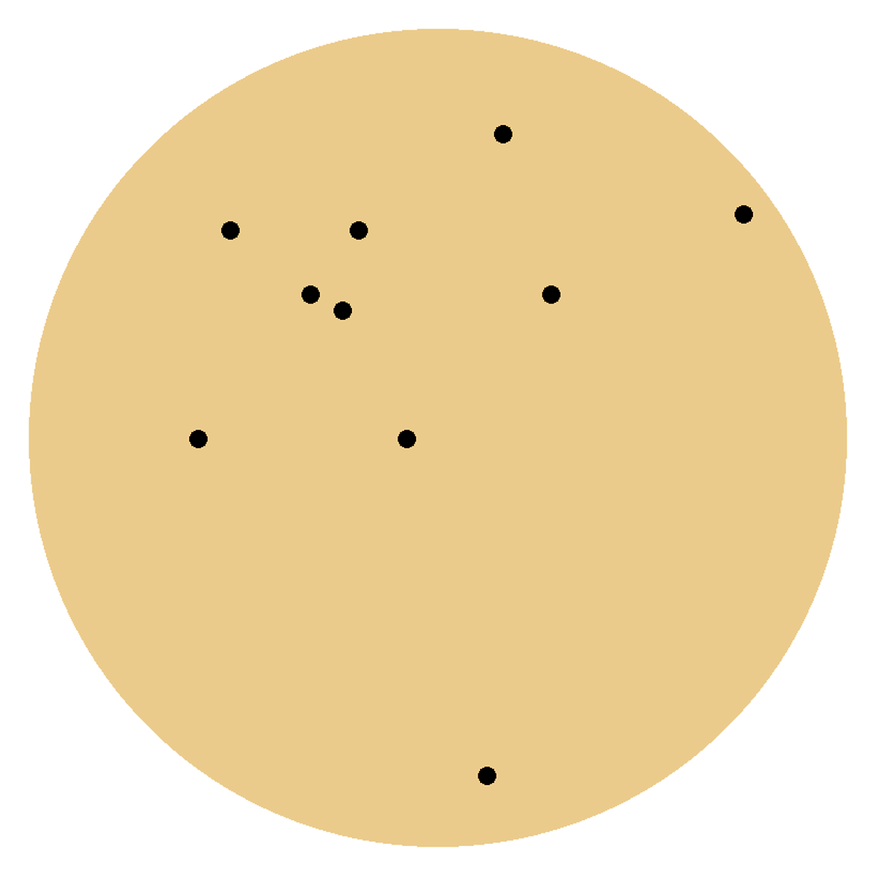
This image should convey the scale of the representational space defined by these small subsets. There are approximately 2.76 \times 10^{26} unique subsets containing exactly 10 elements — exceeding any volume of information that we may want to encode.
The tendency towards orthogonality of hypervectors aligns with subset combinatorics, particularly regarding the probability of set overlap. Two random sets usually share no or very few elements. Significant or even complete overlap is statistically improbable. This probability distribution is shown here as a table, for random sets with cardinality P = 10 within an overall dimension N = 1,000:
overlap t probability
0 0.904
1 0.09215
2 0.0038
3 0.00008248
4 0.000001027
5 0.000000007505
6 0.00000000003172
7 0.00000000000007345
8 0.00000000000000008363
9 0.00000000000000000003758
10 0.000000000000000000000003796Generally, the probability that two random sets with equal dimension N and respective populations P_1 and P_2 share t elements is given by the hypergeometric distribution
p(t) = \binom{P_1}{t} \binom{N - P_1}{P_2 - t} \binom{N}{P_2}^{-1}
The overlap score, defined as the size of the intersection between two sets, serves as the metric for similarity. These overlap probabilities are extremely skewed. As a result, any given set inhabits a minute neighborhood of similar sets. Beyond this tiny neighborhood, the set is highly dissimilar to everything else found within the vast representational space.
An interesting consequence: if a corpus of information is encoded as random sets, these sets are not only mutually distinct, but also highly dissimilar to any arbitrary set. This phenomenon allows us to clearly differentiate between known and unknown information. A nearest-neighbor search originating from a random set almost never hits known data. There is almost no middle ground between nearly identical and totally unrelated sets.
Contrast this with standard vector spaces, which rely on dense semantic gradients for tasks like RAG or image retrieval. In those continuous spaces, a vector search almost always returns a unique best match, even if that resulting match bears no meaningful similarity to the query.
A central challenge in symbolic AI is the formal representation of information: what defines a symbol as the fundamental unit of information, and by what mechanisms are these symbols organized into nested, composite data structures?
Information units encoded as small subsets within a hyperdimensional space must resist degradation. If parts of the set are lost, the representation must retain its integrity — a defining feature of distributed systems. In other words, subsets must represent the same thing as the full set. The whole is in every part.
This leads us to the definition of a sparse holographic representation (SHR) as a set where all possible subsets (the power set) represent the same information. An SHR distributes data evenly, meaning no individual element is tied to a specific subfeature. Mathematically, every possible subset — even a single element — carries the full semantic weight of the entire concept. Practical memory retrieval requires a sufficiently large subset to statistically isolate that meaning against the background noise of other overlapping representations.
Because the empty set is trivially a subset of all SHRs, querying with an empty or completely unrecognized pattern yields no unique resolution: it is a superposition of all possible knowledge.
Sparse holographic representation (SHR)
A set where all possible subsets represent the same semantic information. Used as an encoding scheme for symbolic tokens.
In formal logic, if a set and all its subsets map to the exact same semantic value, the set is treated as a singleton in the information space. Although it contains multiple elements, it is functionally a single atom of information.
For practical purposes, a sparse holographic representation is simply encoded as a random set. Different SHRs may randomly overlap in a few elements, but such small overlap does not indicate information similarity. Two random sparse sets are extremely unlikely to share more than a few elements.
SHRs may represent semantic primitives (like “red” or “apple”), chunks of information (“red apple”), non-lexical and higher-level concepts, or pointers to data structures.
Although the information represented by an SHR may have some kind of substructure, the SHR has by definition no internal structure: every element carries the same meaning. This is the key to compositionality, or more precisely its inverse: decompositionality. We can easily compose multiple sets by forming their union. But in order to decompose that union and recover its original constituents, we must group elements by their meaning, and this is only possible for holographic sets. Decomposition would fail if the sets involved had overlapping substructures.
Sparse distributed representations (SDRs) are an encoding scheme where real-world information is represented as sparse binary hypervectors, which we treat as sets. This data concept is fully compatible with the set-based framework introduced here. In particular, topological memory and related algorithms operate directly on SDRs. This complements existing SDR-based applications with a scalable and performant associative memory driven by exact nearest-neighbor search and subset pattern matching.
The concept of SDRs, popularized by Hawkins and Numenta (see for example Ahmad (2015) for an overview), is fully aligned with this set-theoretic approach. Considered the theoretical universal language of the neocortex, SDRs can encode any data type as long as the encoding captures its underlying semantic characteristics. Each element within an SDR encodes semantic meaning, but because the representation is distributed, an element may participate in unrelated SDRs. It is the concurrent activation of the entire set that disambiguates the specific meaning.
Sparse distributed representation (SDR)
An encoding scheme representing perceptual data as sparse sets within a hyperdimensional space. Active elements correspond to shared semantic features.
This data structure is complementary to sparse holographic representations (SHRs), where information is distributed such that any subset remains representative. Where SDRs are foundational for upstream perceptual data, SHRs are the basis for higher-level cognitive functions like language, where compositionality is essential.
Topological memory bridges the gap between perception and symbolic reasoning: perceptual signals (SDRs) as well as symbols (SHRs) are universally represented by sets. They differ in their overlap characteristics and semantic interpretation, but are processed at an elementary level by the same mechanisms.
Specialized SDR encoders have been developed to handle various data types.
Continuous numeric data, ranging from physical measurements to financial information, is mapped to SDRs such that similar values produce overlapping patterns.
Language elements (words, sentences, etc.) are traditionally converted into SDRs where items with similar meanings share overlapping elements. But note that in our framework, symbols must be encoded as random SHRs. This means semantic similarity between symbols arises from graph distance and spreading activation rather than representational overlap.
Raw sensory data from the physical world, such as images and sounds, can be encoded into sparse binary representations. A canonical example is the classification of handwritten digits, where raster images are encoded as SDRs and subsequently classified through a hetero-associative memory.
Categorical data, such as discrete labels or behaviors, can be represented as SDRs, often using encoders that preserve the logical relationships between different categories.
Spatiotemporal data, for instance geolocations and timestamps, are encoded as SDRs to model physical positions and chronological movement.
Dense vector embeddings (real-valued low-dimensional arrays) from conventional deep learning models can be transformed into sparse binary hypervectors.
Grid cell-like encodings, a technique inspired by neuroscience, represent an object’s position relative to a reference frame. Unlike conventional coordinates, these encodings use multiple periodic scales and orientations to create a unique signature for every location in a space. Application areas include physical navigation, path integration, robotic movement, abstract cognitive maps, or positional encoding augmenting transformer models. Similar mechanisms provide the temporal scaffolding required to anchor episodic memories.
The grounding problem is a fundamental challenge in artificial intelligence: how do the abstract symbols (words, numbers, etc.) that an AI manipulates acquire actual, real-world meaning?
Modern deep learning and LLMs process human language as a vast system of syntax. They learn the mathematical probability of how tokens fit together, much like a person locked in a room with a dictionary. They can perfectly simulate grammatical rules. But because their symbols only point to other symbols, they lack semantics: the meaning of symbols in the physical world.
Within the topological memory framework, sensory perception and symbolic cognition are founded on the same data structure: discrete sets. Associative memory retrieval functions as a transcoder between the data domains.
Here is a brief outline of this computational model:
Raw perceptual data from the physical world (vision, audio, etc.) is transduced into overlapping SDRs. In an SDR, elements directly represent shared semantic and physical features. We can leverage a host of pre-existing SDR encoders to handle this raw sensory transduction.
High-level concepts and symbolic tokens (words, numbers, etc.) are encoded as orthogonal SHRs. These are random, orthogonal sets where no single element holds specific sub-feature meaning. Both SDRs and SHRs are natively processed within the same computational pipeline.
A symbol is grounded when its abstract SHR is bound to the physical SDR of that object. Computationally, this is the result of heteroencoding. For example, the perception of the color red is encoded as a class of highly overlapping SDRs, each representing different impressions of red. Heteroencoding maps these to a stable SHR: the symbol “red” is no longer a floating syntactic token, but is deterministically anchored to a physical sensory stream.
This mechanism preserves the nuanced gradients of perception and simultaneously generates the composition-ready symbolic tokens required for knowledge representation and reasoning.
Generalizing this approach beyond human-centric physical embodiment, a synthetic intelligence can operate on any kind of sensory data and condense it into non-human symbols — its physical world is the data stream. And of course, this sensory grounding is optional. A language-only intelligence can bypass the perception pipeline. Tokenizing inputs directly into symbolic representations, it would operate within the realm of ungrounded syntax.
The brain encodes information through populations of co-active neurons. Learning and retrieving these patterns requires an associative memory mechanism capable of direct access. Cognitive psychology confirms this: the mind retrieves information directly by its content, rather than scanning through memory locations. Human memory has an enormous storage capacity, and it learns quickly.
The data objects stored in this content-addressable memory are population codes: relatively small, discrete subsets of a very large group of neurons.
A biologically plausible mechanism for this kind of memory has remained elusive for decades. Without a direct mechanism to store and retrieve these population codes, artificial intelligence has had to build its computational foundation on non-biological approximations, such as continuous weights. We address this gap by showing that discrete associative memory is inherent in the network topology itself.
This associative behavior emerges naturally from random network topology through a fundamental mechanism: a combinatorially expanded hidden layer. Each node in this hidden layer receives at least two fixed connections from the input layer. It also forms dense, dynamic links with the output layer. These links are the location of memory and learning.
Paths between the hidden layer and the target output are opened when storing information. Memory traces fade when these paths close. Memory retrieval activates hidden layer nodes that receive at least two binary inputs. Those activations are then summed up and thresholded to produce an output with the desired sparsity level.
Topological associative memory
Discrete associative memory for sparse sets, emerging from combinatorial network expansion. Learning occurs by switching binary connections, while k-winners-take-all serves as the retrieval engine.
This mechanism does not involve continuous connection weights. In a departure from conventional neural networks, hidden layer activation is modeled with binary inputs and a simple excitatory threshold, analogous to the original artificial neuron proposed by Warren McCulloch and Walter Pitts (1943).
We model learning simply through the opening and closing of signal paths, abstracting away the biological specifics of neural plasticity. Topological plasticity becomes the generalized mechanism of associative learning. The underlying biological realization may be synaptic long-term potentiation (LTP), dendritic plasticity, or other phenomena. Additionally, topological plasticity may involve a combination of such neural mechanisms. This abstraction is supported by experimental observations: the rapid formation and elimination of dendritic spines combined with the activation of “silent” synapses indicate that the brain uses switch-like mechanisms to alter its effective network topology.
Topological plasticity
The generalized mechanism of associative learning in this framework. Memory traces are formed or eliminated by switching binary network connections (opening and closing signal paths) rather than adjusting continuous synaptic weights.
The concept of generalized topological plasticity is compatible with Donald Hebb’s original postulate, famously summarized as “neurons that fire together, wire together”. Although the concept of Hebbian learning is commonly conflated with the theory that continuous synaptic weights represent information, this perceptron model did not originate with Hebb.
Associative network topology requires a combinatorially expanded hidden layer: it is randomly connected to all N input nodes, with a minimum of two inputs projecting into each hidden layer node. This means there are at least N(N-1)/2 hidden nodes — a combinatorial fan-out by a factor (N-1)/2. This design principle is known as expansion coding.
Expansion coding
A network design using a combinatorially expanded hidden layer. Each hidden node receives fixed connections from a pair of input nodes.
In an idealized “canonical” topology, exactly N(N-1)/2 hidden nodes receive exactly two connections from the input layer. This is a valid approximation of biological networks because simultaneous excitations across three or more input nodes are rare due to the input’s sparsity. A hidden layer node connected to three input nodes is shared by three possible input pairs, and four connections correspond to six input pairs. This setup can reduce the hidden layer’s size without affecting the core mechanism of associative learning, though it results in a comparatively lower memory capacity.
The purpose of this \mathcal{O}(N^2) fan-out is not to separate patterns to reduce interference, as in conventional networks, but to create massive storage redundancy. When an association is stored, every pair of active input elements activates a specific hidden node, which then forms a discrete connection to the target output. Because the memory is distributed across this redundant web of links, querying the system with only a small subset of the original pattern activates enough links to reconstruct the whole. This structural redundancy is the foundation that enables pattern completion, subset matching, and the memory’s abundant storage capacity.
In this model, learning is a distributed yet localized process: a single write operation affects only a fraction of memory locations without causing a ripple effect within the entire space and therefore avoiding catastrophic forgetting.
Local learning
Topological memory stores new information through local memory updates, rather than global weight adjustments.
The following figure shows the canonical topology for a small number of connections. Real-world associative memories must involve much larger layers than this example suggests, with typical inputs and outputs ranging from 1,000 to 10,000 nodes.
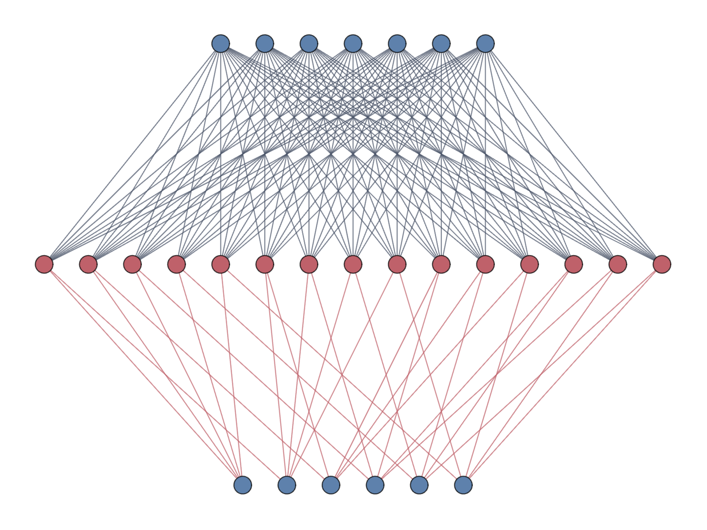
This type of feed-forward topology, with its physically distinct input and output layers, is inherently hetero-associative. It requires a secondary incoming pathway for training the output layer. The input and output layers generally have different dimensions, representing information from distinct domains. This topology aligns with the overall architecture of the cerebellum — a brain structure that initially evolved to associate sensory inputs to motor control outputs.
Auto-associative behavior emerges from a recurrent topology with a massively expanded hidden layer. Here the input signal is routed to the latent space and back into the input layer, updating the system’s state. A single neural layer acts simultaneously as the input receiver and the output state. Consequently, the input and the output have identical dimensions and represent the same kind of information. This architecture broadly matches the topology of the neocortex, which is widely assumed to perform auto-associative functions.
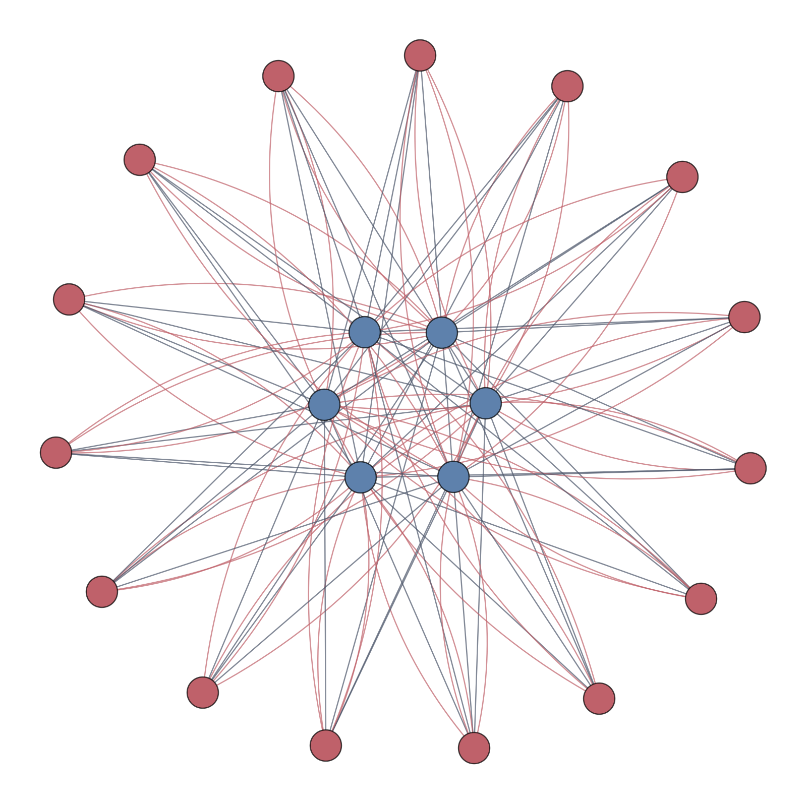
Both hetero-associative and auto-associative topologies are technically single-layer networks in standard neural network terminology. The connections from the input to the hidden layer are static, performing expansion coding as a preprocessing step. The only part of the network that can learn via adjustable topological paths is the final connection to the output layer.
A side-by-side comparison shows the architectural difference between recurrent auto-associative and feed-forward hetero-associative architectures. Despite their structural differences, both types execute the same topological associative memory algorithm.
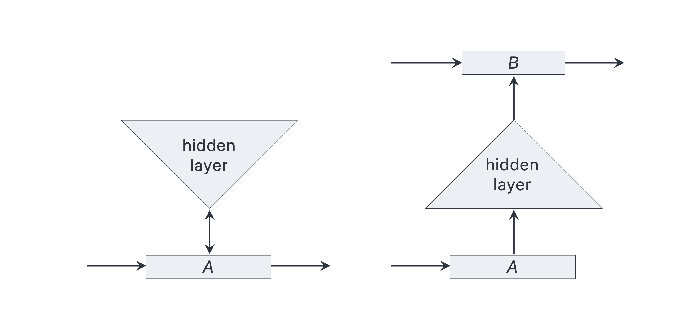
In a biological network, the hidden layer can manifest either as a massive population of neurons (instantly recognizable in the cerebellum) or as an expansive dendritic network (characteristic of the neocortex). Despite their pronounced anatomical differences, both structures are suitable to execute the same abstract computation: an associative memory for discrete sets, with retrieval operating via subset pattern matching. Both the cerebellum and the neocortex have been hypothesized to be associative memories. Both are modeled by the same computational function within the topological memory framework.
Here we examine the precise mechanics of storing and retrieving sets, at the level of explicit set elements. Later sections abstract these into higher-level symbols.
To demonstrate this, imagine we are interacting with a topological memory engine through a command-line interface. In the examples below, lines starting with>are the user’s input prompt, and subsequent lines show the memory’s response.
(Note: a command-line tool with equivalent functionality but a different syntax is included in the standard-C reference implementation.)
Topological memory can indeed be used interactively: information is stored in a single pass and can be immediately retrieved.
At the session start, we instantiate a memory for heteroassociations A \to B with hyperparameters N_A = 1,000, N_B = 500 (dimensions), P_A = 10, and P_B = 5 (populations). Note that this memory is asymmetric with respect to its input and output parameters.
> memory 1000 10 -> 500 5Specify sets A and B:
> A := {198 207 288 335 414 633 643 782 808 960}
> B := {4 185 253 354 393}In our convention, set elements are numbered from 1 to N (the universal set’s cardinality).
Store the heteroassociation A \to B:
> A -> BQuerying the memory with A accurately retrieves B:
> A
{4 185 253 354 393}Retrieving the original association from noisy input (additive noise) returns the same answer:
> {29 137 198 207 248 281 288 335 357 414 499 600 633
643 782 784 808 960}
{4 185 253 354 393}We can also retrieve the same association from an incomplete input (subtractive noise):
> {198 207 335 414 633 808 960}
{4 185 253 354 393}As one can see from these examples, this associative memory works differently from the association (or dictionary) data structures in modern programming. Lookup tables rely on hashing for exact matches. They cannot perform the kind of subset queries shown here.
In this specific configuration, at least 7 input elements must match. The pattern matching threshold is automatically derived from hyperparameters N_A and P_A, unless a user-defined threshold overrides the default value.
Accordingly, pattern matching with only 6 of the original input elements fails: the memory query returns an empty set.
> {198 207 335 414 633 808}
{}Querying with an unknown input pattern reliably gives an empty set:
> {171 175 403 412 417 434 483 504 808 902}
{}A false positive outcome is extremely unlikely. In this specific configuration, the probability of random input correctly matching 7 elements is 0.00000000000007345. This constraint suppresses hallucinations resulting from false-positive memory retrieval.
The memory can handle associations with different inputs pointing to the same output (many-to-one associations):
> A2 := {2 88 150 240 311 490 555 601 777 890}; A2 -> B;
> A2
{4 185 253 354 393}Storing one-to-many associations combines the right-hand sides (outputs) in memory:
> A2 -> {1 2 13 266 480};
> A2
{1 2 4 13 185 253 266 354 393 480}Querying with a union of equal-sized, non-overlapping patterns creates a tie. The system cannot return a unique best match:
> {167 279 453 585 835 836 906 980} -> {3 159 180 241 403}
> {338 442 553 718 784 886 890 977} -> {41 70 395 465 492}
> {167 279 338 442 453 553 585 718 784 835 836 886 890
906 977 980}
{}Removing any one element from the union breaks the tie:
> {279 338 442 453 553 585 718 784 835 836 886 890 906 977 980}
{41 70 395 465 492}Now we subtract the matching subset to retrieve the remaining pattern.
> {167 279 453 585 835 836 906 980}
{3 159 180 241 403}What we see here is the extraction of an item from a union via randomized subsampling. This process is the basis for iterative decomposition of bundled data.
Next we instantiate a second, independent memory where inputs and outputs have the same dimension N = 1,000 and uniform population P = 10:
> memory 1000 10 -> 1000 10This symmetric memory can equally store heteroassociations A \to B and autoassociations A \to A, and even permits a mixture of both types. The underlying topological associative memory algorithm makes no distinction between these different kinds of associations.
A memory that is exclusively auto-associative is called an item memory, cleanup memory, or item store.
This defines a set D and stores it into the auto-associative memory:
> D := {5 9 77 254 329 447 637 754 770 856}; D -> D;Querying with set D:
> D
{5 9 77 254 329 447 637 754 770 856}This particular memory configuration has the capacity to store about 959,818 distinct autoassociations.
Querying with a very noisy version of the original pattern cleans up the input:
> {2 5 6 9 25 77 120 124 148 160 202 214 254 276 282 284 294
300 304 329 346 354 413 426 441 447 463 474 475 480 511
517 554 559 560 561 568 581 593 629 637 654 671 683 686
713 734 754 770 774 819 832 856 900 902 916 926 941 960}
{5 9 77 254 329 447 637 754 770 856}A partial (subset) query completes the missing elements:
> {9 77 329 447 637 754 856}
{5 9 77 254 329 447 637 754 770 856} This mechanism is known as pattern completion — an essential process in cognition.
Storing another pattern E in memory and querying with the bundle D \cup E (denoted in the CLI by simply placing the variables side-by-side) gives an empty set: no unique best match can be determined in this case.
> E := {102 105 134 258 275 602 625 791 798 886}; E -> E;
> D E
{} Randomized subsampling of D \cup E extracts one of the items:
> {5 9 102 254 258 275 329 447 602 625 637 754 770 791 798
856 886}
{5 9 77 254 329 447 637 754 770 856} The memory separates known from unknown information:
> {34 55 56 80 138 339 360 424 462 515 548 589 860}
{} The examples shown so far involve random tokens with no or small mutual overlap. But topological memory can also distinguish between nearly identical patterns, differing in just one element:
> F := {1 2 3 4 5 6 7 8 9 10}; F -> F
> G := {1 2 3 4 5 6 7 8 9 11}; G -> G
The memory retrieves exact matches:
> F
{1 2 3 4 5 6 7 8 9 10}
> G
{1 2 3 4 5 6 7 8 9 11}This section outlines the functional principles of topological memory, serving as a usage and implementation guide.
A unified core algorithm implements a general hetero-associative memory for writing and retrieving associations A \to B. Auto-associative behavior is realized at the usage level by constraining data storage to autoassociations A \to A.
A hetero-associative memoryM generally represents a mapping M: U \to V from a universal set U to a universal set V, which differs from U in dimension and object type. We call U the memory’s input layer and V its output layer. The memory is constructed incrementally by storing elementary associations A \to B, where A \subset U and B \subset V are small subsets of their respective universes.
An auto-associative memory maps a universal set U onto itself. In this case, the memory’s input and output layers are shared, and the memory stores associations of the form A \to A. Here the underlying topological memory is configured with identical hyperparameters for the input and the output. Implemented as a functional network component, auto-associative memories do not provide the secondary input channel (the B in A \to B) necessary for storing heteroassociations.
The memory writing process has the following properties:
Writing an association A \to B into memory is an atomic operation. Once new information is stored in memory, it is merged with existing memory traces and becomes immediately available for retrieval. Memory retrieval, also an atomic operation, can be interspersed with memory storage. This enables online learning.
Data storage is distributed and redundant — the basis for the memory’s noise and fault tolerance.
The memory state is an accumulation of all prior write operations. Individual write operations cannot be reconstructed from the aggregate memory state, and their order is not maintained.
The sizes (number of elements) of A and B may vary. When storing an association, the size of A or B may lie below the thresholds implied by the memory’s hyperparameters. Storing associations involving empty sets has no effect on the memory state. A software or hardware implementation should not treat this case as an error.
The core memory algorithm functions correctly for non-sparse inputs, but its performance and capacity strongly depend on sparsity.
Patterns written into memory may have any degree of overlap.
Writing the same association multiple times is the same as writing it once: the memory’s storage model deduplicates redundant information by design.
For a subset A_1 \subset A, storing both A_1 \to B and its extension A \to B subsumes the association for A_1.
Storing new information increases the memory density, unless the memory is full. Writing data into a full memory has no effect.
Note that a stochastic memory decay mechanism, if enabled, may change certain behaviors listed above.
Memory retrieval functions via subset pattern matching:
When queried with a set A \subset U, the memory retrieves an association X \to Y by identifying the best partial match X \subseteq A and its associated set Y \subset V.
Best match
For a query pattern A, the best match X \to Y is defined as the unique largest subset X \subseteq A where every element pair within X contributes to every element of Y.
Here are the main properties of this mechanism:
The size of the matching patterns X and Y may vary, but must exceed the thresholds defined by the memory’s hyperparameters.
An implementation should give an empty result if there is no match meeting those requirements. This mechanism, based on overlap probabilities within the memory’s storage capacity, serves as a test of whether or not an item is known.
If multiple subsets of A of the exact same size meet the matching criteria, a tie occurs and the retrieval algorithm defaults to an empty result. Such ties can be resolved by systematic stochastic subsampling of the query patterns.
Memory retrieval operates on all memory traces linked to element pairs within A. Any prior write operation involving those element pairs may contribute to a successful match.
The memory merges information rather than keeping a record of atomic write operations. Therefore, the retrieval algorithm does not simply search for a match with a single association exactly as it was written into memory. Instead, it calculates a best match within the entire memory state, which aggregates all prior write operations.
As a discrete algorithm, memory retrieval can distinguish patterns that differ by just a single element, accurately finding the exact best match within known information.
Memory retrieval is a deterministic algorithm. Non-deterministic behaviors arise from randomized subsampling of query patterns.
Associative memory is generally content-addressable: memory retrieval accesses matching data directly, rather than iterating through memory records. Topological memory implements storage and retrieval of associations A \to B with a time complexity of \mathcal{O}(|A|^2), independent of the memory density.
Constant-time operation
In topological associative memory, the time complexity of data storage and retrieval is independent of the total amount of stored data.
Storing an association A \to B into memory uses expansion coding: each element pair within A activates a memory set. Each active memory set is then updated with the union of B and its current state:
Input: Sets A and B
Expansion coding: Map 2-subsets \binom{A}{2} to memory sets M_{ij}
Memory update:M_{ij} \gets M_{ij} \cup B
The time complexity of storing an association in memory is \mathcal{O}(|A|^2), independent of the total memory density.
The dimensions of A and B must match the memory’s hyperparameters N_A and N_B. There is no constraint on |A| or |B| when writing into memory.
This distributed memory model incorporates two distinct levels of redundancy: First, A and B are distributed representations on their own. Second, B is stored equally in all active memory sets linked to element pairs within A, distributing the same information redundantly over many memory locations.
In a typical low-level implementation, the memory sets M_{ij} are coded as densely packed bitvectors, whereas sparse sets A and B are best represented as variable-length lists. The memory requires N_A(N_A-1)N_B/2 binary storage locations.
The combinatorial addressing expansion, accounting for a factor (N_A-1)/2, takes the memory size to the third order \mathcal{O}(N_A^2 N_B) of the involved dimensions — this is the basis for the memory’s high capacity.
For an input set A, memory retrieval isolates the association X \to Y that best matches previously stored information: X is the largest subset of A where every element pair contributes to Y.
The algorithm operates iteratively. It calculates the most likely output Y, identifies the elements of X that do not contribute to Y, and drops them. A new estimate for Y is recalculated in each cycle. The process converges when all elements of X map consistently to Y, or fails if the remaining elements drop below the hyperparameter threshold.
Input: Query set A, hyperparameters T and P_B
Output: Unique best match Y, or an empty set \varnothing
Initialize:X \gets A
Threshold check: If |X| < T return \varnothing
Expansion coding: Map 2-subsets \binom{X}{2} to memory sets M_{ij}
Aggregate:
R \gets \sum_{ij} M_{ij} (overall response multiset)
R_i \gets \sum_{j} M_{ij} (per-element contribution)
Select: Y \gets R_{\top P_B} (kWTA with cutoff T(T-1)/2)
Threshold check: If |Y| < P_B return \varnothing
Per-element weights:w_i \gets |R_i \cap Y|
Convergence test: If w_i \ge (|X| - 1) |Y| return Y
Refine:X \gets X \setminus X_\text{min} (drop weakest contributors)
Iterate: Go to step 2
Note on pattern attribution: While the core algorithm returns the retrieved pattern Y, the matching subset X \subseteq A is manifested internally. It can be exposed via an API function to support an application’s explainability.
Implementation details:
The time complexity of retrieval is \mathcal{O}(|A|^2), but is independent of the total memory density. This satisfies the requirement for a constant-time retrieval mechanism in high-performance intelligent systems.
The threshold checks (based on hyperparameter choices) reliably separate known from unknown inputs. The default value of T is chosen to prevent false positive matches for a memory filled to capacity with SHRs.
There are various ways to implement the refinement step, balancing execution speed, memory efficiency, retrieval accuracy, and noise tolerance. The version shown here (and coded in the reference library) uses a heuristic based on subset combinatorics and operates with high mathematical accuracy. Any biological realization of memory retrieval will naturally be less accurate.
No iteration is needed if there is an immediate perfect match previously stored information. If the input A includes non-contributing elements, one or two iterations are normally sufficient.
Managing activation sparsity is a fundamental requirement in both biological neural networks and the computational model presented here.
For associative memory to function reliably, the sets representing information tokens must maintain a stable and consistent number of elements, with only small variance permitted. Population coding relies on the principle that these sets are small relative to the dimension of the universal set, a property that is the basis for compositionality.
In any neural circuit, every component must continuously regulate its output sparsity to prevent runaway activity, which would otherwise lead to a loss of pattern decomposition.
Framed in set-theoretic terms, this sparsity control reduces a multiset M to a set A = M_{\top K} by selecting the top K elements based on their frequency. This mechanism is known as the k-winners-take-all (kWTA) or K-rank algorithm. Note that in statistics, K is the conventional notation for the parameter we define here as the population P.
K-winners-take-all (kWTA)
A sparsity-controlling algorithm that reduces a multiset to a discrete set by selecting the top K most active elements.
The hard implementation of kWTA used here may return more than K elements in the event of ties: if multiple elements share the same value at the K-th rank, basic thresholding selects all of them.
An implementation with guaranteed \mathcal{O}(N) time complexity is provided in the standard C source. Linear complexity is possible in our specific case because the values to be ranked are discrete. Ranking continuous values with methods such as quickselect would be less efficient.
kWTA occurs throughout this project: at the core of the associative memory retrieval algorithm, in sparse coding of continuous-valued sensor inputs, and as an analog electronic circuit deployed in a hardware accelerator.
In “many minds” architectures, intelligence emerges not from a single central model but from many independent agents voting for majority consensus. Such models have been proposed, for example, by Marvin Minsky (1986) and Jeff Hawkins (2021). Also, modern mixture-of-experts models implement a version of this idea. In such architectures, individual votes are combined via kWTA. This mechanism can produce Bayesian-like outcomes, generating best guess predictions.
The biological equivalent of kWTA is lateral inhibition, where active neurons suppress their neighbors via inhibitory interneurons.
Set theory, together with subset combinatorics, provides a natural mathematical framework for modeling neural population codes. This notion of sets can be extended to hypergraphs to form a mathematical foundation for knowledge representation.
The mathematics of small sets is closely related to hyperdimensional computing theory, which strongly influenced the development of this project. This theory models information as binary hypervectors, equivalent to points in a high-dimensional space. These binary hypervectors are, of course, equivalent to the “characteristic vectors” of sets. The hypervector dimensionality N corresponds to the size of the universal set, and a hypervector’s Hamming weight (the number of active bits) aligns with a specific set’s size.
To benefit from the “blessing of dimensionality”, such as the mathematical tendency toward orthogonality, the vector dimensionality N is typically very large, in a range from 1,000 to about 10,000. A detailed discussion of this framework can be found in Kanerva’s 2009 overview of hyperdimensional computing.
In the context of hyperdimensional computing, storing an association physically links the binary vectors of two concepts inside a three-dimensional grid. The memory records this relationship by switching the specific grid coordinates where the individual components of both concepts intersect to 1.
Formally, writing A \to B to a memory T_{ijk} (a rank-3 tensor) can be expressed by T_{ijk} \gets T_{ijk} \lor (A_i A_j B_k) for all i < j and all k.
The core function of memory retrieval from an input A is equivalent to B_k = ( \sum_{i<j} T_{ijk} A_i A_j )_{\top P_B}.
The geometrical interpretation of this structure is a triangular prism: a cuboid with dimensions N_A \times N_A \times N_B cut diagonally in half, with the diagonal removed. This prism contains N_A (N_A - 1)N_B/2 addressable bits. Memory is not stored in a two-dimensional matrix, as one may think, but in this three-dimensional structure.
A topological memory unit stores associations A \to B with fixed dimensions, governed by the sizes N_A and N_B of the underlying network’s input and output layers.
In set-theoretic terms, A and B are simply subsets drawn from universal sets U and V with cardinalities N_A and N_B, respectively.
The populations (sizes) of A and B may vary within the same memory unit. Retrieval via subset matching requires a minimum number of elements in A and B to match with previously stored patterns. The choice of these thresholds depends on the meaning and purpose of the representations to be processed: symbolic tokens, their bundles, pointers, segmented data structures, numeric codes, grid cell encodings, or overlapping sensory information.
The parametrization chosen here is most convenient and intuitive for working with sparse holographic representations (SHRs) of uniform sparsity.
| Hyperparameter | Meaning | Usage |
|---|---|---|
| N_A | input dimension | |
| P_A | input population | |
| N_B | output dimension | N_B = N_A if auto-associative |
| P_B | output matching threshold | P_B = P_A if auto-associative |
| T | input matching threshold | computed automatically or set explicitly |
Auto-associative memory is realized by a configuration with N_B = N_A and P_B = P_A.
A software or hardware implementation of topological associative memory should allow arbitrary-sized patterns to be stored into memory. In particular, it should not treat storing an association involving an empty set as an error. For a write operation to affect the memory state, A must have at least two elements, and B must be non-empty.
In memory retrieval, a successful match must include at least T elements of A and P_B elements of B.
By default, the pattern matching threshold T is automatically set to a value that minimizes false-positive matches. This is based on the memory’s capacity to store random associations (SHRs) with uniform populations P_A and P_B. Computing T involves the full set of hyperparameters.
The automatically computed value of T is optimized for a memory that stores SHRs. This default can be overridden, which is often necessary when operating on SDRs. The pattern matching threshold is a global parameter within the memory instance; it cannot be adjusted on a per-query basis. If an explicit value is specified for T, the value of P_A has no effect on the memory’s operation: either P_A or an explicit value of T governs the pattern matching logic, but not both at the same time.
Apart from these hyperparameters, the memory algorithm contains no other configuration options — it is neither necessary nor possible to fine-tune internal parameters for a specific application scenario.
Topological memory can store and perfectly retrieve a very large number of associations A \to B between sets A and B. The capacity depends on the memory’s hyperparameters and the statistical overlap among the sets A.
We define the memory’s nominal capacity as the number of random heteroassociations that can be stored until half the storage locations are set to 1. This is the point of maximum information density, because the capacity is symmetric with respect to bit-flipping.
Nominal memory capacity The maximum number of random associations a topological memory can store until half of its storage locations are set to 1 (density \rho^* = 0.5).
Storing one association sets P_A (P_A-1)P_B/2 storage bits to 1, regardless of their current state. As the memory density increases, the probability of write operations flipping bits from 0 to 1 decreases.
Given the total memory size N_A(N_A-1)N_B/2, we can quickly calculate the expected number of write operations necessary to fill half the memory:
C_\text{hetero} \approx \ln(2) \frac{ N_A (N_A-1) N_B} { P_A (P_A-1) P_B }
This formula shows that the sparsity of A has a stronger impact on capacity than that of B, primarily due to the combinatorial expansion occurring from the input to the hidden layer.
The following plot shows the relationship between memory density and the number of stored SHRs. A configuration with N = 1,000 and P = 10 has a nominal capacity of around 769,393 heteroassociations at density \rho^* = 0.5.
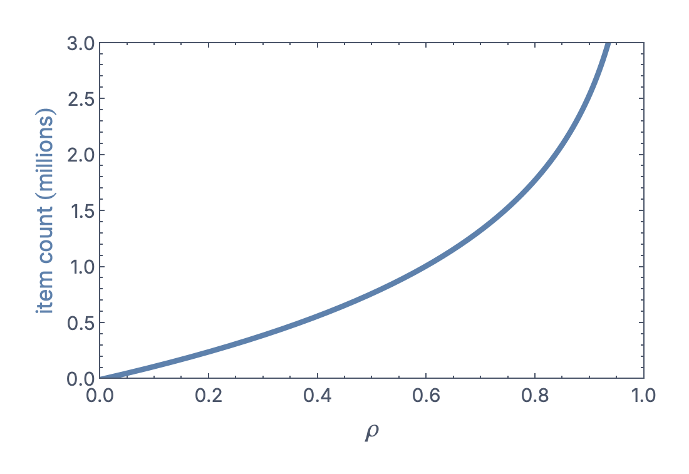
Two complementary metrics quantify retrieval accuracy: the average overlap between stored and retrieved sets (number of correctly matched elements) and their average Hamming distance \text{H} (number of disagreeing elements). Both metrics are calculated at the output layer (the right-hand side of associations A \to B). Perfectly accurate retrieval implies \text{H} = 0 and full overlap.
In a memory filled with random associations at uniform population, stored and retrieved patterns fully overlap regardless of the memory density. But the average Hamming distance turns non-zero from a density of around 0.85 and then grows like a hockey stick: memory recall picks up spurious elements in addition to the correct ones due to interference with unrelated information:
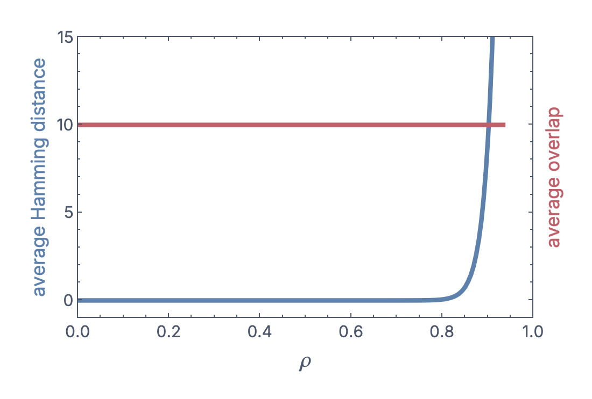
The memory cliff phenomenon occurs well beyond the nominal capacity mark \rho^* = 0.5.
Auto-associative memory has a higher capacity than hetero-associative memory with equivalent hyperparameters. Recall that topological memory assigns a memory set to each pair of input elements. Each element of the memory set represents a topological connection to the corresponding output element. But with autoassociations, the input and the output are identical: the memory set corresponding to elements (i,j) always includes i and j. In each memory set, two elements are “clamped”. This means that only N-2 output dimensions carry information (a negligible difference), and P-2 instead of P elements of the memory sets are affected when storing an autoassociation (a noticeable difference).
The nominal capacity for auto-associative memory storing random SHRs with dimension N and population P is given by
C_\text{auto} \approx \ln(2) \frac{ N(N-1)(N-2)} {P(P-1)(P-2)}
We conclude that the capacity for storing autoassociations is about P/(P-2) times larger than that for heteroassociations with the same hyperparameters.
Auto-associative memory with N = 1,000 and P = 10 can store and accurately recall about 959,818 random patterns.
For a fixed population size, memory capacity scales rapidly with the dimensionality N. A configuration with 5,000 dimensions can store approximately 100 million associations.
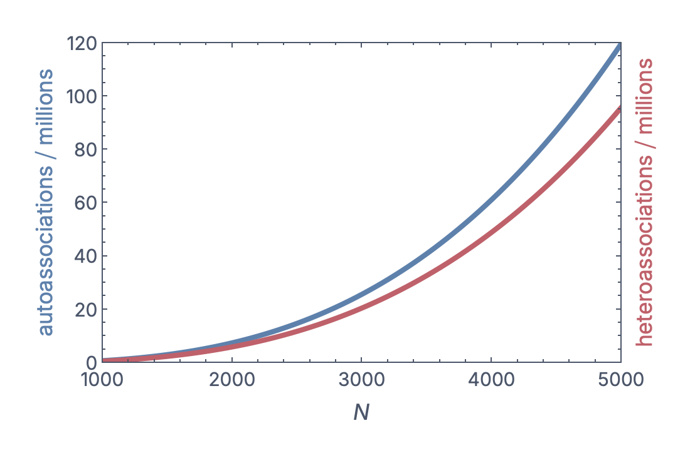
A notable property of topological memory is that the physical storage cost per item is independent of the overarching dimensionality. We can derive the number of bits required to store one association by dividing the total number of storage locations V by the nominal capacity C. The capacity C is given by
C \approx \ln(2) \frac{V}{L}
where L is the number of bits affected by one write operation. With this approximation for the capacity, the storage cost is simply:
\frac{V}{C} \approx \frac{L}{\ln(2)}
In this expression, the total memory size V and therefore the memory’s dimensionality cancel out.
The cost of storing a heteroassociation is then given by:
\left(\frac{V}{C}\right)_\text{hetero} \approx \frac{P_A(P_A-1)P_B}{\ln(4)}
The number of bits required to store an autoassociation:
\left(\frac{V}{C}\right)_\text{auto} \approx \frac{P(P-1)(P-2)}{\ln(4)}
In a configuration with P = 10, one autoassociation occupies 519 bits, regardless of the dimensionality. Considering the high redundancy of data storage, this is remarkably low — especially when compared with a dense hypervector representation, occupying N bits.
Topological associative memory is fault-tolerant: information can be accurately retrieved from mere subsets of originally stored patterns. In an auto-associative context, this mechanism drives pattern completion.
For a memory configuration with N = 1,000 and P = 10, the default pattern matching threshold is T = 7. Retrieval succeeds even if three random elements are missing, but input reduction increases susceptibility to interference. This shifts the memory cliff to a lower memory density:
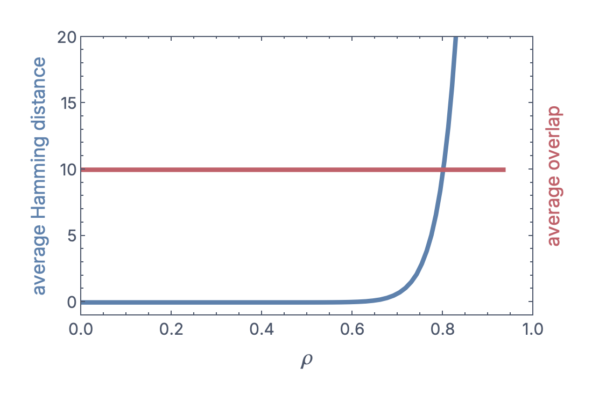
Beyond handling missing data, the algorithm uses subset pattern matching to extract known information from inputs polluted with additive noise. It filters out elements that are not part of a known pattern. This is the basis for pattern decomposition — an essential cognitive process. It is also the exact mechanism that decomposes unions (bundles) of sets back into their constituent tokens.
This plot illustrates the retrieval accuracy for patterns with P = 10 from inputs with 15 additional random elements:
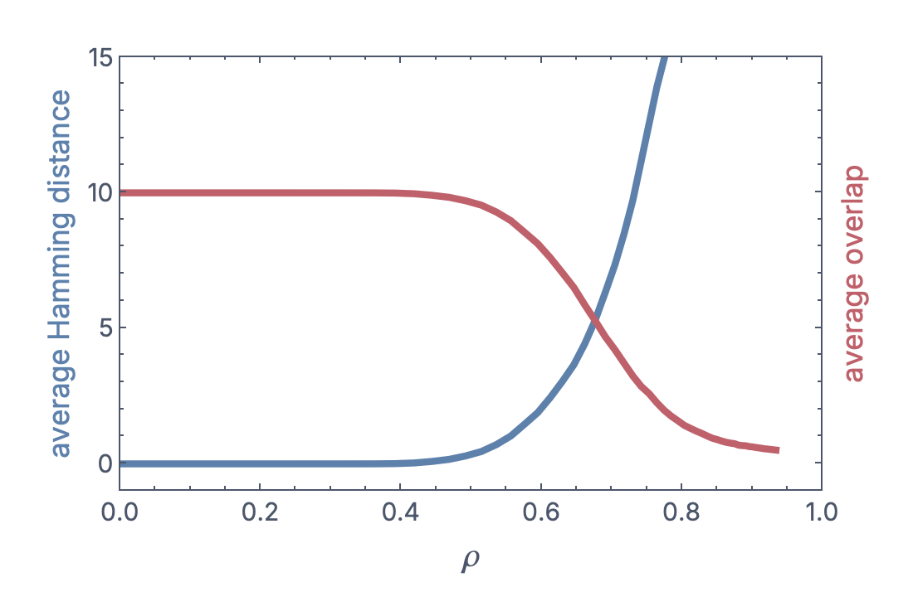
The average overlap decreases as the memory density increases. Examining the output of individual queries, we observe that most outcomes are either perfect or empty. Zero results occur when there is a tie between equally valid matches. In practical applications, queries will be repeated a few times with subsampled versions of the input, until a unique best match is found: the decrease of overlap as shown in the figure above correlates with an increasing number of randomized queries, necessary for a partial match to win.
The memory retrieval algorithm attempts to find the best possible match of an input set A with previously stored associations. To avoid false positives (hallucinations), a minimum number T of elements must coincide. This pattern matching threshold is governed by the overlap probability between a pair of random sets and by the memory’s nominal capacity C.
If we pick two random sets of size P from a universe of size N, the probability that they share exactly t elements is given by the hypergeometric distribution:
p(t) = \binom{P}{t} \binom{N - P}{P - t} \binom{N}{P}^{-1}
If the memory is filled to its nominal capacity, it contains C distinct SHRs. If we query the memory with a random, unknown input pattern, the probability that this input falsely matches any one of the stored entries by at least T elements is bounded by C \cdot p(T) (using the union bound and approximating the cumulative probability by its dominant term p(T)).
To derive a suitable threshold T, we mandate the following condition: if each of the C entries stored in a full memory is probed with an individual random pattern, the expected number of false-positive matches must remain below 1. This is expressed by the inequality
C^2 \cdot p(T) < 1
Substituting the hypergeometric probability for p(T) and the nominal capacity formula for C_\text{hetero}, we arrive at the threshold condition for heteroassociations:
\left( \ln(2) \frac{N_A (N_A - 1) N_B}{P_A (P_A - 1) P_B}\right)^2 \cdot \binom{P_A}{T} \binom{N_A - P_A}{P_A - T} \binom{N_A}{P_A}^{-1} < 1
This requirement can be fulfilled only for inputs with populations P_A \ge 7. For smaller populations, we set T = P_A, which means all elements of the input pattern must match.
The following table shows the pattern matching threshold T for various hyperparameter configurations N = N_A = N_B and P = P_A = P_B:
P = 7 8 9 10 11 12 13 14 15 16 17 18 19 20 21 22 23 24
N =
1k 6 7 7 7 7 7 8 8 8 8 8 9 9 9 9 9 9 10
2k 6 7 7 7 7 7 7 8 8 8 8 8 8 9 9 9 9 9
3k 6 7 7 7 7 7 7 8 8 8 8 8 8 8 9 9 9 9
4k 6 7 7 7 7 7 7 8 8 8 8 8 8 8 8 9 9 9
5k 6 7 7 7 7 7 7 7 8 8 8 8 8 8 8 8 9 9
6k 6 7 7 7 7 7 7 7 8 8 8 8 8 8 8 8 8 9
7k 6 7 7 7 7 7 7 7 8 8 8 8 8 8 8 8 8 9
8k 6 7 7 7 7 7 7 7 8 8 8 8 8 8 8 8 8 8
9k 6 7 7 7 7 7 7 7 8 8 8 8 8 8 8 8 8 8
10k 6 7 7 7 7 7 7 7 8 8 8 8 8 8 8 8 8 8
11k 6 7 7 7 7 7 7 7 7 8 8 8 8 8 8 8 8 8
12k 6 7 7 7 7 7 7 7 7 8 8 8 8 8 8 8 8 8For auto-associative memory, the threshold condition is given by
\left( \ln(2) \frac{N (N - 1) (N - 2)}{P (P - 1) (P - 2)}\right)^2 \cdot \binom{P}{T} \binom{N - P}{P - T} \binom{N}{P}^{-1} < 1
Classical associative memory algorithms, like Hopfield nets, are designed to always recall. They do this by converging to a stable state known as an attractor. This attractor might be the closest stored pattern, or it could just as easily be a spurious state hallucinated from unrelated memories.
Topological associative memory works differently. It only converges if a statistically significant portion of the input overlaps with known information: only known patterns function as attractors in this model. The memory’s ability to separate known from unknown patterns is one of its defining features.
This filtering mechanism works accurately up to the nominal memory capacity at density \rho^* = 0.5. Above this mark, the probability of false-positive retrieval begins to increase. This is intuitively clear: with a hypothetical full memory, any random input matches.
Here is a simulation of this behavior, measuring the probability of non-empty responses to random query patterns.
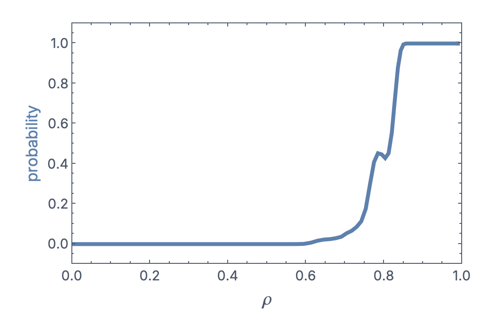
In our computational framework, sets act as the foundational data structure — specifically, small subsets drawn from hyperdimensional universes. The core algorithm is topological memory, which retrieves information via subset pattern matching. The combination of set-based composite data structures and set-manipulating algorithms enables a huge space of possible programs.
To map this computational space, we begin by cataloging elementary data types and operations. This is the starting point for developing simple design patterns and cognitive architectures.
Here are the most common set operations and their notations:
| Function | Set Operation | Notation | Neural Basis |
|---|---|---|---|
| bundling | union | A \cup B | temporal integration |
| block coding | disjoint union | (A,B) | pathway integration |
| novelty detection | complement | A \setminus B | subtractive inhibition |
| matching | intersection | A \cap B | coincidence detection |
| prediction | symmetric difference | A \Delta B | recurrent inhibition |
| similarity | overlap metric | \vert A\cap B\vert | coincidence detection |
| majority voting | multisets | A \uplus B | linear aggregation |
| kWTA | thresholding | u_{\top K} | lateral inhibition |
| capping | subsampling | A_k | stochastic inhibition |
| decimation | subsampling | D \cdot A | stochastic inhibition |
| permutation | bijection | \pi A | recurrent pathway |
| binding | autoassociation | A \otimes B | topological memory |
| replacement | heteroassociation | A \to B | feed-forward memory |
Bundling, also known as superposition, combines multiple representations into a single representation. Together with binding and permutation, bundling is one of the basic algebraic operations used to compose and manipulate distributed representations.
A bundle represents a set of distributed representations: either SDRs encoding real-world data, or SHRs representing symbolic tokens
With objects encoded as sets A and B, their bundle is given by the set union operation A \cup B. In the context of hyperdimensional computing, this is equivalent to the logical \text{OR} between the respective characteristic vectors.
An object is either part of a bundle, or it is not. It cannot occur more than once within a bundle. This is expressed by the identity A \cup A = A. The bundling operation is commutative: A \cup B = B \cup A. Bundles represent unordered collections. To represent ordering, we need to use either block coding or permutations.
Associativity: the grouping of sets during the bundling process does not affect the resulting representation. (A \cup B) \cup C produces the same set as A \cup (B \cup C). Similarly, because the operation is commutative, the order of sets in the bundle is also irrelevant. This allows us to build up bundles incrementally, in any order.
The bundling operation preserves similarity: Both A and B are similar to A \cup B, as measured by their overlaps. In comparison, the bindingA \otimes B produces a dissimilar representation.
Bundling
Combining multiple distributed representations via the set union operation to create an unordered collection that remains semantically similar to its parts.
Bundling two representations results in a less sparse representation. For any two sets A and B, the cardinality of their union is bounded by the following inequalities:
\begin{aligned} |A| &\le |A \cup B| \le |A| + |B| \\ |B| &\le |A \cup B| \le |A| + |B| \end{aligned}
There is no hard limit on how many SHRs we can bundle before losing sparsity. But topological memory imposes a practical limit that we can measure experimentally.
First, we calculate the expected size of a bundle composed of k random SHRs with population P and dimension N:
\texttt{bundlesize}(N, P, k) = N \left(1 - \left(1 - \frac{P}{N} \right)^k \right )
The more items we add to a bundle, the higher the probability of overlap becomes. The bundle eventually converges to the universal set when saturated with all possible elements:
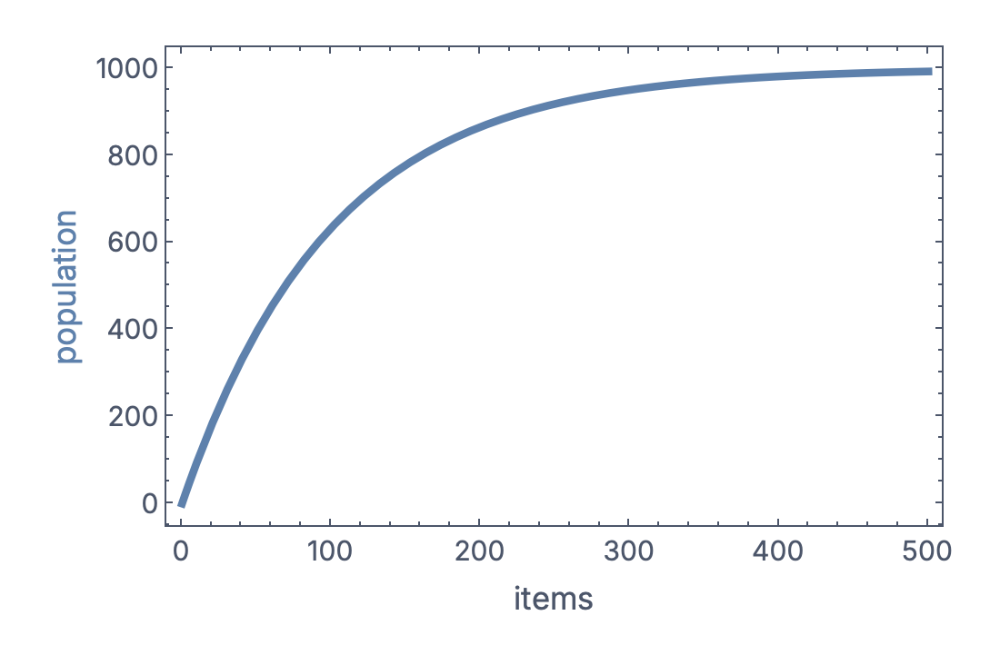
As the bundle grows, its subsets increasingly resemble unrelated patterns. This phenomenon (crosstalk) can be quantified as follows:
Consider an item memory filled to capacity with SHRs. We calculate the probability that a bundle of k SHRs overlaps with any stored item in memory by T elements (the memory’s pattern matching threshold). Such overlap causes false-positive matches during memory retrieval. We require the probability of a false-positive outcome to remain below 1 to derive a lower bound on the usable bundle size. For a fixed SHR population, this limit is a function of the dimension as shown in the following figure.
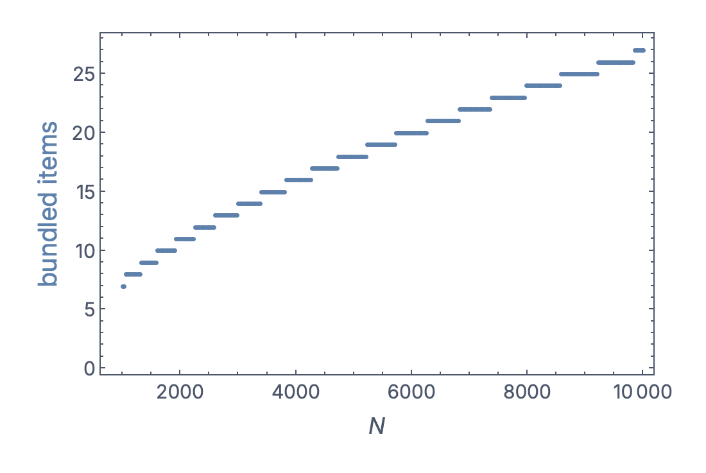
The usable bundle size is around 10 for small memory configurations. This aligns with the structural limitations of decomposing bundles using auto-associative memory, discussed in detail further below.
In a biological network, bundles can form dynamically without being persisted in memory. This happens through temporal signal integration, within recurrent networks, or as the sparse outcome of majority voting among multiple sets. Additionally, bundles can emerge during memory retrieval when inputs map to multiple outputs simultaneously.
Bundles can be naturally persisted in auto-associative memory. A memory filled with superpositions of symbolic tokens (SHRs) functions as a hypergraph database.
Disjoint bundling, a variant of the bundling operation discussed above, combines multiple disjoint sets into a single, partitioned set. Two sets are called disjoint if they are non-empty and share no elements. This forms the set-theoretic foundation for block coding.
We can combine distinct information categories, for instance multimodal sensor data, into a larger set where each block represents a non-overlapping feature space or modality. Conversely, we may partition larger sets into smaller blocks, where each block can represent a specific role or attribute. This is especially useful for building graphs where representations from the same domain are arranged in non-overlapping blocks.
Block coding
Combining non-overlapping sets via the disjoint union operation.
Technically the union of disjoint sets involves re-indexing (renumbering) their elements, as a way to tag their origin.
In standard set theory, the elements of a partitioned set all belong to the same universe. But there is also a multiverse view where each partition represents its own universe. The concept of a disjoint union is related to the coproduct in category theory, and sum or sum-set in type theory. But regardless of the mathematical formalism, we use partitioned sets to bundle different types of representations that should not be superimposed with the regular bundling mechanism. For example, a hypergraph representation might keep edge labels and a bundle of nodes in two disjoint set partitions.
This is equivalent to the disjoint union, usually denoted as A \sqcup B, which we represent as the tuple (A, B)
Disjoint bundling is not a commutative operation: (A,B) and (B,A) represent different sets.
The partitions A and B may have different dimensions (the multiverse view). The dimension \vert(A,B)\vert is the sum of the individual dimensions N_A + N_B.
Topological associative memory, of course, handles partitioned sets just like any other set. From a computational point of view, we just need to properly re-index the elements with a contiguous range of numbers. This process is structurally equivalent to concatenating the sets’ characteristic vectors.
Notably, auto-associative memory preserves the partitioned structure. Storing an association (A,B) \to (A,B) in memory treats the inputs as one contiguous set, linking information across the partitions. Querying the memory with a partially filled structure such as (A, \varnothing) infers the missing information from memory, completing the pattern.
Block coding is normally applied with a small number of partitions, where each partition can be viewed as its own universe of features. For instance, the “frames” model arranges cognitive relations in three layers. And of course, semantic triples, entity-attribute-value models, and related schemes are founded on tripartite representations.
The neural basis for disjoint bundles is the joining of distinct pathways, meaning that this mechanism is hardwired into the network architecture. Therefore, we should not use block coding for storing sequences.
Multiset aggregation, a mechanism closely related to bundling, refers to combining multiple sets into a multiset (an unordered collection of elements, or bag). Unlike bundling, which results in a set of unique elements, multiset aggregation preserves not only membership but also the multiplicity of duplicate elements.
Like bundling, multiset aggregation preserves the similarity with its components. But depending on the chosen metric, multiset similarity (or distance) may be weighted by the elements’ multiplicities.
We use the notation u = A \uplus B for a multiset u formed by aggregating sets A and B. Multiset aggregation is fundamentally commutative, meaning that A \uplus B and B \uplus A result in the same representation. It is also fully associative: (A \uplus B) \uplus C = A \uplus (B \uplus C). Note that in common hyperdimensional models, multiset aggregation is only approximately associative due to clipping and binarization; consequently, the order of operations can influence the result.
At the cellular level, neurons aggregate information through the spatial and temporal summation of postsynaptic potentials. This is modeled as a multiset where the multiplicity of elements corresponds to linear summation or dendritic summation of signals.
The kWTA mechanism acts as the cleanup or normalization layer for multiset aggregation, mimicking lateral inhibition in the brain. It enforces sparsity by allowing only the K most active neurons to fire. This mirrors biological inhibition where groups of neurons compete to be active. As discussed above, this mechanism (together with combinatorial expansion of a hidden layer) is the basis of topological associative memory.
Managing the sparsity of activation is a prerequisite for associative memory to properly function. For an input set with P elements, topological memory activates \mathcal{O}(P^2) latent units: exceeding the system’s design envelope quickly leads to runaway activation.
Stochastic subsampling of sets is the primary sparsity-controlling mechanism in our toolbox. There are two elementary operations: proportional decimation and signal capping.
Proportional decimation D\cdot A reduces the size of a set A by a linear factor D \le 1, randomly selecting the elements to be kept. (This notation must not be confused with element-wise multiplication.)
The analogy of this operation in an electric circuit is resistance, limiting current (elements transmitted per time step) in proportion to the voltage (elements pushed into the system per time step).
Signal capping applies stochastic subsampling to limit the population size to a constant value k. It randomly chooses a subset A_k \subseteq A, retaining a population of \min(|A|, k).
Stochastic subsampling
Randomized removal of set elements by either proportional decimation (reducing the population by a linear factor) or signal capping (enforcing a maximum population).
In an electric circuit, this function is similar to a current-regulating diode. It effectively caps the number of elements transmitted per time step. Applied to a system that accumulates signals over time (analogous to an electric capacitor), it defines the signal capacity.
Beyond managing activation limits in networks, subsampling techniques play an important role in topological memory retrieval, facilitating pattern matching with composite data structures.
Bundles composed of SHRs with identical populations and zero overlap create a representational symmetry, which affects memory retrieval. The pattern matching algorithm cannot isolate a single best match from a fully symmetric bundle, causing memory retrieval to fail and return an empty result.
Stochastic subsampling breaks this symmetry. Decimating the bundle shifts the underlying probabilities, making a unique match much more likely. This fundamental mechanism is the basis for the iterative decomposition, graph traversal, and related memory operations involving SHR bundles.
Subsampling typically affects some items more than others, occasionally even pushing them below the memory’s pattern matching threshold. Also, spurious overlap between items introduces biases that further aid symmetry breaking. Within just a few repetitions of this process, one item from the bundle emerges as the unique best match.
Consider a bundle B composed of non-overlapping sets A_1 and A_2, each containing 10 elements. Pattern matching B against an item memory results in a tie between the two sets. But subsampling B by removing just one element always breaks the tie. Removing two elements has an 18/38 probability of breaking the tie (either A_1 or A_2 losing two elements), and a 20/38 probability of maintaining the tie (both A_1 and A_2 losing one element). Removing three elements always breaks the tie. The combinatorics becomes unwieldy when more than two items are involved, and if items overlap.
Simulations show that subsampling by a decimation factor D \approx 0.8 works well across a wide range of usage scenarios and configurations. As a prerequisite for this mechanism, memory hyperparameters must be chosen so that the SHR population P exceeds the pattern matching threshold T (for instance P = 10 and T = 7).
The core algorithm’s inability to resolve pattern matching ties on its own should not be considered a limitation. Operating on idealized clean-room inputs, it functions with mathematical precision. We systematically mitigate this effect by subsampling inputs involving SHR bundles. This is a sound approach, simulating the noise inherent in biological systems.
In a biological brain, the combination of many mechanisms contributes to our mathematical abstraction of stochastic subsampling. A “warm and wet” neural system is naturally noisy. For example, minute variations in signal synchronization or synaptic jitter are sufficient to have a sampling effect on neural codes.
Associative memory systems are generally known for their robustness against signal degradation. The topological memory framework adds a new angle to this perspective: signal degradation is a prerequisite for the memory to operate on composite data. By breaking representational symmetry, stochastic subsampling causes associative memory retrieval to make random choices. This aligns with the probabilistic behavior observed in different aspects of cognition.
Alongside bundling and binding, permutation is a fundamental operation for manipulating sets. Permuting a set is the primary mechanism for encoding its position within a temporal sequence.
We use the notation \pi A for a permutation \pi (“pi”) applied to a set A. This operation replaces each element with a different element using a fixed mapping. The set-theoretic equivalent of this process is a bijection (or automorphism) \pi : U \to U that maps the universal set U onto itself.
Permutation of sparse sets has the following properties:
For practical purposes, we can set up permutations so that there are no fixed points (elements mapped onto themselves) to maximize the dissimilarity between sets and their permuted counterparts. A computationally efficient approach is to increment each element by one modulo the universal set’s cardinality. This mapping is known as cyclic shift, roll, or right-rotation.
In biologically plausible models, information processing must be generally invariant against the natural permutation of signals as they travel along neural pathways. The exception to this rule: by design, recurrence inside the auto-associative architecture does not permute information.
Permutation is an invertible operation, and the cyclic shift approach is particularly convenient as its inverse is simply a corresponding left-rotation. But computational models reliant on inverse permutations assume a bidirectional mathematical symmetry that lacks a clear neural analogue. To maintain full alignment with forward-propagating neural pathways, this framework treats permutation as a one-way physical shuffling of signals — an invariable, hard-wired feature of the network.
Permutation A hard-wired network operation that replaces each element of a set with a different element using a fixed mapping. It is primarily used to encode sequence positions and temporal ordering.
If a circuit contains multiple pathways that permute their signals, each of these permutation mappings must be unique to maintain the orthogonality of representations. Therefore, this computational framework avoids the cyclic shift shortcut in favor of proper, randomly generated permutation maps.
Within our computational framework, permutation is an essential mechanism for encoding pointer chains and temporal ordering via recurrent networks.
Autoassociations are relations of the form A \to A, mapping sets onto themselves. Although superficially similar to an identity operation, auto-associative memory is a feature-rich and versatile mechanism. In particular, it serves as the engine of symbol manipulation: a function that takes symbolic input (encoded as SHRs) and returns symbolic output must preserve dimensionality — the defining property of autoassociations.
For context, the topological memory algorithm natively handles heteroassociations A \to B. This is the more general type, where A and B are sets in distinct representational spaces.
Auto-associative memory
A recurrent memory topology where the input and output layers are shared.
To use the hetero-associative programming interface for autoassociations A \to A, we must configure it with identical hyperparameters (dimensions and populations) for A and B. Technically, this setup still allows us to store heteroassociations where A and B have the same dimension. To achieve strict auto-associative functionality, we must ensure that only relations A \to A are stored in memory.
Auto-associative memory can handle any type of set, regardless of its semantic interpretation: sparse holographic representations (SHRs), their bundles, partitioned sets resulting from disjoint bundles, memory pointers, and general sparse distributed representations (SDRs). Notably, the binding operation for symbolic representations is realized through storing SHR bundles in auto-associative memory.
Storing an autoassociation in topological memory is an irreducible process. In other words, the memory state of a complete autoassociation cannot be recreated by piecing together smaller, partial write operations. Conversely, no sequence of auto-associative write operations combines in memory to form a new autoassociation.
The irreducibility of autoassociations is due to the binary topological storage model. If the system used continuous weights or integer counters, the repeated auto-correlation of elements would cause self-correlating links to inflate. The memory would collapse to an identity operator: it would cease to perform pattern completion and instead simply echoes any input pattern directly back as the output. This underlines that binary memory storage, modeling the presence of a topological connection, is not just an optimization but a prerequisite for auto-associative memory functionality.
Here is a simple proof of the irreducibility of autoassociations. Consider a decomposition of A into n subsets \lbrace A_1, A_2, \ldots, A_n\rbrace. We rewrite the memory’s combinatorial expansion, corresponding to the 2-subsets \binom{A}{2}, by taking all pairs of subsets \{A_i, A_j\} and expanding their unions. For n=3, this results in the identity:
\binom{A}{2} = \binom{A_1 \cup A_2}{2} \cup \binom{A_2 \cup A_3}{2} \cup \binom{A_3 \cup A_1}{2}
In the general case where A is split into n subsets, the combinatorial expansion consists of n(n-1)/2 pieces. Together, these result in the same combinatorial expansion as A. This shows that the memory’s latent state is reducible. But the memory storage process is not. Sequential storage of the autoassociations A_i \cup A_j \to A_i \cup A_j does not replicate the same memory state that results from writing A \to A: for instance, the hidden layer expansion of A_1 \cup A_2 never connects to the output elements in A_3.
Although the memory’s hidden layer activation is reducible, the memory storage process is irreducible. This property has non-trivial consequences: a memory cannot be learned piece-by-piece. Learning a new unit of information requires all of its elements to be present simultaneously.
Irreducibility is a prerequisite for auto-associative memory to function as an item store. Every distinct item creates a memory trace that can be individually retrieved. Items do not morph into other items as the memory is being populated. Borrowing from the terminology of Gestalt psychology: in auto-associative memory, the whole is other than the sum of its parts.
Irreducibility of auto-associative memory
The process of storing an autoassociation A \to A in memory cannot be broken up into partial write operations. All elements of A must be stored at once.
Auto-associative topologies effectively store collections of sets. This functionality can be simply modeled with a database where the retrieval process computes the overlap between the query set and all stored records. This is functionally identical to auto-associative memory retrieval, but of course impractical for large datasets.
In contrast to autoassociations, heteroassociations can be decomposed into separate storage operations. Overlapping associations merge in memory to form a new association which absorbs its original constituents. This unique functionality cannot be replicated with a simple database model.
Autoassociations have another important property, closely related to their irreducibility: memories cannot be retrieved in pieces. Querying the memory with a subset of a known item resolves to the full set. In other words, the memory cannot separate an item from its subsets.
This is an immediate consequence of the underlying storage model. For a proper subset A_1 \subset A, storing both A_1 \to A_1 and its enclosing set A \to A subsumes the association A_1 — regardless of the order in which they are stored. When queried with A_1, the core retrieval algorithm cannot recall this subset as an independent item. Instead, it completes the pattern and pulls up the enclosing set A. We term this property subset absorption.
Subset absorption
The property by which a subset loses its independent identity when its enclosing set is present in memory.
A practical consequence of this property: the memory retrieval mechanism cannot untangle symbolic token bundles (hyperassociations). A separate memory that stores the tokens individually (an item store) is required to decompose token bundles.
Auto-associative memory functions as a database for sets. Although the system does not keep records of individual write operations, memory retrieval can isolate any distinct pattern stored in memory. This is a direct consequence of the irreducibility property of the storage process, as discussed above.
When queried with an input pattern, memory retrieval finds its nearest neighbor among the patterns stored in memory. This mechanism is driven solely by the coincidence (intersection) of elements, ignoring non-overlapping elements: pattern matching maximizes the overlap metric. The process does not minimize the Hamming distance.
This retrieval mechanism is independent of the overlap characteristics and the size distribution of the sets stored in memory: auto-associative memory can represent highly overlapping SDRs as well as SHRs or SHR bundles.
Nearest-neighbor search systematically identifies the exact best match rather than an approximation. This is a direct consequence of the memory’s discrete data representation.
Exact nearest-neighbor search
Topological auto-associative memory retrieves information by identifying the > absolute best match, defining proximity by the overlap metric.
Autoassociations require the input and output spaces to be identical, which is realized through memory-internal recurrence. Output retrieved from memory is routed back, updating the state of the memory’s input layer. How the output interacts with the input is governed by the memory’s update rule.
In this framework, hetero-associative memory cannot simulate autoassociations because, as discussed earlier, an external recurrent pathway would inevitably permute the signal. Internal recurrence within the auto-associative topology is the only mechanism that leaves feedback unscrambled.
The choice of the update rule defines the system’s dynamics. Below are the most common configurations for managing the relationship between the memory’s input layer (state) X and the computed output Y.
| Update Rule | Set Operation | Function | Mode |
|---|---|---|---|
| replacement | X \gets Y | pattern completion & denoising, item store | converging |
| augmentation | X \gets Y \cup X | incremental convergence | converging |
| coincidence | X \gets Y \cap X | coincidence detection | converging |
| residual | X \gets X \setminus Y | novelty detection | converging |
| complement | X \gets Y \setminus X | prediction | generative |
| difference | X \gets Y \Delta X | change detection, novelty filters | generative |
Replacement update is the classic auto-associative setup, most useful for pattern completion, denoising, and item stores. With this configuration, the auto-associative memory converges to a stable state. Stability is normally reached with just a single cycle because denoising iterations are already encapsulated within the memory retrieval algorithm.
The augmentation update rule completes the input while retaining non-matching elements. Used iteratively in conjunction with stochastic subsampling, this mechanism converges incrementally to a stable state.
The coincidence update mechanism retains only the matching elements, without completing the pattern. This rule can also be applied in hetero-associative memory. All other update rules discussed here are unique to autoassociations.
The residual update rule removes the retrieved pattern from the memory’s state, leaving only the novel elements.
The complement update rule removes the current state (input) from the retrieved pattern (output). This isolates the missing or predicted elements, moving the system’s state forward in generative tasks. This mechanism can emulate heteroassociations and bidirectional memory. It is also the basis of pattern replacement (“production rules”) operating on bundled representations.
Closely related to the complement rule is the difference update rule: This mechanism retains the symmetric difference between the memory’s input layer and the pattern retrieved from memory, removing only the matching elements.
The functional dynamics of auto-associative topological memory with distinct update rules map to well-known paradigms in computational neuroscience and classical AI. The replacement rule realizes the attractor dynamics classically associated with Hopfield networks and Kanerva’s sparse distributed memory. The coincidence logic is functionally equivalent to the matching mechanisms of adaptive resonance theory. The residual and difference rules inherently execute the error-propagation and filtering concepts central to predictive coding and Kohonen novelty filters, while the augmentation rule serves as a discrete counterpart to evidence accumulation models. By simply swapping the set operator in the update mechanism, this framework unifies the behavioral dynamics of these diverse cognitive models under a single mathematical architecture.
Auto-associative memory is inherently a feedback system because its input and output layers are shared. The memory’s dynamic behavior depends on the specific update rule, the learning condition, stochastic rate limiting and proportional decimation, and the interaction of the feedback signal (excitatory or inhibitory) with new incoming inputs.
Depending on the update rule, two structurally different modes of operation emerge: in the absence of new input, the auto-associative feedback system either converges to a stable state, or generates a temporal sequence.
Specifically, the complement and difference update rules give rise to generative behavior: an initial signal can trigger self-sustained update cycles, solely driven by the auto-associative feedback loop. The exact dynamics depend on the overlap structure of the query patterns and of the representations stored in memory. Generative behavior can manifest in different shapes: toggling between two states, short repeating cycles, deterministic self-terminating sequences, or long random walks.
Beyond the initial trigger which starts a generative temporal sequence, external events can interact with sequence generation at any cycle. Depending on the merging mechanism, new input may influence the direction of the generated sequence, or start a completely new sequence.
Auto-associative memory typically learns new information if memory retrieval fails and the query population lies within certain boundaries. In scenarios where any input is considered ground truth, the memory may be configured to store any query term.
A generic auto-associative feedback algorithm consists of the following steps:
Configuration: Auto-associative memory M, stochastic decimation factor D, learning threshold L, pattern matching threshold T.
Input: Sets A_t (external input) and X_{t-1} (feedback from previous cycle t-1)
Output: Set X_t
Merge feedback:X \gets A_t \cup X_{t-1}
Memory retrieval:Y \gets M(D \cdot X)
Learn: If Y = \varnothing and \vert X\vert \ge L, store X\to X in M and let Y \gets X
State Update:X_t \gets \texttt{updaterule}(Y, X)
Output: Return X_t
This algorithm template can be adapted to different usage scenarios: instead of being merged with external input, feedback may be processed as an inhibitory signal. Memory retrieval may be repeated a few times until a non-empty response emerges. The memory’s learning dynamics may be governed by the similarity or distance between the query and the retrieved pattern.
Topological associative memory can generally handle datasets with different overlap characteristics, pattern size distributions, and block-coding partitioning schemes.
Within the taxonomy of auto-associative datasets, we primarily distinguish between SDR-based data (perception) and SHR-based data (knowledge representation and reasoning).
An auto-associative memory that stores sparse distributed representations (SDRs) is the equivalent of a vector database for sets. It typically processes encodings of real-world data. Set populations may vary within the system’s sparsity envelope. Patterns within a dataset can have any degree of overlap, ranging from very small (dissimilar items) to very high (similar items).
For a given input pattern, auto-associative memory retrieval finds the exact nearest neighbor within the stored dataset. In typical applications, memory retrieval does not require stochastic subsampling.
Data from disjoint domains (for example, colors and positions) are represented by partitioned sets, typically with different dimensions. Block coding within auto-associative memory correlates patterns across partitions. This enables nearest-neighbor search within a continuum of multi-dimensional data representations. Within a specific memory instance, the same partitioning must be applied consistently to all representations.
We use the type signature (d_1,\ldots,d_n) for a representation partitioned into n disjoint SDRs.
Autoassociations of sparse holographic representations (SHRs) are classified by the partitioning structure and by the data type within each block: individual tokens represented as SHRs, or token bundles. The memory topology auto-correlates each individual block and cross-correlates separate blocks.
A partition containing individual tokens functions as a block item memory. Representations have consistent populations and are dissimilar, achieved through randomized encoding with minimal overlap. Memory retrieval cleans up input patterns, removing noise and completing missing elements.
Beyond storing individual tokens, a partition may contain token bundles, generally representing hyperedges. We term an auto-associative memory that stores token bundles a hyper-associative memory.
Bundle sizes are roughly multiples of the individual SHR population. Two bundles that share tokens approximately overlap by a multiple of the SHR size (with small variations due to spurious interference). Stochastic subsampling is essential when retrieving bundled tokens from memory.
We denote individual tokens as h, token pairs as 2h, and arbitrary-size token bundles as *h. The type signature of a composite data structure is given by a tuple, specifying the contents of each block. For example, (h) denotes an item memory, and (h, *h) the combination of a single token with a hyperedge.
The following table outlines the taxonomy of common auto-associative memory configurations with sparse holographic representations.
| Type Signature | Function |
|---|---|
| (h) | knowledge entities, item memory for symbolic tokens |
| (2h) | unordered bidirectional memory |
| (h,h) | directed knowledge graph, bidirectional memory |
| (3h) | unordered triples |
| (h,h,h) | ordered triples |
| (h,h,h,\dots) | n-ary knowledge graph |
| (*h) | hyperedge, undirected hypergraph |
| (h, *h) | labeled undirected hypergraph, nested hypergraphs |
| (*h, *h) | directed hypergraph |
| (h, *h, *h) | labeled directed hypergraph |
| (*h, *h,\ldots) | n-ary hypergraph |
Bridging data from perception to knowledge representation and reasoning, a hybrid auto-associative memory may combine SDR partitions and SHR partitions.
For instance, a representation of type (d,h) maps similar SDRs d to symbolic tokens h, acting as a classifier when queried with an SDR. But unlike a conventional classifier, this memory can also be queried in reverse, returning the patterns associated with a specific token.
Bidirectional associative memory maps a set A to a set B and simultaneously B to A. The mapping and its reverse are stored in memory as a single association, with no preferred direction. Memory retrieval works, as usual, with partial or noisy inputs.
Unlike its neural-network-based counterpart known as BAM (introduced by Bart Kosko in 1988), which requires an extra network layer, auto-associative topological memory functions inherently in a bidirectional mode.
There are two ways to program a bidirectional memory: using either pairwise bundling for a symmetric (unordered) relation, or block coding, which preserves the position of the two representations.
The pairwise bundling approach realizes an unordered bidirectional association: we simply store the autoassociation of the bundle A \cup B and use the complement update rule for memory retrieval. Querying the memory with A completes the pattern A \cup B and yields B after applying the update rule. Conversely, a query with B returns A.
Because a bidirectional memory explicitly stores pairs, it cannot simultaneously function as an item memory (storing single items) or handle bundles of three or more items.
The pairwise bundling approach to bidirectional memory relies on the dissimilarity of the two sides of the relation. If the sets A and B slightly overlap (which is normal for random SHRs), a query with A returns a slightly reduced version of B. The update rule has removed the overlapping elements. For SHRs, such small degradation is negligible because any subset carries the same semantic meaning, and subsequent associative memory operations tolerate minor noise.
Feeding the reduced version of B back into the memory reliably recovers the full, noise-free version of A because the update rule will not remove elements absent from B. One more pass through the memory returns the noise-free version of B. A round trip through bidirectional associative memory cleans up the input, much like a regular item store.
Beyond simple pairwise bundling, a bidirectional associative memory can also be realized via block coding. In this scenario, an auto-associative memory stores a partitioned set (A,B).
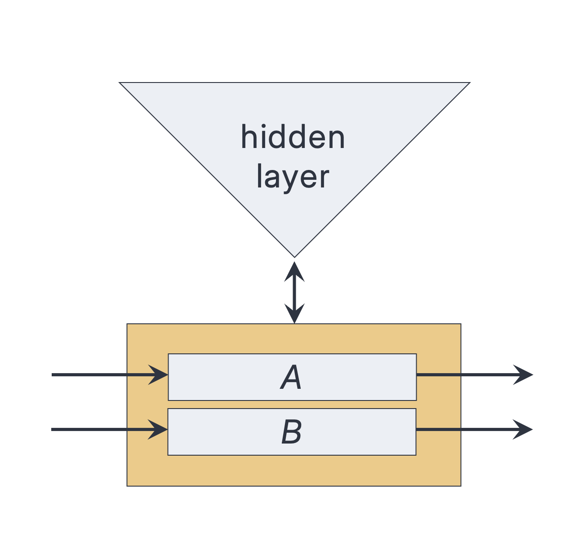
The two blocks may differ in dimensions, representing information from distinct domains. This asymmetric bidirectional setup emulates a pair of hetero-associative memories. The dynamics of this system are governed by the memory’s update rule. Depending on the choice of a particular recurrent update rule, the bidirectional memory may exhibit reactive or generative behavior. By comparison, a bidirectional memory composed of two hetero-associative networks is always reactive, functioning as a cleanup memory.
With the replacement update rule, bidirectional memory retrieval functions via pattern completion. A query with either (A, \varnothing) or (\varnothing,B) completes the association, returning (A,B). The patterns used in the memory query may be incomplete or noisy. The block coding approach generates a noise-free result within a single step, whereas the pairwise bundling method discussed above requires a round trip to yield a clean result.
An auto-associative memory operating on a bipartite set can store representations where one of the two blocks is empty. Mapping a set to an empty block actively confirms it is known, without associating it with other information. By comparison, regular memory retrieval maps unknown sets to an empty result if no matching pattern is found — this mechanism cannot confirm that the query term exists.
Generally, bipartite autoassociations relate information from two different domains, represented as sets with different dimensions and populations. In the special case where both partitions share the same dimension, the two blocks may represent data from a single domain.
A bipartite setup where each block stores a single SHR represents a simple directed graph. If both blocks contain SHR bundles, the memory represents a directed hypergraph. A labeled undirected hypergraph corresponds to a setup where one block contains a single SHR (the label) and the other block stores a bundle of SHRs (the hyperedge).
Within the same auto-associative topology, the memory’s update rule governs the dynamics of memory retrieval: clean-up and completion of hyperedges (reactive update rules), or graph traversal (generative update rules).
Partitioning auto-associative memory generally affects its capacity. The capacity of a bidirectional memory, storing pairs of tokens (A,B) with dimension N and population P, is given by
\texttt{capacity}(N, P) \approx \ln(2)\frac{N^2(N-1)}{P^2(P-1)}
This is derived as follows: the memory’s storage space can be parametrized as a prism with height 2N whose base is a right triangle with two equal sides of length 2N. This triangle describes the expanded latent space, formed by the pair-wise combinations of the elements in (A,B). We divide this triangle into three parts: the self-correlations within A, the self-correlations within B, and the cross-correlations between the elements of A and B.
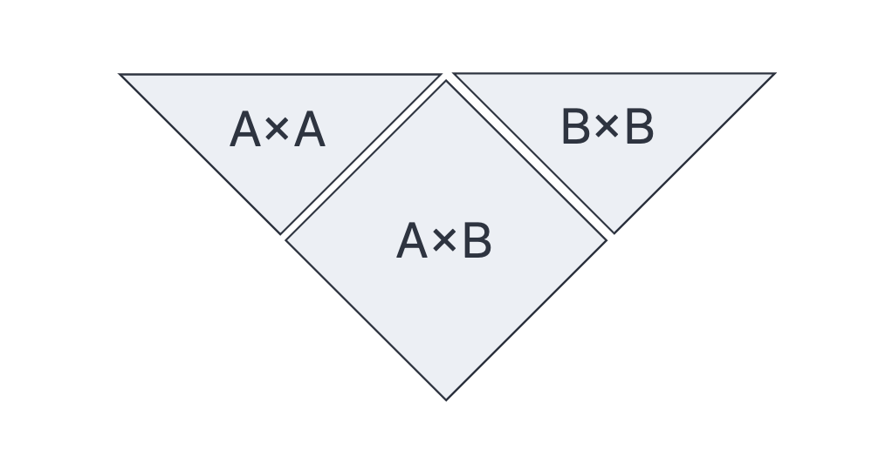
When storing a collection of random autoassociations into this memory, the cross-correlating division reaches its nominal capacity at memory density \rho^* = 0.5 first. The two self-correlating divisions fill up more slowly because the underlying autoassociations require slightly less storage. Therefore, we calculate the overall capacity solely on the basis of the cross-correlating components.
Partitioning auto-associative memory with total dimension 2N and population 2P into two equal-size blocks reduces its capacity by a factor
\frac{C_{\text{bam}}}{C_{\text{auto}}} = \frac{N(P-1/2)}{P(N-1/2)} \approx \frac{P-1/2}{P}
The approximation (P-1/2)/P is valid for very large dimensions N.
A relatively small bipartite memory with two blocks of dimension N = 1,000 and population P = 10 can store and accurately retrieve nominally 769,393 bidirectional associations.
Note on the pattern matching threshold for partitioned autoassociations: calculating the threshold based on an unpartitioned representation gives a mathematically conservative upper bound. Since partitioning slightly reduces overall capacity, this assumption safely protects against false-positive matches without threshold adjustments. Therefore, the fact that the memory algorithm is “blind” to partitioning does not impair its functionality.
Ordered triples are a ubiquitous data structure for knowledge representation and reasoning. A well-known application of ordered triples is Minsky’s frame model, which organizes knowledge in triple-layer objects composed of frames, slots, and fillers.
In the context of the Resource Description Framework (RDF) and semantic web technologies, semantic triples arrange information into subjects, predicates, and objects. For instance, a semantic triple might state “Italy is a country in Europe”, where “Italy” is the subject, “is a country in” is the predicate, and “Europe” is the object.
The corresponding terminology in machine learning is “head-relation-tail”.
Entity-attribute-value (EAV) models follow the same scheme, arranging data into a triple of components: the entity (the object of interest), the attribute (the property of the entity), and the value (the actual data for that attribute).
We represent ordered triples with tripartite sets. The three blocks may have different dimensions. A semantic triple, for instance, is encoded via the disjoint union of three sets (\textit{subject}, \textit{predicate}, \textit{object}). Here \textit{subject} and \textit{object} must be sets with equal dimensions, as the corresponding entities often flip roles. Depending on the implementation, the \textit{predicate} set may be encoded using a different dimension.
If we store a collection of ordered triples encoded as tripartite sets in auto-associative memory, the result is a directed graph. Every triple persisted in memory is unique because the memory always deduplicates redundant data. Note that it is possible to write triples with an empty block or two empty blocks into memory.
Querying a triplestore with partial data completes the pattern, removing additive noise as usual within a single query. Memory retrieval works in all three directions: if queried with any of the three blocks empty, the missing information is filled in based on previously stored information. This process may pull in information from multiple matching triples, returning a superposition of possible answers. Assuming a sufficiently low pattern matching threshold, memory retrieval also works if just one of the three blocks is non-empty.
Using the core memory retrieval algorithm completes the input pattern. But we can also impose one of the update rules of auto-associative memory for a modified behavior. For instance, using the complement update rule turns memory retrieval into a dataflow control structure.
Encapsulating a triplestore as a distinct component within a broader cognitive architecture requires three input and three corresponding output channels. These channels handle both training and inference simultaneously. Rather than relying on an external toggle to switch operating modes, the system achieves automatic online learning by processing complete incoming triples as training data and partial inputs as queries.
If the complement update rule is applied, complete inputs (whether novel or already known) always return an empty output. Partial inputs, on the other hand, generate partial outputs and simultaneously reverse the direction of the dataflow.
Standard relational databases and triplestores suffer from scaling latency. A topological memory triplestore bypasses this: it performs queries in constant time regardless of how many triples sit in memory. New data is stored on the fly and becomes available immediately, without preprocessing. Paired with the memory’s high capacity, these exact-match, zero-delay dynamics make this topological triplestore attractive for high-throughput technical applications.
Under the taxonomy of auto-associative memory setups, hyper-associative memory is defined by the storage of bundled sparse holographic representations (SHRs), modeling knowledge hypergraphs.
Hyperassociation
An autoassociation of bundled sparse holographic representations (SHRs).
A bundle of symbolic tokens, encoded as SHRs, is the equivalent of a hyperedge. The tokens represent the hypergraph’s vertices. A collection of such hyperedges forms a simple undirected hypergraph. We call this particular kind of hypergraph “simple” because it satisfies two conditions: it has no empty edges, and no edge is a subset of another edge (known as the Sperner property). Edges are non-empty because we cannot write an empty set into associative memory. And the Sperner property follows from the fact that storing subsets of known information into memory has no effect on the memory state.
The following brief example demonstrates the mechanics of working with hyperedges. First, we encode the symbolic tokens “king”, “man”, “queen”, “woman”, and “person” as random SHRs. Then we store the following bundles (which act as semantic fields) into an auto-associative memory:
> king man royalty -> king man royalty
> queen woman royalty -> queen woman royaltyThis builds two hyperedges in memory. A memory query using the difference update rule gives the union of the input and the output, with the matching elements removed:
> king
man royalty
> man royalty
kingThe following query matches “king” and “man”, leaving behind the retrieved token “royalty”, and the non-matching part “woman”.
> king man woman
royalty womanFeeding this output back into memory generates “queen” as the final result:
> royalty woman
queenGeneralizing from undirected hypergraphs, we can build an n-ary hypergraph by partitioning the overall representation into n disjoint blocks, each containing bundled tokens.
As a common special case, a directed hypergraph is realized with two partitions (C,D), where C is the head and D is the tail of the hypergraph.
We can add an extra block to the hyperedge representation to accommodate a unique edge label, encoded as an SHR. Such labels function as unique pointers to the data structure. This extends the object type from hypergraph to multi-hypergraph. It allows the representation of empty edges, edges that are subsets of other edges, nested hypergraphs, or repeated edges that share the same nodes but are distinguished by their unique labels. In the context of knowledge hypergraphs, the edge label usually corresponds to a predicate.
Storing hyperedges in memory creates a strong topological linkage between pairs of vertices occurring within the same hyperedge: the autoassociation of a bundle A \cup B (two vertices encoded as SHRs) self-correlates the elements within A and within B, and also cross-correlates A with B. Each vertex is usually cross-correlated to several other vertices, and every connection produces roughly the same number of links within the memory topology. When the memory retrieval algorithm encounters multiple such cross connections, it returns their superposition. This behavior is the basis for hypergraph traversal.
The pattern matching mechanism within hyper-associative memory is best demonstrated with a small hypergraph:
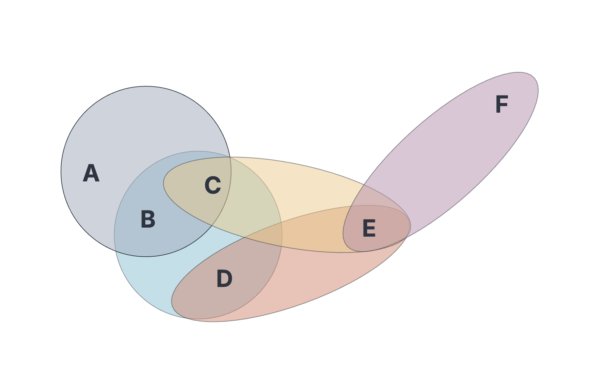
Vertices are encoded, as usual, via random SHRs with uniform population. Apart from spurious overlaps, these representations are mostly dissimilar.
Training the memory involves one write operation per edge:
> a b c -> a b c
> b c d -> b c d
> c e -> c e
> d e -> d e
> e f -> e fQuerying the memory with just one vertex gives the superposition of all directly connected vertices. With the default replacement update rule enabled, the query completes the pattern, and the result retains the input:
> a
a b c
> b
a b c d
> c
a b c d e
> d
b c d e
> e
c d e f
> f
e fIf we query with a bundle of vertices that occur within the same edge, the memory finds and combines all edges containing the input:
> a b
a b c
> b c
a b c d
> c e
c eHere the larger edge containing “a” and “b” wins over “f”:
> a b f
a b cThe memory retrieval behavior shown above is stable in the presence of spurious overlaps, crosstalk from unrelated memory contents, and subsampling of the input.
If we query with a combination of vertices that are not directly connected, the retrieval behavior is unstable, depending on representational overlaps and on the specific random subsample used as input. Memory retrieval chooses among possible matches, each with a certain probability that correlates with the number of matching elements. Each outcome aligns with certain aspects of the input’s connectivity.
The following examples show possible outcomes for a query with the union of “a” and “e”, ranked by output size. (The probabilities of the different outcomes depend on representation.) The largest match is the cluster around “e”:
> a e
c d e ffollowed by the edge that contains “a”:
> a e
a b cThis finds the common neighbor — an interesting outcome:
> a e
cIn some cases, no unique best match is found (a “tie” between equally likely results): memory retrieval returns an empty output.
> a e
Hyper-associative memory uses a vertex bundle to retrieve another bundle linked to all or some of the inputs. For ambiguous queries, stochastic subsampling selects one of several valid outcomes.
Walking a hypergraph vertex by vertex normally requires extracting a single item from a retrieved bundle using a separate item store, then feeding it into the next query.
Extracting a specific vertex at every step is unnecessary: we can instead use the entire output from the previous step to compute the next step. This process doesn’t just move to one neighbor; it captures the entire context. This mirrors how we can jump from a specific memory to a broad category instantly. The random walk fluidly transitions between entire groups of nodes based on their participation in overlapping hyperedges.
Simulations of random walks on larger graphs are discussed further below to illustrate these dynamics.
The ability to bundle sparse holographic representations would be of very limited use without “unbundling” — the mechanism to extract items from a bundle, which is the inverse of the bundling operation.
We represent a bundle as a flat union of sets, so its elements cannot be directly traced back to the distinct items from which the bundle was formed. Furthermore, due to spurious interference some elements may originate from multiple items, causing a small amount of data compression.
The prerequisite for unbundling SHRs is an item memory that stores all items involved in the bundle. The item memory must contain only individual SHRs, but no bundles of SHRs.
Querying the item memory with a bundle of non-overlapping SHRs with equal populations results in a pattern matching tie: memory retrieval returns an empty result. We apply stochastic subsampling to raise the probability of a unique match emerging during memory retrieval. For small bundles, one or two trials are normally sufficient to retrieve one SHR.
Once a bundled SHR is matched with the item store, we delete it from the bundle using the complement update rule and iterate the process. This iterative decomposition process extracts the components of a bundle one after another.
Iterative decomposition (unbundling)
Step-by-step extraction of individual tokens from a bundle, using stochastic subsampling to break representational symmetries and isolate unique matches.
This generates a random temporal sequence, assuming uniform populations of the items within the bundle. Each item has an approximately equal chance of being recalled first (spurious overlaps may introduce a small bias).
If the bundle to be decomposed consists of items with different populations, larger items are more likely to emerge as the best unique match. This allows us to manipulate the retrieval order, creating a priority-based decoupling mechanism by modulating the size of the items during bundling.
For instance, a last-in-first-out queue can be realized by scaling down older items every time a new item is added. This implements temporal sequencing through magnitude decay.
Another interesting possibility: if we subsample (or transcode) items with different populations that encode a ranking, iterative decomposition functions as a natural sorter: the most relevant items pop out of the bundle in the first few iterations of the recovery process.
Similarly, an attention mechanism might encode information that requires priority processing (for instance “food” or “danger”) with a higher-than-average set population.
We can experimentally measure the average number of iterations needed to extract one item from a bundle:
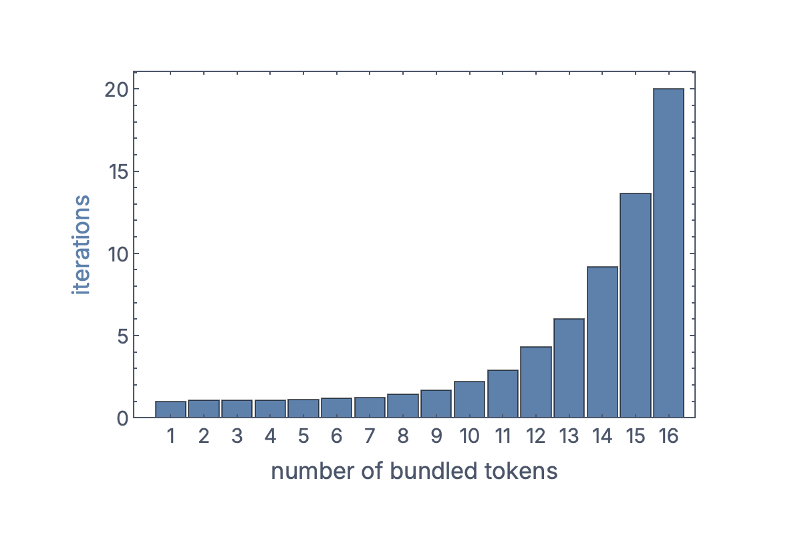
Extracting one item from a small bundle usually succeeds on the first try, and rarely a second try is needed. This works reliably for bundles composed of fewer than 10 items. For larger bundles, the number of attempts needed grows rapidly. The process becomes impractical for bundles larger than about 12 items. We observe this consistent behavior within a wider range of hyperparameter configurations.
The number of items practically extractable from a bundle coincides with George Miller’s magical number seven, plus or minus two (1956). Miller discovered that the average human working memory has a capacity of roughly 7 \pm 2 items. This correlation suggests that human working memory makes use of stochastic bundle decomposition.
The bundle decomposition mechanism bears a striking similarity to a quantum-mechanical measurement process. A quantum system exists in a superposition of multiple basic states until a measurement forces it to reduce to a single state (wavefunction collapse). Similarly, we can interpret a bundle of SHRs as a superposition of multiple symbols. Repeatedly measuring subsampled versions of this bundle against an item store eventually reduces it to one of its basic constituents. Spurious overlaps between items act like quantum interference, skewing the probability of which symbol emerges. This aspect of the topological memory model aligns with the concept of quantum cognition: it mimics the quantum-mechanical formalism of superposition, interference, and collapse — but without requiring a physical quantum substrate.
Binding is one of the three fundamental operations used to compose and manipulate high-dimensional distributed representations (the others being bundling and permutation). Binding is the glue that associates distinct pieces of information, such as a key and its value, or a role and its filler. This concept was introduced in 1990 by Paul Smolensky in the context of tensor product representations — arguably the common ancestor of hyperdimensional computing, vector-symbolic architectures, and the topological memory model discussed here.
To represent a structured object such as “redcircle” we use the binding operation “redcircle” = “red” \otimes “circle”, which creates a compact higher-level representation of the two items. But the same mechanism can create many other semantic structures, for example semantic triples and knowledge graphs.
Some fundamental properties of the binding operation:
The binding “redcircle” is dissimilar (orthogonal) to both “red” and “circle”. This is important because a “redcircle” should not be confused with just the color “red” or the shape “circle”. But while the output is dissimilar to each of the inputs, it preserves relative relationships. If “oval” is similar to “circle”, then “redcircle” should be similar to “redoval”. Binding also preserves the dimensionality of the underlying representations.
Binding is invertible: If we have the pair and know one of its elements, we can retrieve the other element.
Binding
An invertible set operation (A \otimes B) that links distinct items (like a key and value) into a set that is dissimilar to its constituents.
Another defining property of the binding operation is distributivity over bundling: A \otimes (B \cup C) \approx (A \otimes B) \cup (A \otimes C). This relation allows us to bundle multiple bound pairs into a single complex data structure, and to perform queries on the compound expression.
Binding shares algebraic properties with multiplication. But defining an operation that satisfies these properties and simultaneously preserves sparsity proved challenging. Hyperdimensional computing with dense representations, by comparison, does not have this problem.
To tackle the challenge of sparse binding, we remember that storing a set in topological memory binds its elements. The memory algorithm functions through pairwise binding, creating a web of links between all input elements. Consequently, inverse binding is achieved naturally through memory retrieval with partial inputs.
This mechanism is best illustrated in the common case A_1 \otimes A_2 = B, where two tokens are bound to a third. Storing the bundle A_1 \cup A_2 \cup B in auto-associative memory binds the three tokens to each other. Technically, writing A_1 \cup A_2 \cup B \to A_1 \cup A_2 \cup B into memory links all pairs of input elements to every element of the output, which is in this case identical to the input. This operation is fully symmetric between the involved tokens.
Memory retrieval inverts binding: Querying with A_1 \cup B extracts A_2, and a query with A_2 \cup B gives A_1. Of course we can also retrieve B through a query with A_1 \cup A_2: memory retrieval works in all three directions.
(Note that “raw” memory retrieval from auto-associative memory completes the input pattern. The query mechanism as shown here uses the complement update rule.)
In the context of topological memory, the distributivity property materializes as follows. Consider two bindings A_1 \otimes B_1 = C_1 and A_2 \otimes B_2 = C_2, both being stored in memory. We can think of this as keys A_i bound to values B_i. These key-value bindings can now be combined into one dynamic data structure C_1 \cup C_2, which is dissimilar to the original keys and their values. To extract the original values B_i from this compound data structure, we simply query the memory with A_i \cup (C_1 \cup C_2). And similarly, we can also extract a key from its value.
Here is a practical example. We bind two items “red” and “circle” (both encoded as SHRs) by creating a higher-level object “redcircle”, and write their union into auto-associative memory. (The pseudocode used here implies a union operation between adjacent tokens.)
> red circle redcircle -> red circle redcircle;Similarly for “blue” and “square”:
> blue square bluesquare -> blue square bluesquare;Forming a dynamic representation A containing both chunks:
> A := redcircle bluesquare;The set A, a bundle of two symbols, is a compressed representation of the original information which consisted of four symbols. To extract the underlying relations, we query the memory (using the complement update rule) with the union of A and any of the entities:
> A red
circle
> A square
blueThis mechanism accurately retrieves the original, noise-free keys and values within a single pass. By comparison, the corresponding operations in traditional hyperdimensional computing or vector-symbolic architectures only give approximate results which require further cleanup steps.
The same binding mechanism can be applied to numerous items at once, only limited by the system’s sparsity constraints: A_1 \otimes A_2 \otimes \dots \otimes A_f = B simultaneously binds f elements. And A_1 = B binds a single item.
Conventional vector-symbolic architectures treat binding as a strict dyadic (two-input) operator, requiring chaining for multiple objects. Topological memory executes n-ary binding natively in a single operation. Binding is fundamentally a memory-dependent operation. It is a common process to replace two (or more) items with their binding, which compresses information and maintains sparsity. In the context of perception, this mechanism is known as chunking: the grouping of inputs into cohesive perceptual units.
To chunk two perceptions “red” and “circle”, a memory query tests if this combination is already known. By now we have probably encountered many examples of red circles, so we can assume that the query returns the binding “redcircle”. But in case of a novel perception, for instance an orange circle, the corresponding memory query fails: a new random SHR representing the binding “orange circle” must be deployed. This way, higher-level representations are generated on the fly. This is a form of heteroencoding.
Depending on the context, binding can be linked to long-term memory or to a short-term associative memory where information decays quickly.
The ability to construct and deconstruct complex data structures through various combinations of bundling and binding is a prerequisite of symbolic reasoning. For instance, semantic frames are realized within auto-associative memory through a grid-shaped binding structure.
Biological networks do not appear to dynamically allocate and persist variable-length arrays. To be consistent with this constraint, we model sequences as temporal rather than spatial processes.
Within the topological memory framework, there are several ways to realize temporal sequences, either based on hetero-associative or on auto-associative structures. Common mechanisms are based on pointer chains, forming a skeleton sequence to which items are associated. This skeleton can be driven by two distinct mechanisms: memory-linked chains or permutation-linked chains.
In a memory-linked pointer chain, the sequence progression is stored in the associative memory. A memory query with a given pointer retrieves the next pointer in the sequence. The sequence naturally terminates when querying the memory with the final pointer gives an empty result.
Alternatively, a pointer chain can be formed through repeated permutations. Here, a single SHR represents the entry point to the sequence and serves as the first pointer. Accessing the n-th element of the sequence requires n-1 permutations of the initial address. With this mechanism, advancing the pointer to follow the sequence without extracting the item payload is a highly efficient operation that does not involve memory queries. This type of sequence terminates when a memory query to extract a pointer’s payload returns an empty result.
Sequence items (the payload) can be either bundled with the pointer, or separated via block coding, using a bipartite representation. In either implementation, separating an item from its pointer requires a memory query.
The following diagram shows a bipartite auto-associative memory where one block stores the items and the other block stores the pointers. An external feedback line routes the permuted pointer back to the memory’s input. Each feedback cycle extracts one item from the sequence.
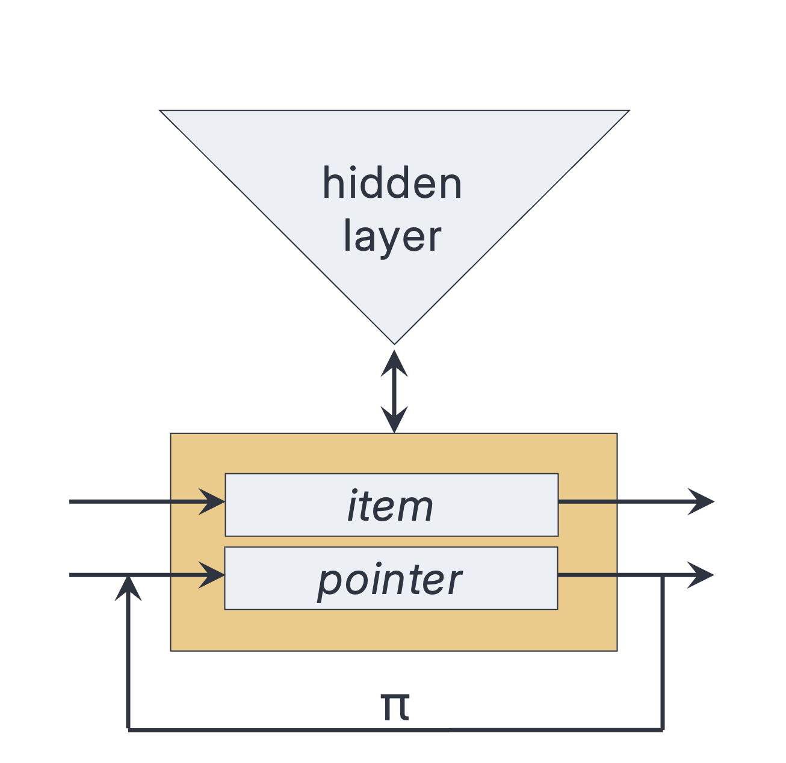
This auto-associative system automatically learns the associations between the items and the pointer chain when receiving a sequence of items. To trigger inference, we prime the sequence with the initial token while leaving the item block empty. A memory query completes the item block, generating noise-free representations for the item and the pointer.
The length of pointer chains, as the backbone of the sequence, is practically unlimited. The achievable sequence length depends on the lexicon size (the number of unique items): a larger lexicon distributes information across a greater number of memory locations, resulting in a higher capacity to store sequences. This mirrors how human memory can remember long texts consisting of hundreds of words, but struggles to remember a sequence of a hundred digits without chunking.
An alternative sequence memory based on a reservoir architecture and a hetero-associative readout mechanism is discussed further below.
Hetero-associative memory for discrete sets emerges from topologies with a combinatorially expanded hidden layer. This network architecture maps patterns from the input layer to a physically separate output layer. The information flow within this network topology is purely feed-forward.
Hetero-associative memory
A feed-forward memory topology with separate input and output layers.
The input layer and the output layer generally have different dimensions and hold differently encoded information, often from distinct domains.
We denote heteroassociations by A \to B, where A \subset U and B \subset V are small subsets of their respective universal sets U and V.
Storing a heteroassociation in memory requires both A and B to be specified. The presence of a secondary input for training (the “teaching signal”) distinguishes hetero-associative memories from the auto-associative architecture.
Memory retrieval takes an input pattern A and produces an output Y. The retrieval algorithm identifies the unique best match within the aggregate information stored in memory: the largest subset X \subseteq A in which all element pairs contribute to all elements within Y. This mechanism, functioning via partial pattern matching, resolves degraded or noisy versions of known patterns into a clean output.
For a successful match, X and Y must exceed the memory’s minimum pattern matching thresholds. Otherwise, an empty result is returned. This mechanism filters known information from potential false-positive matches based on the patterns’ overlap probabilities.
A tie occurs if there are multiple possible matches that meet the above criteria. When this occurs, the retrieval algorithm returns (by design) an empty result.
Irreducibility is a defining property of autoassociations: storing a set into memory cannot be replaced by a sequence of partial write operations. Heteroassociations, by contrast, can be built up incrementally. A hetero-associative memory query does not necessarily recall a relation A \to B exactly as it had been stored in memory. Instead, it retrieves the best match based on all contributing relations previously stored in memory. This means the same query may return different results as the memory evolves over time. By comparison, auto-associative memory maintains the integrity of stored items — a prerequisite for handling stable symbolic representations.
The following properties define the reducibility of heteroassociations:
Storing A \to B_1 and A \to B_2 is equivalent to storing A \to B_1 \cup B_2: one-to-many associations result in a superposition.
But storing A_1 \to B and A_2 \to B separately is different from storing A_1 \cup A_2 \to B, because the separate operations do not cross-correlate the elements of A_1 with A_2. This property allows the memory to accurately represent many-to-one associations.
Storing A_1 \cup A_2 \to B, A_2 \cup A_3 \to B, and A_1 \cup A_3 \to B is the same as storing A_1 \cup A_2 \cup A_3 \to B, because these three overlapping pairs collectively cover all possible 2-subsets (cross-correlations) of the complete union. Similar properties hold if the left-hand side of the association is decomposed into four or more subsets.
Subset absorption is a property that hetero-associative memory shares with auto-associative memory:
For a subset A_1 \subseteq A, storing A_1 \to B and A \to B is equivalent to storing A \to B.
Similarly, for a subset B_1 \subseteq B, storing A \to B_1 and A \to B is equivalent to storing A \to B.
A hetero-associative memory system configured for supervised learning has two fundamental modes: training and inference. It stores an association A \to B into memory if it receives non-empty signals A and B (training). If B is an empty set, the system retrieves and returns the pattern associated with the input A (inference).
Storing either A \to \varnothing or \varnothing \to B does not alter the memory’s state.
The system learns new information in one shot — there is no need to repeatedly cycle through a training dataset.
A useful variant of this scheme combines training and inference: here, the system always stores A \to B into memory and subsequently queries the memory with A. Note that this does not necessarily return B, because a combination of previously stored relations may contribute to the retrieved pattern. This model continuously learns from every incoming signal. Combined with a stochastic decay mechanism, the memory refreshes frequent signals while fading out rarely occurring ones.
Querying a hetero-associative memory system with an unknown pattern A returns an empty result. This property may be used to modify the system’s learning dynamics so that it only stores new information if a prior query returns an empty result. Here the boundary between inference and learning is fluid: the system continuously evaluates its internal model against reality, dynamically switching to a learning state whenever it detects a knowledge gap.
Predictive hetero-associative learning is the temporal equivalent of supervised learning, which instead processes simultaneous spatial associations.
In a predictive associative memory, cause and effect are separated by one execution cycle. At every clock tick t, the memory stores the association A_{t-1} \to B_t and retrieves a prediction B_{t+1} by querying the memory with the current input A_t.
A variant of this model only learns if the prediction was incorrect, as defined by a common distance or similarity metric. This mechanism is an analogue to predictive processing (or predictive coding) in the brain.
Implemented as a self-contained system component, a hetero-associative predictor simply carries its input A_t over to the following cycle.
In the topological memory framework, the transition from continuous perception data to discrete symbolic tokens uses a dedicated bridging mechanism: the heteroencoder. A heteroencoder is an unsupervised learning process that translates overlapping perceptual data (SDRs) into stable symbolic tokens (SHRs). Rather than extracting continuous hidden features from an input, a heteroencoder acts as a discrete classifier. It operates dynamically on the boundary between the known and the unknown.
When a heteroencoder receives an input A, it attempts to retrieve an output value B from memory. The query fails if A is a novel pattern. In this case, the encoder generates a new random SHR B on the fly and stores the association A \to B in memory. This autonomous learning mechanism guarantees that any input, as long as it is above a certain size, returns an SHR.
Heteroencoding
An unsupervised learning process that maps sets (SDRs or SHRs) to stable symbolic tokens (SHRs) on the fly.
Heteroencoding is the bridge from perceptual information (SDRs) to symbols, represented as SHRs. Similar SDRs, for example, encodings of nearby color hues, are intrinsically mapped to the same SHR, subject to the memory’s pattern matching threshold. This mechanism functions as an unsupervised classifier or clustering algorithm for sets.
Traditional neurosymbolic architectures require complex pipelines to translate continuous dense embeddings into discrete tokens. The heteroencoder does this using only sparse representations. This natively grounds symbols to physical reality.
Apart from mapping SDRs to SHRs, heteroencoding can be used to transcode symbols between spaces with different dimensions (N) or populations (P). This enables the transfer of SHRs between circuits that operate under distinct hyperparameter constraints, preserving their semantic meaning while converting their mathematical footprint.
Applied to a partitioned set where SHRs are separated into non-overlapping blocks, heteroencoding can consolidate such arrays into new, more compact symbolic representations.
Intelligent systems, whether natural or synthetic, emerge not from monolithic scaling, but from the integration of discrete functional components. Even complex cognitive functions like episodic or working memory may arise from the interaction of just a few associative memory instances. We model such architectures by assembling specialized units, each performing a specific associative function.
A topological memory unit may consist of thousands of neurons, forming millions of connections within their vast hidden layer. But rather than individually modeling these neurons, we encapsulate their high-level aggregate function: the storage and associative retrieval of population codes. This abstracts away the messy details of individual neural interactions as well as non-essential details of their connectome, leaving us with an idealized topological blueprint. We work with a digital approximation that captures the core algorithms of intelligence and allows cognitive computation at scale.
Different types of memory components can be created on the basis of the core topological memory algorithm. There are a variety of auto-associative memory types, with either reactive or generative behavior (depending on their recurrent update mechanism), storing individual patterns or symbols, or composite data such as hypergraphs. Hetero-associative memories differ in how they acquire new information: via supervised learning, predictive coding, or unsupervised heteroencoding. Memory units can be configured for storing perceptual data (SDRs) or symbolic information (SHRs), or for translating information between these domains.
Besides memory components, there are various signal flow components that do not embed an associative memory. These control the flow of neural codes through delays, limit throughput, stochastically decimate neural populations, or integrate data over time. In particular, performing a majority vote among competing representations is a prominent function not associated with learning.
Information flows between system components via pathways: wide connections that transport entire population codes in parallel. Each lane within a pathway represents a single element within a hyperdimensional space — meaning a single pathway may consist of thousands of parallel, one-way lanes. Overall traffic on a pathway is consistently low at all times: according to our principle of sparse coding, only one percent or less of the capacity is used.
Assembling these distinct components visually and functionally resembles electronics — though instead of routing single bits or scalar currents, these systems route hyperdimensional sparse population codes. This analogy with electronic circuits should not come by surprise, as neural systems ultimately communicate via electrical pulses. For this reason — and to explicitly avoid confusion with conventional neural nets or spiking neural networks (SNNs) — we term our topological memory networks circuits.
Circuits
Functional modules composed of topological memory components and components that control signal flow, connected by pathways which transport population codes as discrete pulses.
Designing special-purpose, functional modules is a stepping stone on the path towards creating intelligent systems. Taking the biological blueprint as a guide, we can design building blocks that handle specific cognitive tasks. These include self-contained models of working memory, episodic memory, pattern separation and completion, sequence learning and generation, and hierarchical temporal processing.
Following this approach, known as “synthetic neuroanatomy”, we integrate functional modules into system-level architectures — creating intelligence that may simulate human cognition, or solve non-human, technical challenges.
The execution within topological memory circuits is driven by the flow of data rather than a sequence of control instructions. There is no instruction set — a radical departure from von Neumann architectures.
Here, the program is coded as a dataflow graph where the nodes (the circuit components) represent independent actors, and the directed edges (the pathways) represent the flow of data between those actors. The framework allows entire subgraphs to be logically encapsulated as nodes without incurring runtime overhead. To facilitate the design of nested and hierarchical architectures, this encapsulation is best applied to cohesive subnets that expose only a few, clearly defined inputs and outputs.
Consistent with our middle-up approach to cognitive computation, these dataflow graphs are in the realm of macro-cognitive computing architectures. They model the computational principles of intelligent systems (recurrence, sparsity, distributed representations) using high-level software abstractions. The actors within dataflow graphs capture the collective simultaneous behavior of thousands of cells, rather than simulating individual neurons. We directly prototype high-level cognitive functions via purposely-designed, explainable circuits which are inspired by biological blueprints.
The data payload passed by the edges of the dataflow graph consists of discrete sets. Typically, these are either sparse distributed representations (SDRs representing perceptual data) or sparse holographic representations (SHRs representing symbols and data structures). The system also supports external input in the form of dense sets and provides the necessary sparsification functions (kWTA or sparse hashing).
Because memory storage and retrieval are discrete, indivisible operations, our model relies on a structured, discrete abstraction of time. Although memory components are typically activity-driven, the recurrent loops and generative components depend on predictable clock ticks or execution cycles to manage feedback. Time is a scheduled rather than a physical parameter in this computational framework.
This choice of a synchronous dataflow model over an asynchronous spiking model is not mandatory. Although it deviates from biological plausibility, we chose it for the ease of software and hardware implementations. Future versions of topological memory models may well adopt purely event-driven, or hybrid paradigms.
Synchronous dataflow models typically implement edges as first-in, first-out (FIFO) queues: an upstream node pushes its output token to the tail of the queue, and the downstream node consumes the token from the head of the queue. But for the purpose of our circuits, a simple two-phase clocking mechanism combined with a separation of input and output buffers is sufficient.
Compute cycles are governed by two-phase clocking: a tick-tock mechanism alternates between a read phase and a compute/write phase within each cycle. This ensures that no computation overwrites data mid-transit.
The first global signal triggers data transfer. Every node copies the stable output state of its upstream neighbors into its local input buffer. In cases where pathways fork, the upstream output is broadcast, duplicating the data into multiple downstream input buffers. Once this transfer is complete, the upstream output buffers are freed.
A second global signal triggers the execution. Operating in parallel, every node processes the contents of its input buffer and updates its output buffer with the result of its computation.
Most components discussed here trigger a computation only when their input token meets a threshold (generative auto-associative memories being the notable exception). In the absence of this input, such activity-driven components remain idle, expending almost no computational power. This is a feature shared with typical neuromorphic systems. Energy efficiency is also driven by the sparsity of computation: topological memory components activate only a small fraction of their vast internal circuitry when storing or retrieving data.
Recurrent architectures, once activated by an external input, can sustain output generation over multiple cycles without further inputs. Depending on the characteristics of the processed data, generated temporal sequences may die out, converge into repeating patterns, or continue running without repetition due to stochastic subsampling occurring in every cycle. At every cycle, external input may influence or reset generation.
The nodes within a dataflow graph generally maintain a dynamic state between execution cycles. For instance, a node may integrate pulses over time, acting like an electric capacitor. Similarly, auto-associative memory components maintain a dynamic state by blending external input with internal recurrent feedback. Beyond their dynamic state, memory components obviously persist memory traces within their topology.
In essence, topological memory circuits operate as fully stateful, clock-driven machines that process streams of perceptual and symbolic information.
We visualize topological memory circuits as schematics, similar to the standard circuit diagrams used in electronics. Specific symbols indicate the different component types, and arrows represent the connections between the elements. Dataflow is always directed and governed by the two-phase clocking dynamics discussed above.
Once the library of components and their parameterizations is standardized, system design ultimately reduces to editing human-readable dataflow specifications, such as the JSON schema included in this software framework. Alternatively, visual drawing tools may be used to wire together and run prototype circuits. This format is also conducive to generative algorithms that scan the space of possible circuits in search of intelligent behaviors.
A necessary step towards this vision of low-code AGI development is the standardization of circuit components and data transport mechanisms. The following is a high-level overview of this framework. A detailed documentation of the programming interface is available at this project’s companion repository.
In circuit schematics, we depict topological associative memory units as square symbols:
Signal flow components — any node that does not encapsulate a memory — are shown as circles:
Pathways, drawn as one-directional arrows, connect the circuit components. At the tick phase of each two-phase execution cycle, data propagates down the pathways to the receiving components where it is processed (the tock phase). Therefore, a circuit component delays the signal flow by one cycle.
Whereas circuit components generally maintain a state between evaluation cycles, pathways are strictly stateless conduits. They do not remember what signal flowed through them in the previous cycle. (Even the temporal gating mechanism is based on an external clock, not the data payload.)
We can modify pathways to transform data: apply a rate limit, a population threshold, a temporal gate to support multiplexing, or a permutation. In circuit diagrams, such transformations are indicated via edge labels:
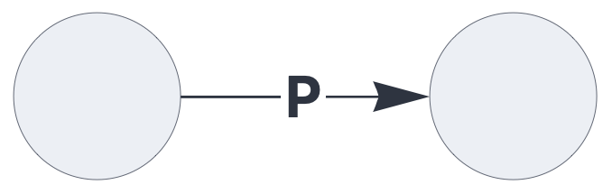
In this computational framework, pathways normally transport pure sets (population codes), but can be extended to carry multisets. This is by no means a departure from our fundamental premise of representing cognitive information as sets: Multisets, as an analog data model, are formed naturally via temporal or spatial integration of population codes and resolve to digital sets through kWTA algorithms.
Allowing downstream components to dynamically suppress specific patterns or mediate competing signals, multiset pathways may also convey inhibitory signals. These are represented as the negative-valued counterparts of regular, excitatory set elements.
Here is an example of a multiset that includes both excitatory and inhibitory elements:
{-732, -641, -284, -86, 5, 5, 225, 235, 307, 307, 610}As excitatory and inhibitory elements cancel out, a multiset never contains a positive element and its negative counterpart at the same time.

Pathways do not alter the dimensionality of the transported data. In the dataflow specification, this condition is enforced by assigning hyperparameters (dimension N together with the reference population P) not to the circuit components but to the pathways.
Circuit components can bundle separate pathways with non-overlapping information. This realizes the disjoint union of sets, known as block coding. For instance, an auto-associative memory component may handle a triple of incoming and a triple of outgoing pathways, performing memory storage and retrieval on a single set formed by concatenating the triples.
When multiple pathways converge at a component’s input, their signals are aggregated into a multiset before processing. In this computational framework, the pathway merging mechanism supports expressive control flow management via logical gating applied to the connections. A pathway may act as a mandatory prerequisite (blocking all input if empty), an absolute veto (clearing all signals if active), a priority override, or a fallback. With this design, any stateless routing functionality is handled by the circuit’s networking layer (white matter), while core associative memory functions — including adaptive semantic routing — are encapsulated in memory components (gray matter).
Input components represent the gateway for external data to enter a circuit. There can be multiple input components, each representing one block of data with distinct hyperparameters. The software framework supports SDR/SHR encoders as well as preprocessing functions to be plugged into input components.
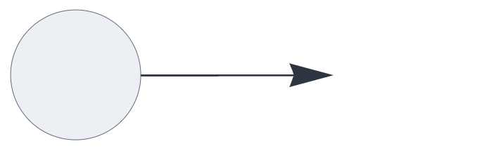
Output components form the circuit’s outbound gateway. Each output line corresponds to one block of data. Postprocessing and decoding functions can be plugged into individual output components.
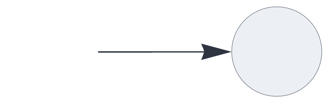
Unlike any other component types, inputs and outputs do not delay the flow of data.
A circuit defines a stateful function f of m input blocks that returns n output blocks.
f: (A_1, \ldots, A_m) \to (B_1, \ldots, B_n)
Each function call corresponds to a circuit evaluation cycle in which signals propagate downstream from one component to the next. Encoding, decoding, preprocessing and postprocessing functionality does not consume extra processing cycles. Note that the m input blocks may be empty sets, or external data encoded into empty sets: in this case, the circuit may still generate non-empty outputs through processing internal feedback.
Each individual circuit component corresponds to a function f as defined above. Consequently, we can express an entire circuit as a logical component and use it as a modular building block in nested and recursive architectures.
We can set up an embedded circuit to operate at a different speed from its enclosing circuit. For instance, a high-frequency perception processor may run at a higher clock speed than a symbolic module at the top of the cognitive hierarchy. The software framework supports such multi-frequency configurations via temporal gating and multiplexing options.
Delay components affect the signal flow in different ways. Apart from delaying signals by one execution cycle, delay components may apply stochastic subsampling through proportional decimation and rate limiting. This functionality is analogous to the role of resistors and constant-current diodes in electronic circuits. In addition, delay components may be configured to temporally integrate signals up to a maximum population — the direct equivalent of an electronic capacitor.
Block coding, multisets and inhibitory signals are handled transparently by delay components.
In this framework, the simplest recurrent network consists of a delay component with an external feedback line:
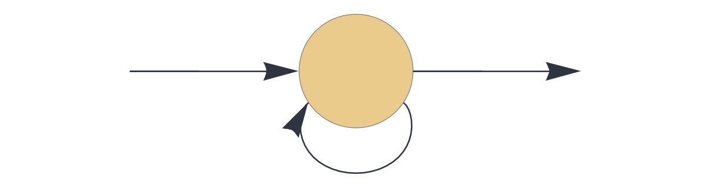
Here the incoming signal is bundled with the delayed feedback. This system requires stochastic subsampling at every step to prevent runaway signal populations.
If this feedback system stops receiving inputs, it continues to emit the last non-zero signal. A similar “sample-and-hold” function is encapsulated in the latch component, which repeats the last signal for a number of cycles while receiving sub-threshold inputs.
A dedicated k-winners-take-all (kWTA) component integrates incoming signals, bounding time (a sliding window of execution cycles), space (a population capacity), or a combination of both. At each cycle, the top-k elements of the multiset state are calculated and emitted: the kWTA circuit component effectively functions as a high-pass filter.
Complementing stochastic subsampling as a model for “leaky” pathways or the lossy memory components, we model additive noise through a circuit component that emits a random pattern at every cycle. Like the input component, the random noise component has no incoming pathway.
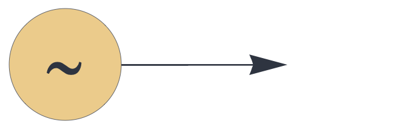
Auto-associative circuit components incorporate a topological memory instance with a shared input and output layer and an internal feedback loop. Inputs and outputs have the same overall dimensions and can be divided into non-overlapping partitions (block coding). As purely “digital” actors, memory components operate on proper sets, resolving multiset and inhibitory inputs and concatenating partitioned inputs before executing the core memory algorithm.
There is no external switch between training and inference modes. Auto-associative memory learns new information on the fly, provided it falls into a configurable population range. Memory retrieval can be modulated through proportional stochastic decimation and a configurable pattern matching threshold. Optional rate limits, capping the signal size received per cycle, protect the memory algorithm from excessive combinatorial activation.
The behavior of an auto-associative circuit component fundamentally depends on its internal update mechanism. Here is an overview of the six quintessential types of autoassociations, which use elementary set operations to update their input/output layer with the pattern retrieved from memory. These form the basis for purpose-built memory components with customized update and learning dynamics.
Hetero-associative circuit components can be categorized according to their learning dynamics. Supervised learning is realized either spatially by providing the teaching signal simultaneously with the context signal, or temporally through predictive learning.
The context signal can be partitioned into blocks and carry multiset patterns including inhibitory elements. Memory components systematically resolve such inputs to proper sets.
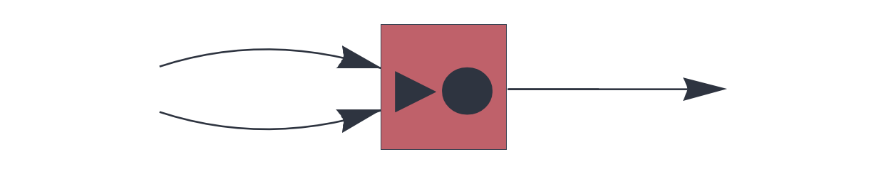
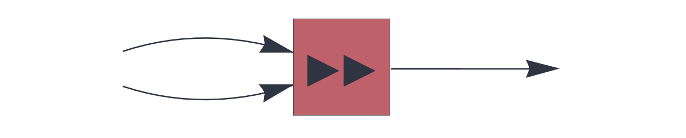
Unsupervised hetero-associative learning requires no teaching signal. Instead, it generates and learns a random pattern representing each cluster of similar inputs.
As a defining property of cognitive architectures, recurrence is characterized by cyclic connections in the circuit graph, integrating data across synchronized clock cycles through feedback loops. Any such feedback system requires a sparsity-controlling mechanism to prevent runaway feedback. This computational framework supports multiple methods to achieve this: stochastic rate limiting (located in the data transport logic or within delay nodes), k-winners-take-all ranking (applied in spatial or temporal data accumulation), signal flow logic, and specific update rules that govern the auto-associative memory components.
The following circuit schematic shows the most basic recurrent circuit, consisting of a single delay node with direct feedback from its output to its input state. This mechanism merges the two incoming pathways into a multiset and subsequently applies stochastic rate limiting to the merged data.
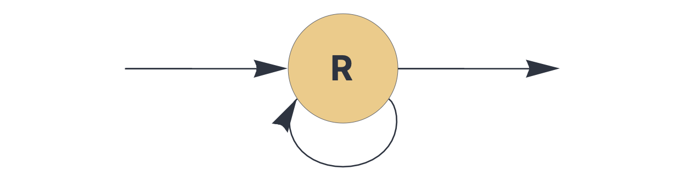
When processing a data stream, the state of this system is dominated by the most recent inputs, while older signals gradually fade.
We can instead limit the feedback signal prior to merging it with the incoming data stream. This results in a subtly different behavior compared with the above circuit: the incoming signal is fully manifest in the component’s state for one cycle before it fades through the feedback decimation.
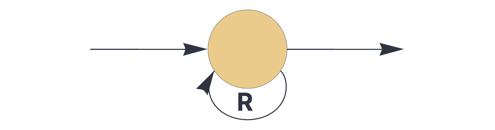
Applying a permutation to the feedback encodes each signal’s temporal position within the input sequence.
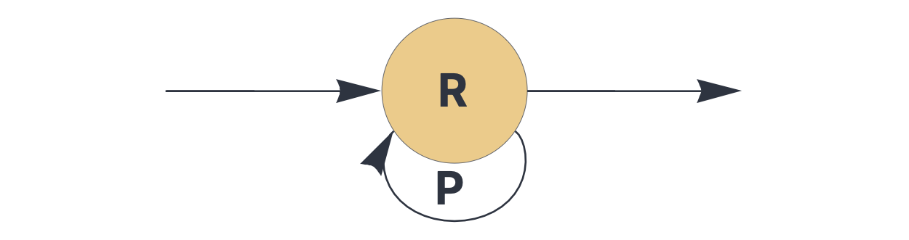
Here is a recurrent circuit formed by two delay components. The feedback signal is permuted and delayed by one execution cycle.
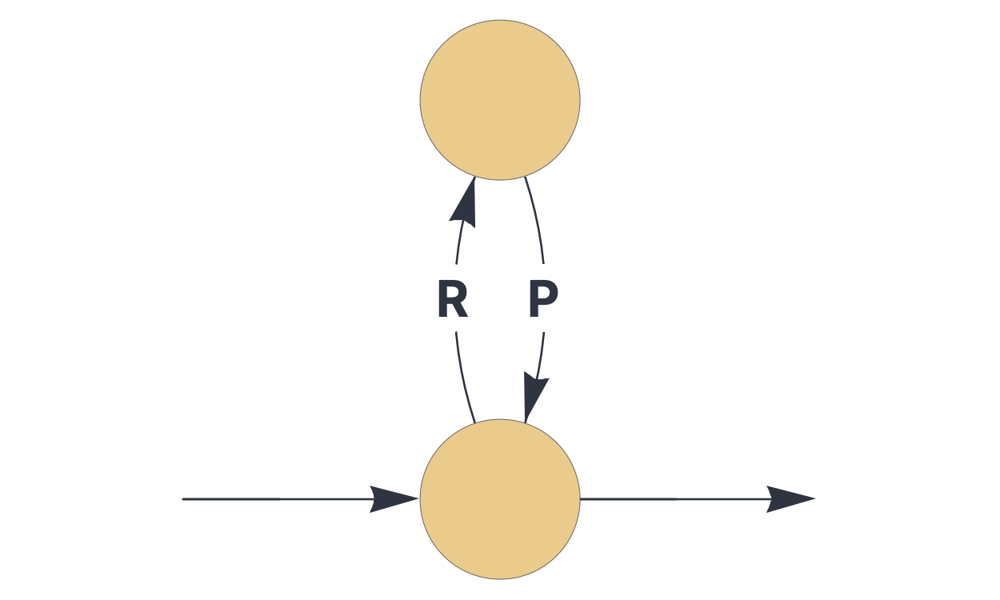
Modeling dynamic circuits that hold data without leaking information at each cycle requires a sparsity-controlling mechanism beyond the stochastic subsampling discussed above. Priority gating provides such an alternative: when merging a forward signal with a feedback line, feedback is suppressed unless the forward signal is empty — an equivalent to biological feedforward inhibition. This model is shown in the following circuit diagram.
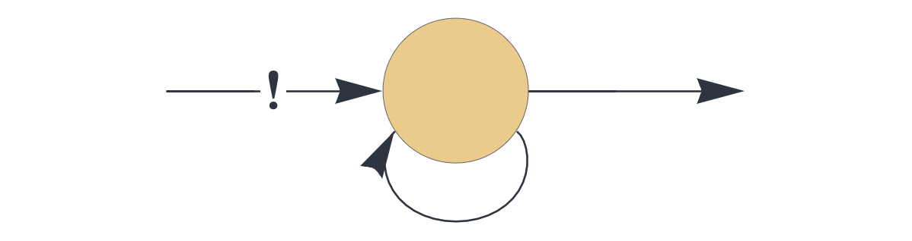
This circuit samples the input and holds it without loss of information until new input replaces the system’s state.
The following diagram shows a reverberatory circuit where the feedback is delayed by one cycle. In this system, signals bounce between two delay nodes, toggling two states in the absence of new input. Again, the incoming pathway takes priority over the feedback line.
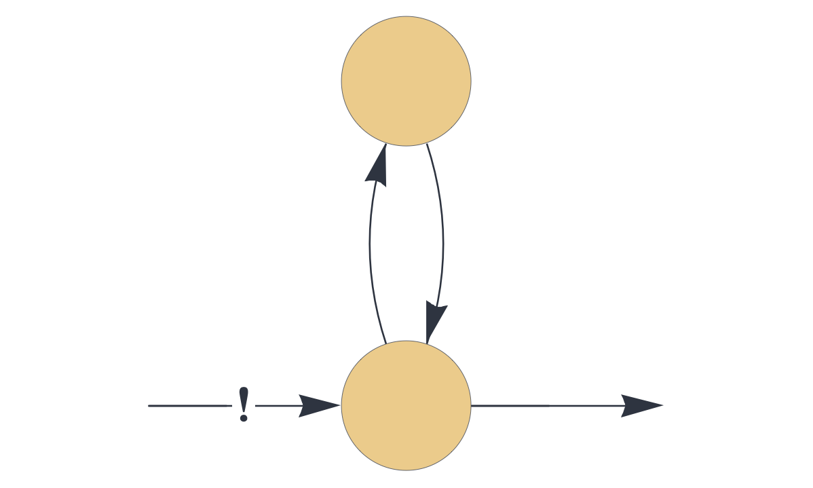
A reverberatory circuit feeding into an item memory decomposes bundles into their constituents. An inhibitory feedback line removes the extracted items, one after another, from the recurrent subnet. The circuit outputs noise-free tokens in random order, interspersed with empty representations reflecting cycles where memory retrieval failed due to pattern matching ties.
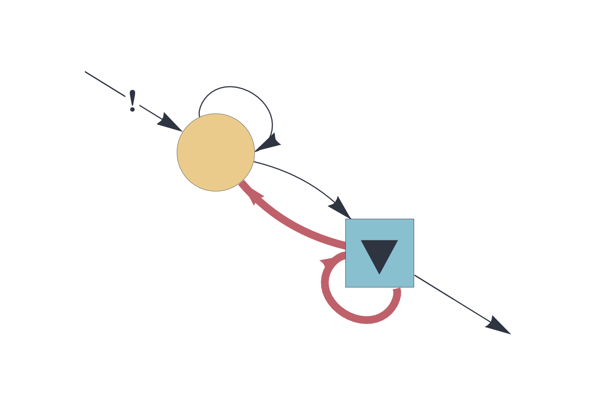
Temporal memory emerges from the combination of recurrent architectures and topological associative memory. A system that learns sequences on the fly while predicting the next token can be implemented via a reservoir architecture. Here, the reservoir is a recurrent network with permuted feedback, building up a state that represents the recent inputs as an ordered sequence. The most recent input pattern dominates the state, while older inputs fade due to recursive stochastic subsampling. A hetero-associative predictor node reads out the reservoir’s state at every cycle and learns its association with the subsequent input.
The following figure shows a basic temporal sequence memory with a single-delay reservoir:
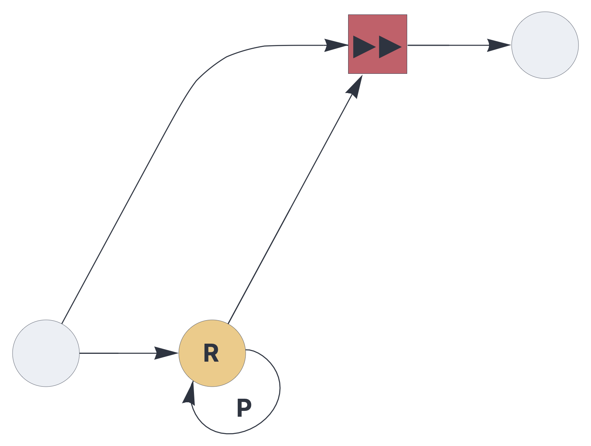
Taking this basic design as a starting point, we now build a more advanced reservoir architecture, shown in the following circuit diagram.
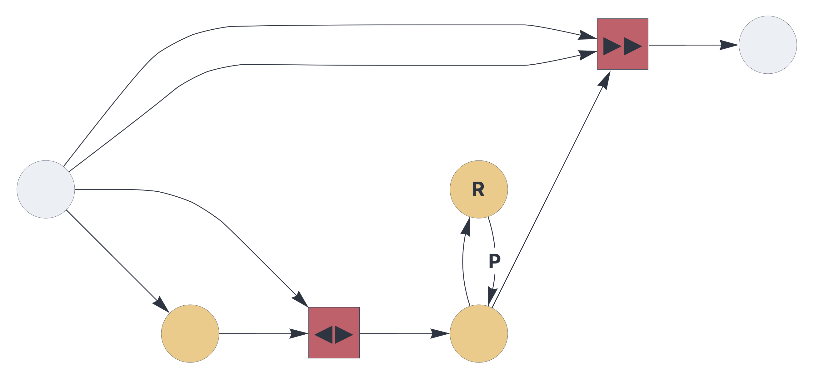
Here, the reservoir at the center of the circuit is formed by a delayed feedback loop. This increases the reservoir’s temporal depth, allowing it to hold information over a longer time window.
Instead of filling the reservoir with raw incoming tokens, this circuit transcribes each incoming token pair into a bigram. The bigram encoding mechanism shown here uses a heteroencoder memory component that generates a new sparse holographic representation (SHR) for every unique token pair. Bigram encoding squares the representational space, vastly increasing the circuit’s learning capacity. For example, a data stream consisting of digits 0 to 9 (a 10-token lexicon) expands to 100 different bigram tokens, activating a much larger section of the topological memory’s latent space.
In this architecture, the readout node associates predictions not only with the reservoir’s state, but also directly with the current input. This shortcut improves the reaction time of the learning mechanism.
The circuit as shown above is capable of learning long sequences, such as random strings consisting of thousands of digits.
Hetero-associative topological memory maps perceptual data, encoded as sparse distributed representations (SDRs), directly to sparse holographic representations (SHRs) that encode symbolic categories, or classifications.
Unlike conventional neural networks, which achieve generalization by compressing data through a continuous dimensional bottleneck during training, this classifier learns in a purely additive fashion. It does not extract or compress generalized features from the training data. Instead, generalization takes place during memory retrieval, where the nearest-neighbor search maps a continuum of noisy data to the correct symbolic category.
This capability is easily demonstrated using the canonical challenge of classifying handwritten digits.
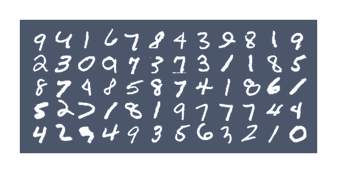
The dataset (LeCun 1998) consists of 70,000 handwritten digits, rasterized as 28\times28 pixel grayscale images.
We map the flattened image data, after applying a 1-pixel-radius Gaussian blur, to SDRs via a random projection onto a hyperdimensional space, followed by a kWTA selection of the top-ranked elements. The random projection is achieved by multiplication with a sparse binary 784 \times N matrix with sparsity \sqrt{N}. The SDR dimension N must be large enough to capture the dataset’s features. Empirically, dimensions between 10,000 and 16,000 and a population sparsity of 1% work well.
The categories (digits 0 to 9) are encoded as non-overlapping SHRs with populations P = 15.
The following circuit diagram shows the hetero-associative memory component receiving two inputs: the SDR-encoded image data and the SHR-encoded categories. The associative memory learns when both inputs are non-empty. If the category input is empty, the component retrieves a value from memory.
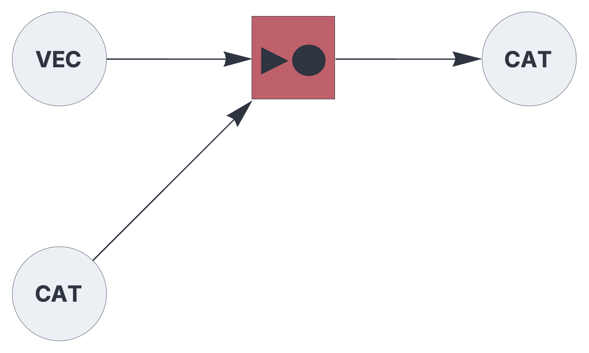
We train this classifier with 60,000 images in a single pass. Testing with 10,000 images results in an accuracy score of about 96%, out of the box, without any optimization. This demonstrates that topological associative memory is perfectly capable of handling machine learning classification tasks.
Test scores can be improved by using an adaptive image encoder that suppresses the “center blob” that dominates the images in this dataset.
Our memory does not store raw noisy perceptual data. Instead, it transforms perceptions into higher-level stable abstractions, encoded as sparse holographic representations, or symbols. For instance, various perceptions of the color red, differing in hue, brightness, or saturation, are clustered into a symbolic category “red”. Similarly, we can encode an object’s shape and relative size and position as stable symbols.
The binding mechanism, based on storing SHR bundles in auto-associative memory, links features to objects and objects to an entire scene graph. The memory component in the circuit shown below uses the replacement update rule, which completes patterns based on incomplete information — a simple cognitive model of seeing what we know, not what we see.
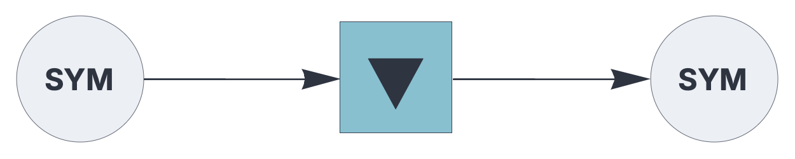
We demonstrate this mechanism using the following picture as an example.
The features in this image — colors, sizes, relative positions — are encoded as symbolic SHRs. Storing the entire scene in memory involves binding the features to three objects (encoded as latent symbols O1, O2, O3), and binding these objects to a latent symbol that points to the entire scene:
> O1 large red top right;
> O2 medium blue bottom left;
> O3 small yellow bottom right;
> Scene O1 O2 O3;Now we can query the scene graph top down:
> Scene
O1, O2, O3, Scene
> O1
O1, large, red, top, right, O2, O3, SceneNote that the query with O1 returns every directly connected
hypergraph node, not only its associated features as one might expect.
Queries based on specific features:
> red
O1, large, red, top, right
> small
right, bottom, O3, small, yellow
> bottom
right, O2, medium, blue, bottom, left, O3, small, yellow
> bottom right
right, bottom, O3, small, yellowWhen queried with “bottom”, the system pulls all information from the two objects at the bottom of the scene. A more specific query with the bundle “bottom” \cup “right” narrows the result to object O3.
These examples show how memory queries, simulating partial perceptions, complete the picture. Using an auto-associative memory with the residual instead of the replacement update rule would turn the system into a novelty filter: the queries shown above would return empty results, but novel query patterns would pass through.
In the context of AI and semantics, a symbol is a discrete unit (such as a word or token) that represents a high-level human-readable object or concept. Symbols are the building blocks for knowledge representation and reasoning. A symbol acts as a pointer to something else: real-world entities (such as “apple”), abstract concepts (“wisdom”), relationships (“is part of”), logical operations (if-then), linguistic phrases or grammatical structures (verb-phrase), or mathematical symbols and expressions (x + 1).
In models based on sparse hyperdimensional representations, different symbols are encoded as sparse holographic representations (SHRs), regardless of their underlying semantic similarity or differences. Like symbols, SHRs serve as abstract and unique identifiers, pointing to discrete items.
Contrary to common belief, semantically related symbols, such as “cat” and “dog”, are not represented by sparse representations where the overlapping elements denote shared features, such as “fur” and “ears”. The number of features shared between cats and dogs far exceeds the typical size of a sparse representation. For symbols to function as pointers, their representations must be nearly orthogonal: this ensures that subsampled versions point to the same thing, rather than a subset of its features. The same principle also enables the decomposition of bundles into distinct items.
Semantic similarity between symbols emerges from shared associations within knowledge graphs, either through direct or spreading (cascading) activation.
To explore this concept, we use a dataset of word associations that was specifically developed for topological memory prototyping.
The dataset consists of roughly 1.9 million word associations, representing an English speaker’s mental lexicon. In this semantic network, every word or concept is a node, and the associations between them are the links. Here is a data sample, showing all nodes linked to “freedom”:
freedom -> agency assembly autonomy capability choice consent emancipation
equality escape exemption expression freewill impunity independence
information liberation liberty license movement nonconformity openness
opportunity press privilege release religion rights self-determination
self-government self-rule sovereignty speech thought unfettered unhampered
unrestricted volitionThis dataset includes paradigmatic as well as syntagmatic associations. Paradigmatic associations (for example “freedom” \to “liberty”) are words that belong to the same grammatical class and often share semantic features. These are driven by mental categorization and synonymy. Syntagmatic associations (for example “freedom” \to “speech”) are words that frequently appear next to each other in a sequence or sentence. Additionally, this dataset reflects schematic associations which are linked to the organization of knowledge.
Cognitive information is normally represented via triples, not direct symbol-to-symbol associations. In fact, the dataset represents triples in disguise, omitting predicate information.
We can store symbolic associations directly in a hetero-associative memory after encoding each word as a sparse holographic representation (SHR). This schematic shows the corresponding circuit:
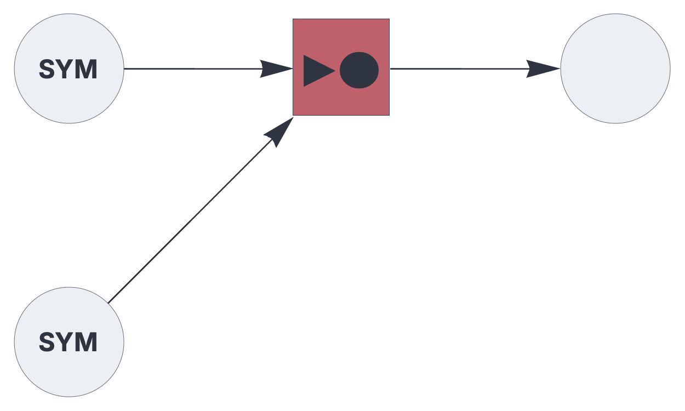
Storing 1.9 million associations requires a memory of dimension N = 3,000 if tokens are encoded with a population P = 10.
The memory inherently merges associations that share the same key into a single association. Retrieving such a one-to-many association typically results in a non-sparse representation. For example, a query with the word “freedom” returns a dense set with 350 active elements (a sparsity of about 12%), encoding the semantic field of the query term.
Dense representations are not suitable for direct associative memory queries, such as iterative decomposition which is restricted to bundles of approximately 10 tokens. Instead, we must reduce dense intermediate activations for further processing using a kWTA mechanism. The similarity of two words, for example, can be analyzed by activating their semantic fields and decomposing their overlap into separate tokens.
A similar approach extends to text paragraphs: accumulating the activations of every word into one single multiset and then reducing it via kWTA gives a sparse representation of the paragraph’s semantic field. This can be subsequently used for supervised classification or unsupervised clustering with a separate hetero-associative memory instance.
We can measure the semantic similarity between words directly through a comparison of their dense activation patterns. This requires a similarity metric that compensates for the probability of random overlaps among dense representations — a straight overlap or Jaccard distance calculation does not account for this. The adjusted Rand index (ARI), defined in the formula below, is a suitable measure for the similarity of dense distributed representations:
\texttt{ARI}(A, B, N) = \frac{|A \cap B| - \frac{|A| \cdot |B|}{N}}{\min(|A|,|B|) - \frac{|A| \cdot |B|}{N}}
Experiments using the word associations dataset validate the feasibility of this approach. For example, the ARI score between the words “ship” and “boat” is 0.614, while “ship” and “cheese” score at -0.025, indicating dissimilarity.
The following figure shows a similarity matrix computed for a few words via the ARI among their densely activated word associations.
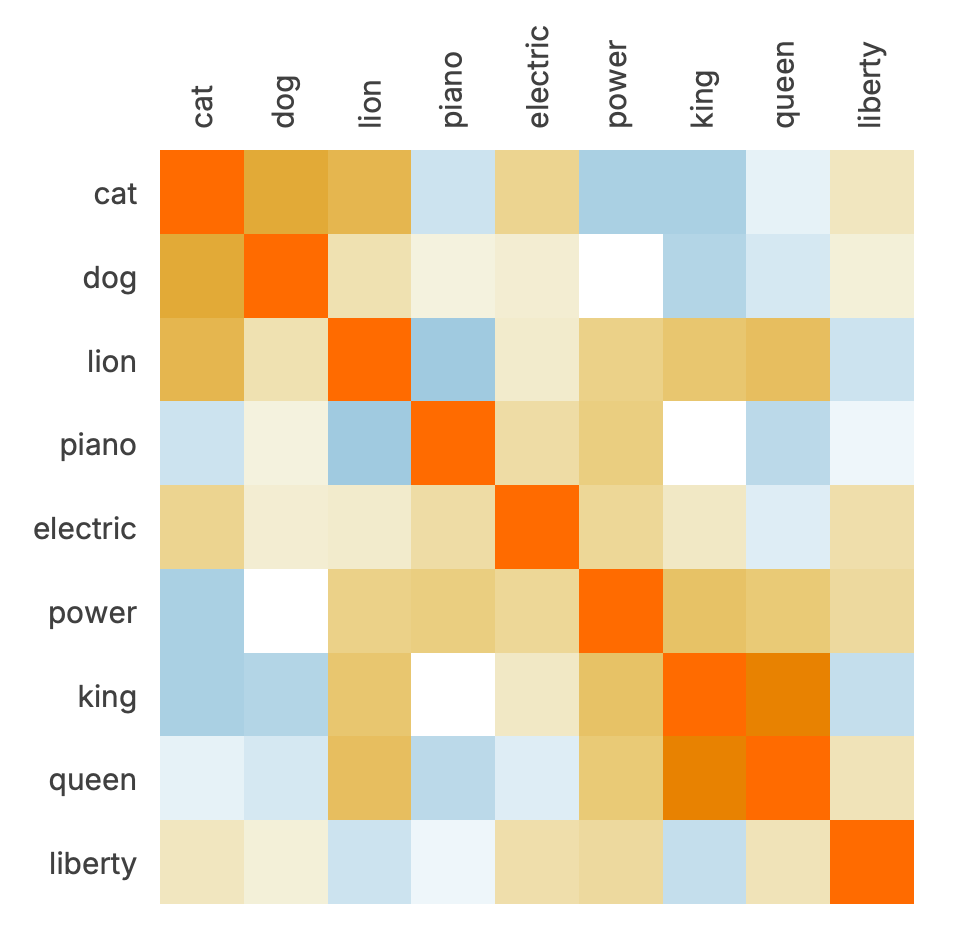
A similar result would be obtained using a topological hetero-associative memory algorithm that returns the raw activated hidden layer as a multiset, skipping the kWTA reduction to sparse binary sets. The neural equivalent of the ARI computation is a process located within the memory’s expanded hidden layer. Such mechanisms are a natural extension of our computational framework which does not expose the combinatorial state of the latent space.
Marvin Minsky’s frame theory, introduced in his 1974 MIT AI Memo, models knowledge as a collection of “frames”: modular data structures representing stereotyped situations. Frames function as interconnected grid-shaped subgraphs of the mind’s knowledge hypergraph. This nicely aligns with auto-associative topological memory which represents undirected hyperedges as bindings of sparse holographic representations (SHR).
A frame contains top-level nodes for fixed, invariant properties and lower-level terminals (“slots”) for specific instance data (“fillers”). These terminals carry default assignments that the system replaces when new information becomes available. This architecture enables pattern matching and common-sense reasoning, allowing a system to infer context from pre-stored templates.
Here is an example for a “country” frame. The first row contains the top-level nodes, the second row indicates the specific instance of the frame, and the fillers for their respective slots are in the third row:
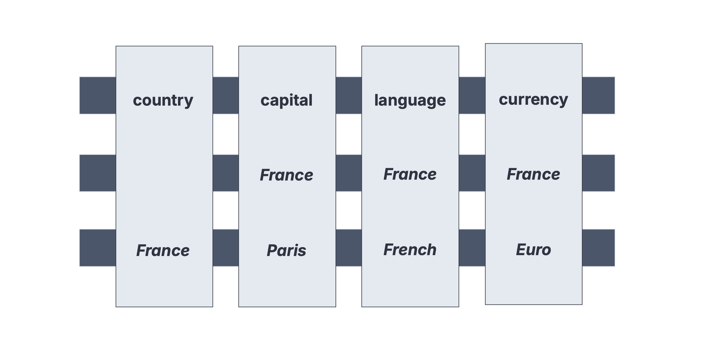
Each column represents a slot, binding a top-level node (for instance “capital”) with a filler value (“Paris”) in the context of the specific frame instance (“France”). The first column plays a special role: It binds the class (“country”) to the instance (“France”). In this bare-bones model, a frame always has three rows, while the number of columns varies. In more elaborate versions, additional information such as procedural instructions or type constraints, often called “facets”, can be attached via an extra row. And it might be useful to incorporate a unique pointer to serve as the frame’s universal identifier and locator. In the grid shown above, such a pointer would be placed in the empty cell at the left.
A column where the middle cell is empty binds a slot to a generic default value. This default will be used by any instance that has no filler (the bottom cell) specified. This behavior is an essential part of Minsky’s theory.
To realize a frame in auto-associative memory, we simply store each row and each column as bundles in memory. All elements (the intersections of rows and columns) are encoded as sparse holographic representations (SHRs). Storing rows or columns as bundles in memory binds their elements.
(Unordered columns are used here for simplicity. A more rigorous implementation would structure columns as non-overlapping triples.)
Columns can be queried in three directions: Memory retrieval with a bundle of two tokens adds the missing third token to complete the triad. In our example, querying with the bundle “capital France” returns “capital France Paris”. But we can also query with “capital Paris”, or “Paris France”. Similarly, querying the memory with elements of a row completes the row.
Minsky defined the process of completing a frame via horizontal and vertical queries as “matching”. This involves several cognitive sub-tasks which transition a general blueprint into a specific understanding of a situation: Slot-filler binding is the cognitive operation that binds a specific entity (“Paris”) to a known structural role (“capital”). If real-world data is missing, the mind automatically completes the frame using default values: typical expectations that stay in place until contradicted. This process is known as “default reasoning”. Minsky also argues that perception is driven by expectation — we use frames to make conjectures and fill in details that are not currently visible.
Frames are linked if they share an element, or several elements. Shared elements may occur in different rows. A class or instance name in one frame can serve as a filler value in another. This allows frames to be nested and to form hierarchies. But also cyclic structures are possible, as well as links to subgraphs that are not shaped like frames.
Integrating a new piece of knowledge into an existing frame is a multi-step operation — an aspect of memory consolidation.
A new item must be added to two bundles: the row and the column. This process involves reading an existing row, bundling it with the new item, and storing the resulting expanded row back into memory. The same steps are applied to the column.
The necessity to retrieve a bundle before storing an extended version of it back into memory follows from the mathematical irreducibility of autoassociations: There is no atomic memory operation that would append information to auto-associative memory.
Knowledge retrieval from frames works via simple associative memory queries, using either individual tokens (SHRs) or token bundles as input.
The following simple example, based on the “country” frame, demonstrates this mechanism. We populate the memory with the frame for “France” (as shown in the above figure), and also with the corresponding frames for “UK” and “Netherlands”.
In the interactive examples shown below, every token is implicitly encoded as an SHR, and adjacent tokens are bundled. The results of memory queries are implicitly unbundled via an item memory and displayed in decoded form.
First we query the memory with the class name. The output is a list of its top-level nodes and its instances:
> country
country capital language currency France UK NetherlandsThe class and the name of an instance are paired:
> country UK
country UKThe name of an instance is bound with all cells in the frame:
> France
country capital language currency France Paris French EuroQuerying with a top-level node pulls information from all rows and columns where it occurs:
> language
country capital language currency France French UK English
Netherlands DutchAnd the same happens with a filler token as input:
> English
language UK London English Pound
> Paris
capital France Paris French EuroThis joins information from two frames:
> Euro
currency France Paris French Netherlands Amsterdam Dutch Euro“Vertical” retrieval including the slot’s top-level node acts like a common database query:
> capital UK
capital UK London
> language France
language France French
> currency Netherlands
currency Netherlands Euro
> currency Pound
currency UK Pound
> currency Euro
currency France Netherlands EuroAs expected, the last example joins data from both frames where “currency” is bound to “Euro”.
In a “horizontal” query, where the input consists of filler values, the memory attempts to complete the row with known information:
> Euro Dutch
Netherlands Amsterdam Dutch Euro
> Euro Paris
France Paris French EuroHere the “Netherlands” frame wins against “France” with 3-to-2 matching elements:
> Euro Paris Amsterdam Dutch
Netherlands Amsterdam Dutch EuroThe following query results in a 2-to-2 tie between “France” and “UK”. In such an unstable situation, the outcome is influenced by possible random overlaps between the underlying SHRs, causing the two competing inputs to have slightly different populations. Also randomized subsampling of the input may nudge the system into a nearby stable state.
> France Paris UK London
UK LondonSimilarly, “diagonal” queries are generally unstable: the result depends on small representational details.
Sometimes we get reasonably meaningful answers:
> language Amsterdam
language Netherlands Dutch
> currency Paris
capital France Euro
> language London
capital UK English
> language Euro
France Paris French Euro
> currency English UK
UK PoundBut it also happens that a diagonal query bounces with a generic result or the verbatim input:
> currency Paris
country capital language currency
> language currency France
language currency FranceUnstable queries are a well-known phenomenon in Minsky’s frame theory, and an expected behavior within our independent implementation. Rather than a limitation, this instability provides a plausible model of the mind attempting to make sense of incoherent perceptions. In real-world applications there is normally a dense stream of inputs, and intermittent ambiguities dissolve as new information arrives.
The topological memory implementation of the frame model offers a simple mechanism to suppress unstable outcomes: increasing the pattern matching threshold to a value slightly above the SHR population will reliably generate an empty result in response to an ambiguous query.
Random walks on knowledge graphs are an essential mechanism of cognition, exploring mutual relationships and semantic similarities. With graphs stored in auto-associative memory, a random walk unfolds simply by chaining memory queries, using the subsampled output from one step as the input for the next. This is easily set up using an auto-associative memory and the complement update rule:
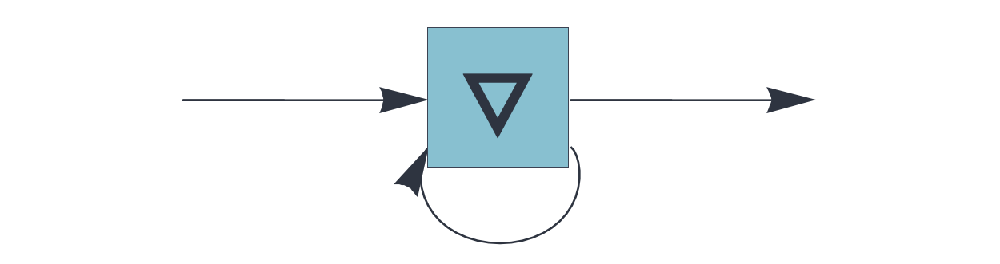
Once an initial signal from the memory’s input channel kicks off the process, the walk continues independently. If external input is received during a walk, it acts as a guide, nudging the walking direction towards the specified destination.
Querying a graph-like structure in auto-associative memory usually returns a bundle of vertices linked to the input. This output, a bundle of multiple nodes, serves as subsequent input. Resolving the superposition to a single node is not necessary. Stochastic subsampling ensures that each step follows a trajectory weighted by graph connectivity. This mechanism transforms the retrieval process into a Markovian walk across the memory landscape. Graph traversal is an inherent property of auto-associative memory retrieval. It requires no additional program logic or architectural overhead.
This process works equally for undirected graphs, for directed graphs (bipartite representations), and for labeled directed graphs (triple partitions). It also extends to hypergraphs where blocks contain bundles of vertices.
To experiment with this behavior, we generate a pseudorandom directed graph using a uniform graph distribution with 300 vertices and 600 edges. Edges are encoded as bipartite sets. The auto-associative memory applies the complement update rule and proportional stochastic decimation by a factor D = 0.8. The process starts from a single random node and runs for 300 steps.

During this run, about 100 different combinations of vertices get activated. As a consequence of the complement update rule, consecutive vertex constellations do not overlap.
Applying the difference update rule changes the behavior: now consecutive activations overlap, slowing down the walking pace and increasing the average size of active clusters. In this run (again with 300 steps) most of the generated states were distinct.

The setup described above implements an undirected random walk on a directed graph, because querying with a single vertex returns its neighborhood. State transitions happen between node clusters rather than individual nodes. Realizing a directed node-to-node walk requires two configuration changes: reducing the bundle retrieved from auto-associative memory to a single token by routing it through an item memory, and swapping the positions within the bipartite representation via crossing feedback lines.
The topological memory kernel, along with a library for set manipulation and validation testing, is available on GitHub. It provides a unified programming interface for both auto-associative and hetero-associative memory.
This reference implementation is written strictly in standard C. It has zero dependencies on external libraries and is fully portable across platforms. This allows direct execution on resource-constrained hardware. The reference implementation also serves as the baseline for porting the architecture to other languages and environments. To ensure consistency, all ports should include the provided test program to verify parity with the reference version.
Performance-critical subroutines, specifically memory access and bit-level operations, are optimized for single-threaded execution.
A typical AI development environment uses a high-level interpreted language, usually Python, as the frontend for scripting application logic and prototyping experimental models. All the performance-critical operations are delegated to low-level libraries. This C-language implementation can be easily integrated as a high-performance library with a variety of frontends.
Some notes on performance:
Storing an association into memory has a time complexity of \mathcal{O}(P^2), where P is the number of elements in the input pattern. This is independent of the amount of information already stored.
The standard C implementation, benchmarked on a 2023 laptop computer, achieves a single-threaded write speed of about 600,000 random associations per second, using hyperparameters N = 1,000 and P = 10. Given this high throughput, the code is well-suited for applications requiring real-time model updates.
Data retrieval also follows \mathcal{O}(P^2) complexity if the input is noise-free, remaining independent of memory density. Under the same testing configuration, the system retrieves roughly 100,000 items per second.
When retrieving information with a noisy input pattern, read performance is linked to the number of iterations needed to extract the best subset match. Each successive iteration accelerates as the number of active inputs drops. Empirical testing shows that doubling the input size by adding random input elements results in an approximate 4x decrease in retrieval speed.
The topological memory algorithm was initially prototyped in Mathematica, a high-level interpreted programming language. The native Mathematica version is included in the repository, alongside a package for designing high-level circuits. Consisting of just 50 lines of code, the Mathematica implementation is highly compact.
The standard C library can be dropped into Mathematica via a foreign function interface, replacing the native implementation. It should be straightforward to replicate this kind of setup with alternative (and probably more familiar) development environments.
The massive efficiency gap between an autonomous robot and a biological brain is not a hardware problem. Hardware simply mirrors the underlying data structures. The root problem lies in the computational foundation: the cost of dense matrix arithmetic compared to sparse, discrete operations.
Hardware optimized for discrete associative memory fundamentally diverges from contemporary AI accelerators. Graphics processing units (GPUs) and tensor processing units (TPUs) specialize in matrix multiplication. They lack the specialized circuitry required for bit-level operations on extended binary arrays — the core computational mechanism underlying topological memory.
Traditional computer architectures separate memory and processing, inevitably creating a data-transfer bottleneck. Because topological memory relies heavily on large-scale bitvector arithmetic, this separation severely limits overall performance. Scaling these systems requires moving beyond the current trend of computing in or near memory. Instead, the hardware must mimic the brain by computing directly with the memory itself, unifying storage and logic into a single mechanism.
Topological memory is based on binary logic and bit-plus-integer addition, lending itself to a direct integration with existing memory technologies. Neural networks rely on complex arithmetic that resists integration into high-density storage. This fundamental mismatch creates the memory wall bottleneck in modern AI accelerators.
Post-GPU hardware, optimized for AI applications based on topological memory, can take different shapes, as outlined in the following.
Dynamic random-access memory (DRAM) technology is a promising starting point for the design of a native topological memory processor. Standard DRAM row sizes (typically 8, 16, or 32 Kbits) align with the necessary dimensions of associative memory sets.
A DRAM-based accelerator augments high-density memory with specialized logic to store and retrieve associations. The unit requires very low external bandwidth because it only receives and transmits small, serialized sets. Internal logic expands these incoming sets into full bitvectors.
Some architectural details:
DRAM-based associative memory accelerators can be adapted into several distinct hardware formats:
This architecture computes directly in memory. That makes it ideal for continuous, real-time model updates under strict power constraints. Prime applications include battery-powered autonomous robots, drones, mobile devices, IoT hardware, and brain implants.
Certain applications, particularly autonomous robotics and edge devices, require their model memory to persist without continuous power. An associative memory unit built from NAND flash modules fulfills this need. We couple flash memory arrays with a custom bitvector processing unit. This ensures the system retains learned associations across power cycles and reboots.
NAND flash reads and writes data in large, contiguous pages. This architectural trait aligns perfectly with the demands of topological memory, which relies on processing extensive bitvectors simultaneously. The specialized controller executes the necessary logical operations directly alongside the storage modules, matching the wide data buses of the flash memory to the wide vector requirements of the associative algorithm.
Similar to DRAM-based designs, a NAND implementation drastically reduces the data transfer bottleneck. The heavy computational lifting occurs internally within the flash subsystem. The external interface is reserved exclusively for transmitting sparse data sets in a highly compressed, serialized format, ensuring rapid communication with the rest of the system using minimal bandwidth.
A powerful intelligent machine may consist of hundreds or thousands of circuit components with self-contained associative memory instances. These nodes are sparsely interconnected, fetching their inputs (serialized small sets) from the output registers of directly connected nodes. Nodes are individually programmed to carry out specific memory functions, as explored earlier in the discussion of neural circuit components. The connection topology is programmable and could even evolve at runtime in order to achieve a degree of plasticity.
Such a system can be built from memory units proposed in the previous section, combined with a configurable chip-to-chip interconnect. A low-bandwidth interconnect is adequate for peer-to-peer networking between memory units, as only sparse data is exchanged. It might even be feasible to build a system from geographically distributed units connected via wide-area networks, creating a form of hive intelligence. On the other end of the design spectrum, an entire self-contained system could be integrated onto a single silicon wafer.
The machine can be designed to tolerate small manufacturing faults and sporadic memory or transmission glitches, considering the associative memory’s resilience against systematic and statistical errors. This should significantly reduce production costs.
A von Neumann computer relies on a central processor. An associative connection machine has none: computation is fully distributed across decentralized memory units.
Some nodes can receive external inputs, which are already preprocessed and encoded as small sets. Different input nodes specialize in various data types, such as images, audio, text, or physical sensors. Similarly, specialized output nodes connect to decoders that transform small sets to external data formats. Different regions within the machine may be more or less active, depending on the computational task being performed. The system is always learning and adapting to changing external inputs, continuing processing even in their absence.
Conventional computers have two bottlenecks that lead to high-pressure data flow: small word sizes (up to 64 bits) and narrow memory interfaces. An associative connection machine uses hyperdimensional words (such as 8, 16 or 32 Kbits). Neighboring nodes exchange only sparse data.
Eliminating these two bottlenecks minimizes the data pressure, allowing the system to run at comparatively low clock speeds. Operating at megahertz instead of the usual gigahertz frequencies, it would consume only a tiny fraction of the energy required by today’s AI accelerators.
Assuming a 10,000-fold increase in parallelization due to hyperdimensional word sizes, the system can operate at a proportionally lower clock speed. Because power consumption scales quadratically with frequency, an associative connection machine requires merely 1/10,000 the power of a conventional computer performing the identical task. This energy efficiency directly mirrors the human brain, which relies on massive spatial parallelization to compensate for the fundamentally slow operating speeds of biological neurons.
The baseline topological memory algorithm uses a binary storage model. This approach is significantly more space-efficient than storing integer counters or floating-point values.
Each storage bit represents the topological connectedness between an input pair and an output element. A 0 means no link exists, and a 1 means at least one link exists. This model does not count parallel connections, as redundant routes do not alter the transmitted binary signal.
An alternative storage model might use non-binary memory values, tracking the number of topological connections, or serving as an abstract model of connection strength.
While much less space-efficient than a binary model, this approach has an immediate advantage: it enables the exact reversal of a write operation without degrading overlapping, unrelated information. This precise rollback feature is useful for technical applications, even if it diverges from biological memory decay models.
The baseline topological memory algorithm stores information in memory sets, each linked to a node within the expanded hidden layer. In a model based on integer counters, those memory sets are replaced with memory multisets. The multiplicity of an element within a memory multiset indicates the number of output patterns to which a specific hidden layer node contributes. Storing new information increments those counters, and decrementing the same counters reverses the storage operation.
Here is the modified write algorithm for a memory model with integer counters. Step 2 uses multiset aggregation where the original algorithm uses the union operation:
Input: Sets A and B
Expansion coding: Map 2-subsets \binom{A}{2} to memory multisets M_{ij}
Memory update:M_{ij} \gets M_{ij} \uplus B (multiset summation)
The corresponding deletion process uses multiset subtraction, stopping at zero because an element cannot appear a negative number of times.
Input: Sets A and B
Expansion coding: Map 2-subsets \binom{A}{2} to memory multisets M_{ij}
Memory deletion:M_{ij} \gets M_{ij} \setminus B (truncated multiset subtraction)
Memory retrieval aggregates the overall response multiset by combining the memory multisets, accurately adding up each element’s multiplicities. Here are the steps for a single-pass memory query.
Input: Query set A
Output: Unique best match Y, or an empty set \varnothing
Threshold check: If |A| < T return \varnothing
Expansion coding: Map 2-subsets \binom{A}{2} to memory multisets M_{ij}
Aggregate:R \gets \sum_{ij} M_{ij} (overall response multiset)
Select: Y \gets R_{\top P_B} (computing kWTA)
Threshold check: If |Y| < P_B return \varnothing
Output: return Y
This algorithm can store and retrieve heteroassociations much like the core algorithm of topological memory. Using integer counters instead of bits does not increase the memory’s storage capacity.
Unlike topological memory, this model does not deduplicate information: storing the same association twice increases its weight during memory retrieval.
However, neither this counter-based algorithm nor variants with continuous weights are suitable for autoassociations. When storing autoassociations, the values corresponding to the self-correlations quickly inflate because they increase at every step. When self-correlation dominates cross-correlation, the memory collapses into a useless identity operation: a memory query with any input pattern, whether known or unknown, returns exactly the input. A similar phenomenon has been observed in classical auto-associative memories based on continuous weights.
This demonstrates that the binary model of topological memory connections is not just a space optimization. Instead, binary memory storage is a functional necessity for auto-associative functionality to emerge.
Forgetting is a natural behavior of memory: it is necessary to prevent a loss of functionality as the memory fills up. Topological memory reliably functions up to a density \rho^* = 0.5, and smoothly deteriorates above this mark. We model information decay as a discrete process that removes connections within the memory topology, much like learning opens such connections.
Random removal of topological connections causes information to degrade gracefully, rather than instantly erasing entire patterns. This is because topological memory stores information redundantly: sets distribute information across multiple elements, and the memory distributes the information for each element pair across its vast latent space. An association remains accessible as long as the number of its remaining intact connections stays at or above the pattern matching threshold (T). Forgetting is the transition where the activation of a pattern, thinned by stochastic decay, finally falls below this threshold: the information becomes inaccessible to the retrieval algorithm, and is categorized as “unknown”.
This mechanism differs from the catastrophic forgetting found in deep neural networks. In connectionist models, global weight adjustments originating from a single gradient can inadvertently overwrite previously stored information. In topological memory, even though bits are shared, the sparsity and hyperdimensionality of the space ensure that random bit removal has only local effects within the entire knowledge base. The discrete nature of patterns prevents the kind of ripple effects seen in conventional scalar weight-shifting.
Local forgetting
The stochastic dissolution of signal paths within the memory topology. Unlike catastrophic forgetting, it causes a graceful thinning of information that only renders a pattern inaccessible when its activation falls below the pattern matching threshold.
We can model stochastic information decay with two distinct approaches: by decreasing entropy or by increasing entropy.
Information entropy decreases if we randomly clear memory locations as we store new information. Here is a computationally convenient mechanism: whenever we write B bits into memory, we clear C \ge B bits chosen uniformly at random across the entire memory space. The order of these operations does not matter — collisions are rare because the memory space is hyperdimensional. Writing or clearing a bit means setting its value to on or off, respectively — regardless of its current state.
With this setup, the memory density \rho converges to a steady state:
\rho_\infty \approx \frac{B}{B + C}
If the writing and deletion rates are the same, the memory density remains at a safe value \rho^* = 0.5. All active bits reflect information that has been stored in memory. This setup is a suitable model for a long-term memory with graceful, non-catastrophic information decay.
The same mechanism also serves as a model of short-term memory where the memory density always remains low because network connections quickly dissolve. Memory traces degrade via decreasing entropy (the monotone effect). In the brain, the dentate gyrus (DG) shows this behavior: a low density directly correlates with fast information decay.
Note that simulating short-term memory with this approach has a cost. Maintaining a low density — say, 5 percent as empirically observed in the DG — would require an aggressive deletion rate that is about 20 times the writing rate.
The reference implementation of the core retrieval algorithm includes an optional decay mechanism that caps each hidden node’s connections at half of all possible connections N_B. This is triggered whenever a hidden node (the memory sets M_{ij}) is updated during a memory write process.
As an interesting alternative to the information decay mechanism outlined above, we can model forgetting by increasing entropy. This involves writing random on bits that do not correspond to known information.
Consider a memory filled to capacity \rho^* = 0.5 with random bits. With respect to the topological memory retrieval algorithm, this memory is effectively empty. Any query will fail to return a result. But if we store an association on top of this random noise, it can be accurately retrieved. (Note that memory retrieval works reliably for memory densities \rho \lesssim 0.6).
To maintain a steady-state density as well as high information entropy, we must add and clear random bits during each memory write operation. For instance, when writing a pattern involving B bits, we also write B random bits and independently clear 2B bits randomly chosen from all memory locations. This results in the memory density fluctuating around 0.5 with fast information decay due to the heat death effect: most active bits do not reflect previously stored information.
This entropy-increasing mechanism works well as a computational model of short-term memory, as it requires a much lower deletion rate than the entropy-decreasing mechanism.
When a stochastic memory decay mechanism is enabled, we can protect commonly used memory traces from fading by writing them back to memory after each successful retrieval. With a memory operating at its nominal capacity, this write operation will trigger the stochastic deletion of other, competing memories. This approach aligns with a phenomenon known as retrieval-inspired forgetting (RIF) in cognitive psychology: successfully recalling a memory suppresses and weakens competing, noisy associations.
Besides autoassociations and heteroassociations, the core algorithm supports a third type: crossassociations. This structure, first described in the Triadic Memory paper, completes the basic associative memory mechanisms in this computational framework.
Crossassociation A tridirectional memory relation (A \times B \to C) that links all pairwise combinations of elements in two sets to a third set.
A crossassociation A \times B \to C links all pairwise combinations of elements in A and B to all elements of C. Here A \times B denotes the usual Cartesian product between two sets. In standard hetero-associative memory, storing a bundle A \cup B \to C automatically writes the subcomponents A \to C, B \to C, and the crossassociation A \times B \to C.
This provides a direct mechanism for unbinding. A standard binding A \cup B \to A \cup B mathematically decomposes into A \to A, A \to B, B \to A, B \to B, and the crossassociation A \times B \to A \cup B. Selectively clearing only the cross-associative component decouples the tokens without destroying the individual items or their other bindings.
Cross-associative topology is fully symmetric across the A, B, and C triad. Storing A \times B \to C is mathematically identical to storing B \times C \to A or storing C \times A \to B. Therefore, crossassociations can be queried along all three directions with equal accuracy.
Cascaded k-winners-take-all (kWTA) retrieval bypasses the combinatorial calculations of the core algorithm. It applies thresholding in two stages: first to the contributions of each individual input element, and second to the aggregated results.
This variant sacrifices a slight amount of noise tolerance and false-positive resilience above the nominal memory capacity. For most practical applications, this tradeoff is negligible.
Here are the algorithmic steps:
Input: Query set A, hyperparameters T and P_B
Output: Best match Y, or an empty set \varnothing
Initialize:X \gets A
Threshold check: If |X| < T return \varnothing
Expansion coding: Map 2-subsets \binom{X}{2} to memory sets M_{ij}
Aggregate:R_i \gets \sum_{j} M_{ij} (per-element contribution)
Select: Y_i \gets (R_i)_{\top P_B} (kWTA per input element)
Aggregate: Y \gets (\sum_i Y_i)_{\top P_B} (overall kWTA)
Threshold check: If |Y| < P_B return \varnothing
Per-element weights:w_i \gets |Y_i \cap Y|
Refine:X \gets X \setminus X_\text{min} (drop weakest contributors)
Convergence test: If no elements were dropped in the previous step, return Y
Iterate: Go to step 2
On conventional CPUs, this variant runs slower than the reference algorithm because the system must calculate steps 4 and 5 sequentially for every input element. However, with-memory computing architectures perform bitwise aggregation and kWTA in parallel, eliminating this bottleneck. On specialized hardware, cascaded kWTA is likely the optimal retrieval method.
The core memory retrieval algorithm relies on threshold checks and noise-cancelling iterations to separate known from unknown query patterns. This functionality is essential for processing symbolic tokens (for example item stores and hyperassociations) where known items can be reliably extracted from noisy signals.
When working with sparse distributed representations (SDRs) that encode physical data, there is often no clear boundary between signals and noise. In such scenarios, a single-pass retrieval algorithm without threshold checks can be the most efficient choice. This process simply calculates the k-winners-take-all response to the hidden layer activations, always returning a non-empty set if there are at least k = P_B output elements.
Here is an outline of the steps:
Input: Query set A, hyperparameter P_B
Output: K-winners-take-all result Y, or an empty set \varnothing
Expansion coding: Map 2-subsets \binom{A}{2} to memory sets M_{ij}
Aggregate:R \gets \sum_{ij} M_{ij} (overall response multiset)
Select: Y \gets R_{\top P_B} (kWTA with cutoff 1)
This method is equivalent to the core retrieval algorithm with the pattern matching threshold set to T = 2. Like the core algorithm, it performs subset pattern matching, but without determining the contributing elements of the query pattern. Whereas the core algorithm isolates a unique best match and rejects unknown inputs, this retrieval method always returns a raw statistical result, even for completely random inputs.
David Marr (1969) was the first to postulate that the cerebellum functions as an associative memory. Independently, James Albus (1971) developed a similar theory. Their combined work, the Marr-Albus model, remains valid as a simplified computational model of the cerebellum.
The cerebellum’s system architecture matches directly the class of network topologies from which hetero-associative memory functionality emerges.
Mossy fibers, the cerebellum’s primary input layer, are randomly connected to a massive number of granule cells, forming the memory’s hidden layer. Whereas our reference architecture specifies hidden layer nodes to be doubly connected, each individual granule cell receives input from about four mossy fibers. This lowers the hidden layer size required for memory operation, at the cost of a capacity reduction. (The standard C implementation of the memory algorithm applies a similar tweak to accommodate input dimensions that would otherwise exceed the available RAM.)
Granule cells are massively connected via their parallel fiber axons to Purkinje cells, the memory’s output layer. Anatomical studies such as those by Harvey (1988) and Napper (1988) showed that if a parallel fiber passes through a Purkinje cell’s dendritic tree, it has roughly a 54 percent probability of forming a synapse. This means about half of all physical crossings result in a potential synaptic connection. This finding aligns with our memory model, which saturates beyond a 50 percent memory density.
Climbing fibers project into the cerebellum, connecting approximately one-to-one with each Purkinje cell. This is the memory’s secondary input (the teaching signal B in associations A \to B), which is the signature of hetero-associative topologies and supervised learning.
Interestingly, climbing fibers fire continuously at an average rate of about 1 Hz, mimicking irregular, Poisson-like noise. Hypothetically, this random generator might be the source of new SHRs which get deployed within the hetero-encoding mechanism. Because climbing fiber activation triggers a prolonged depolarization, such complex spikes can be temporally integrated to form new sparse representations, ready to be used as a new teaching signal.
The neural circuitry of the cerebellum is highly homogeneous. This suggests that it applies the same algorithm to all information it receives, regardless of what that information means. Based on the similarity of the cerebellum’s architecture with topological associative memory, I propose that this universal algorithm is hetero-associative memory retrieval, functioning via subset pattern matching.
Reverse-engineering the neocortex’s architecture from the viewpoint of our topological memory shows that it is auto-associative: input and output functions are localized within the same neural layer. And the architecture lacks a secondary input, analogous to the cerebellum’s climbing fibers, required for learning heteroassociations.
We see this dual-use design of the input/output layer in a phenomenon known as temporal multiplexing: a quick, synchronized burst (the low-latency phase) acts as the input query, while the subsequent repetitions (high-latency phase) represent the retrieved memory. These repetitions likely serve to filter out noise, much like the iterative steps in the algorithm described earlier. The precise timing of those bursts does not encode information, but may be relevant for synchronization.
Unlike the cerebellum, where a massive amount of specialized neurons form the memory’s hidden layer, the neocortex employs a recurrent architecture with an intermediate dendritic network to realize its associative memory topology. While compact and resource-efficient, this design constrains the physical scale of a fully connected hidden layer to a dimensionality permitted by dendritic anatomy. For this reason, the neocortex is segmented into uniform units known as columns. Within the framework of topological associative memory, a cortical column is the largest possible unit allowing an approximately fully connected hidden layer.
Vernon Mountcastle (1957) pioneered the idea that the neocortex is divided into uniform, repeating computing units which all use the same universal algorithm to process information. Mountcastle left the mechanics of this algorithm as an open question. The topological memory framework suggests an answer: the algorithm performed by uniform units of computation is an auto-associative memory which retrieves information via subset pattern matching.
What specific computation a cortical column performs depends on the kind of information being processed, and how it is encoded into sets. Generally, auto-associative memory can be considered a data store with the ability to complete missing information. Applied to to highly-overlapping representations of sensory data, the memory fills in and predicts missing perceptual data. It processes spatio-temporal information encoded via grid-cell-like mechanisms. High-level cognitive processes involve auto-associative memory operating on complex data structures composed of symbols and pointers, combined to represent knowledge as hypergraphs.
Mountcastle did not believe his columnar theory extended to other parts of the brain, such as the cerebellum. In fact, he viewed the neocortex’s particular structure as the exclusive key to higher brain function. But from the perspective of topological memory, the neocortex and the cerebellum share the same abstract network topology from which associative memory emerges. This suggests that both structures, despite their evident differences, perform the same basic computation.
The associative memory’s storage model captures the topology of the corresponding biological network. Its storage bits are Boolean parameters which model the presence of a connection from a point in the expanded hidden layer to a point in the output layer. A 0 value means there is no route, and a value of 1 indicates that there is at least one open route. The number of routes between two points is not counted.
In this topological model, the connections from the input to the hidden layer are fixed, and learning takes place anywhere between the latent and the output layer. This abstraction from specific biological mechanisms accommodates both traditional synaptic plasticity and the increasingly supported hypothesis of dendritic learning.
Standard neuroscience views synapses as the primary locus of learning and memory. This is based on Donald Hebb’s suggestion that learning occurs through the modification of synaptic strength. Hebb (1949) described synaptic plasticity from a biological perspective. Contrary to common belief, he did not imply that connection strength is a carrier of continuous information. Within the context of our topological associative memory, synaptic weight is strictly binary. This is consistent with Warren McCulloch’s and Walter Pitts’ original artificial neuron model (1943). If synaptic strength is indeed a valid concept, its function would be to encode the connection’s permanence, not just a fractional piece of a memory.
Synaptic long-term potentiation is traditionally viewed as the primary mechanism of memory. But recent evidence points to dendritic plasticity as another essential site of learning. In a model where synaptic connections are unaffected by the learning process — whether they stay static or constantly fluctuate — the locus of memory shifts to the dendrites. This design is still fully consistent with Donald Hebb’s postulate that neurons that wire together fire together.
The following sketch illustrates this scheme: the hidden layer (shown as parallel lines on top) connects via fixed synapses to three dendrites of a postsynaptic neuron, with each dendrite behaving like an electric switch.
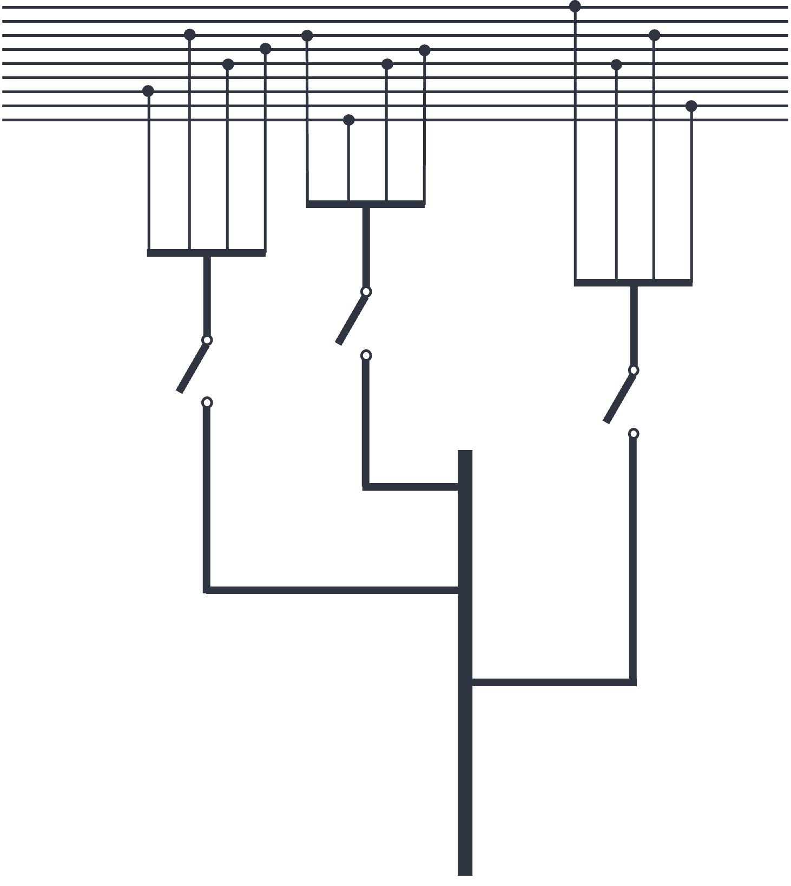
A presynaptic neuron may have multiple connections to the same postsynaptic neuron via different dendrites. Because the voltage across every branch of a parallel circuit is equal, the same signal is transmitted regardless of the number of possible connections. For this reason, the topological associative memory uses a binary storage model as opposed to integer weights.
The dendritic learning hypothesis aligns well with our architecture: fixed synapses could be a natural source of pre-wired random encodings (SHRs) that can be readily and efficiently deployed. Since dendrites are anatomically closer to the neuron’s soma (cell body) than individual synapses, the proposed learning mechanism could function faster. Also, the total number of variable parameters required for learning would be significantly lower, as a single neuron has fewer dendrites than synapses.
A simple binary switching mechanism within each dendrite would suffice for topological associative memory to emerge — there is no need for dendritic plasticity to provide counters or continuous weights.
The model that dendrites function as dual-state switches is a clear, testable hypothesis for experimental neuroscience.
The binding problem in cognitive science defines the challenge of integrating separate sensory streams — such as color, shape, motion, and location — into a coherent experience. In visual perception, this requires precisely associating attributes with their respective objects, such as binding “red” to an apple and “green” to a grape. Dropping this precise linkage results in an illusory conjunction, such as perceiving a red grape.
Computationally, this integration can be resolved through the binding operation within auto-associative memory: storing a bundle of sparse holographic representations A \cup B \cup C in memory binds them together. Querying the memory with A \cup B retrieves the complete pattern A \cup B \cup C and returns C after subtracting the matching elements. This mechanism constitutes the computational basis for “chunking”.
So when the mind perceives “red” and “apple”, it replaces those two patterns with one combined “redapple” pattern, provided this is a known combination. Chunking replaces two patterns with one dissimilar pattern, which amounts to a higher-level representation. Repeated application of this mechanism creates a hierarchy. And each step reduces the number of active elements, which preserves overall sparsity. This process happens “in place”, operating on incoming data streams.
Encounters with novel combinations, such as “blue banana”, trigger a different process. Attempting to chunk those two items fails: the memory query with the bundle “blue banana” gives an empty result. In this case, the system needs to generate a new random holographic representation for “bluebanana”, and then bind it to the bundle “blue banana”.
In sparse distributed representations (SDRs), each element carries specific semantic meaning. Our approach isolates semantic meaning to the newly generated SHR, where each subset has the same meaning as the whole.
An associative memory that can handle this mechanism at the time scale of human perception must continuously generate and store random representations on the fly. This implies a fast decay rate, guarding the memory from filling up in no time. This short-term associative memory works exactly like long-term topological memory, the only difference being in the permanence of information. And we can also conclude that this short-term associative memory is a source of higher-level sparse holographic representations.
Fast associative learning correlates with short-term plasticity — a phenomenon observed primarily in the prefrontal cortex and parts of the hippocampus.
Childhood amnesia — the inability to recall memories prior to age three or four — lacks a consensus biological explanation. This phenomenon turns out to be consistent with our topological model of long-term memory.
A newborn possesses roughly one-quarter of the brain cells of an adult. Most neurons develop during the first few years of life. Translated to hyperdimensional terms, the universal set dimensionality quadruples during early childhood. Assuming the brain maintains a constant sparsity ratio throughout this growth, early memories are encoded by a much smaller neural population. As the overall dimensionality expands, these early encodings fall permanently below the adult pattern matching threshold, making them inaccessible via associative memory retrieval.
In the topological memory framework, the pattern matching threshold T functions as a discrete guardrail, separating known symbols from random noise. Because representations are based on discrete sets, the memory cannot retrieve fractional elements.
This predicts a divergent, staircase-shaped ultrasensitivity in the neural response to chemical modulation. Drug-induced lowering of T results in a series of punctuated increases of activity in local circuits that perform memory retrieval. Each “step” in the function occurs at the moment the biological equivalent of the threshold drops by one unit (for instance from 7 to 6), suddenly allowing smaller subsets to match with information stored in memory. Due to the combinatorics of subset matching, these steps become increasingly steeper.
This effect can manifest in various ways across different brain areas, potentially causing sensory hallucinations as well as an impairment of symbolic thinking. But this would be hard to observe at a system-wide scale (via psychological experiments) where the aggregate behaviors of many individual circuits average out. At a micro-circuit level, however, a step-wise activity increase should be measurable via electrophysiological experiments. Observing this effect would validate our hypothesis that discrete set matching is a core operation of the brain.
Within the topological memory framework, stochastic subsampling is a fundamental mechanism which drives knowledge representation and reasoning.
Associative memory retrieval involving composite symbolic data structures — SHR bundles, bindings and hypergraphs — requires a proportional decimation of active elements. This process breaks the representational symmetry between bundled items, which allows a best subset match to emerge.
This decimation factor D must lie within a narrow, optimal zone. If decimation is too weak (D \lesssim 1), ties between competing possible matches remain. If it is too aggressive (D \ll 0.8), constituent SHRs are likely to be pushed below the memory’s pattern matching threshold. Values outside the optimal zone result in cognitive failures, for instance the inability to recall known concepts.
Computational experiments show that subsampling by a decimation factor D \approx 0.8 is most suitable to minimize these failure modes.
This model predicts the existence of a neural equivalent of stochastic proportional decimation: a neuromodulatory mechanism that effectively fine-tunes activity levels to optimize memory retrieval. This would affect higher-level cognitive functions (driven by sparse holographic representations) rather than perception (sparse distributed representations). The effect would manifest as a peak in cognitive performance, measured within a narrow interval around the modulatory strength corresponding to D \approx 0.8. This response curve is shown qualitatively in the following figure.
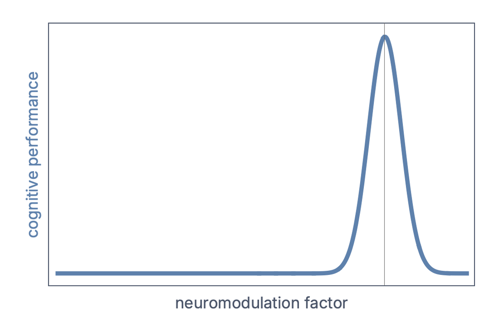
In our computational framework, hyperedges are bundles of sparse holographic representations (SHRs) with uniform populations. This predicts the existence of neural activity patterns where the number of firing neurons manifests in tiers. These levels would roughly correspond to integer multiples of the underlying SHR size, subject to small interference from spurious overlaps.
Experimentally observing this signature pattern allows us to determine the size of a biological SHR from the uniform distance between these activity levels. This measurement provides an empirically grounded hyperparameter for the development of biologically plausible AGI models.
This appendix details the derivations of the memory’s storage capacity for autoassociations, heteroassociations, and partitioned representations. These calculations require only entry-level combinatorics and should therefore be accessible to a wide audience.
We define the nominal capacity C of an associative memory as the number of random associations that can be stored before half of the memory’s storage locations are set to 1. This corresponds to a memory density of \rho^* = 0.5.
Let V be the total number of memory storage locations (bits), corresponding to the number of possible topological connections between the memory’s expanded hidden layer and every output element. This volume depends on the memory’s hyperparameters and the structure of associations to be stored.
Each memory storage operation sets L bits to 1, regardless of their previous state. Assuming associations are random and uniformly distributed, the probability that any specific bit is not flipped to 1 during a single write operation is 1 - L/V.
The probability that a bit remains 0 after C independent write operations is:
P_0 = \left(1 - \frac{L}{V}\right)^C
To calculate the nominal capacity, we set this probability to 1/2:
\left(1 - \frac{L}{V}\right)^C = \frac{1}{2}
Taking the logarithm of both sides:
C \ln\left(1 - \frac{L}{V}\right) = -\ln(2)
Because the memory is highly sparse (L \ll V), we can apply the approximation \ln(1 - x) \approx -x for small values of x:
C \left(-\frac{L}{V}\right) \approx -\ln(2)
This gives the nominal capacity for a general associative memory:
C \approx \ln(2) \frac{V}{L}
We now calculate the capacity of a hetero-associative memory, storing associations of the form A \to B. The input and output spaces are defined by their dimensions N_A and N_B, respectively, and by their sparse populations P_A and P_B. The total volume of binary storage locations in this space is:
V_\text{hetero} = \frac{N_A (N_A - 1)}{2} N_B
Storing a single association affects L bits:
L_\text{hetero} = \frac{P_A (P_A - 1)}{2} P_B
Substituting V and L in the general formula derived above gives the nominal storage capacity of hetero-associative memory:
C_\text{hetero} \approx \ln(2) \frac{V}{L} = \ln(2) \frac{N_A (N_A - 1) N_B} {P_A (P_A - 1) P_B}
Auto-associative memory (A \to A) shares identical input and output spaces (N_A = N_B = N and P_A = P_B = P). While one might expect its capacity to be the same as the hetero-associative capacity using these shared parameters, the auto-associative capacity is actually higher by a factor of P/(P-2).
This increase is owed to the inherent redundancy of self-correlation. In topological memory, a memory set M_{ij} links the input pair (i, j) to the output elements. But in an autoassociation, the output pattern is identical to the input pattern. Therefore, the output always includes i and j — these elements are clamped, which means their topological connections do not carry information. The memory only needs to record the connections from (i, j) to the other P - 2 elements in the active set.
Adjusting our parameters for the informational space: The effective number of output dimensions is N - 2, resulting in an addressable volume of
V_\text{auto} = \frac{N (N - 1)}{2} (N-2)
The effective number of bits flipped per pair during a write operation is P - 2. Storing a single autoassociation affects L bits:
L_\text{auto} = \frac{P (P - 1)}{2} (P - 2)
Substituting these into the baseline capacity equation:
C_{\text{auto}} \approx \ln(2) \frac{N (N - 1) (N - 2)}{P (P - 1) (P - 2)}
Comparing this to hetero-associative memory (C_{\text{hetero}}):
\frac{C_{\text{auto}}}{C_{\text{hetero}}} = \frac{P(N-2)}{N(P-2)}
For very large dimensions N, we can approximate this scaling factor by
\frac{C_{\text{auto}}}{C_{\text{hetero}}} \approx \frac{P}{P - 2}
We now determine the capacity of a bidirectional associative memory, realized by partitioning auto-associative memory into two blocks, (A, B), each with dimension N and population P. The combined input has a total dimension of 2N and a population of 2P.
To calculate capacity, we visualize the expanded latent space as a triangular prism. The base of this prism represents all pair-wise combinations of the 2P input elements, and the height represents the 2N output elements. This base can be divided into three geometric regions:
As random associations are stored, these regions do not fill at the same rate. The memory’s overall capacity is bottlenecked by the region that reaches a density of \rho^* = 0.5 first.
We first isolate the cross-correlating division. The total number of addressable locations in this cross-correlating space involves the N \times N pairs connecting to the 2N output elements. But because this memory represents autoassociations where two output elements are clamped, the effective output dimension is only 2N -2. The addressable volume of this space is given by:
V_{\text{cross}} = N^2 (2N-2)
The effective number of bits flipped per pair during a write operation is 2P - 2. Storing an autoassociation affects L_{\text{cross}} bits within the cross-correlating region:
L_{\text{cross}} = P^2 (2P - 2)
Substituting these values into the baseline capacity equation yields:
C_{\text{cross}} \approx \ln(2) \frac{N^2 (N - 1)}{P^2 (P - 1)}
Next, we calculate the capacity of the self-correlating divisions. Adjusted for the two clamped output elements, each of the two divisions with a triangular baseline has the volume
V_{\text{self}} = \frac{N (N-1)}{2} (2N - 2)
The number of bits affected by storing an autoassociation within this region is given by:
L_{\text{self}} = \frac{P (P-1)}{2} (2P - 2)
The resulting capacity for the self-correlating division is therefore
C_{\text{self}} \approx \ln(2) \frac{N (N - 1)^2 }{P (P - 1)^2}
As expected, the capacity C_{\text{self}} is slightly larger than C_{\text{cross}}: the cross-correlating region fills up faster, and therefore constrains the overall capacity of the bidirectional memory:
C_{\text{bam}} \approx \ln(2) \frac{N^2 (N - 1)}{P^2 (P - 1)}
We can compare this bipartite capacity to the capacity of a standard, unpartitioned auto-associative memory. If we assume a total combined dimension 2 N and population 2P, the ratio is:
\frac{C_{\text{bam}}}{C_{\text{auto}}} = \frac{\ln(2) \dfrac{N^2 (N - 1)}{P^2 (P - 1)}}{\ln(2) \dfrac{2N (2N - 1)(2N - 2)}{2P (2P - 1)(2P - 2)}} = \frac{N(2P - 1)}{P(2 N - 1)} \approx \frac{2P - 1}{2 P}
Thus, splitting an auto-associative memory with total population P_\text{total} into two disjoint blocks reduces its nominal memory capacity by approximately a factor (P_\text{total} - 1)/ P_\text{total}.
Consider now the general case of a multi-partition auto-associative memory. Following the derivation discussed for the bipartite memory, we divide the footprint of the memory space (a prism) into self-correlating and cross-correlating parts. This tiling is shown here for b = 4 partitions:
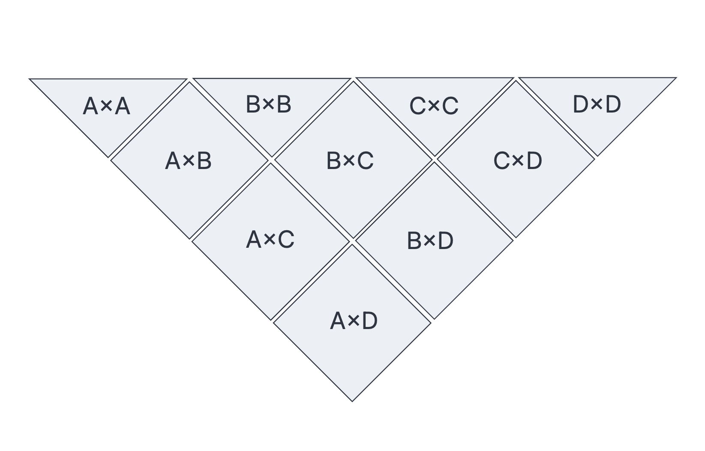
As in the bipartite case, the memory capacity is determined by the cross-correlating divisions (the squares in the figure).
C_{\text{partitioned}} \approx \ln(2) \frac{N^2 (b N - 2)}{P^2 (b P - 2)}
Partitioning an auto-associative memory with total dimension b N and total population b P into b blocks changes its capacity according to this ratio:
\frac{C_{\text{partitioned}}}{C_{\text{auto}}} = \frac{\ln(2) \dfrac{N^2 (b N - 2)}{P^2 (b P - 2)}}{\ln(2) \dfrac{b N (b N - 1)(b N - 2)}{b P (b P - 1)(b P - 2)}} = \frac{N(b P-1)}{P (b N-1)} \approx \frac{b P-1}{b P}
Because splitting the input layer into two blocks lowers the capacity, one might expect this trend to continue as the memory is divided up into more than two partitions. But the contrary is true: splitting an auto-associative memory with total population P_\text{total} into any number of disjoint blocks reduces its nominal memory capacity by approximately a factor (P_\text{total} - 1)/ P_\text{total}, independently of the number of blocks.
We conclude that block coding within auto-associative memory has only a minor impact on storage capacity, regardless of the partitioning.
The following table summarizes the main differences between the connectionist deep learning paradigm and the computationalist framework introduced in this work.
| Deep Neural Networks | Topological Memory | |
|---|---|---|
| AI paradigm | emerging from data | symbolic reasoning |
| network architecture | primarily feedforward | inherently recurrent |
| representation | emergent from weights | hypergraphs, nested data structures |
| compositionality | soft (entangled) | strict (exact) |
| embedding | dense continuous dimensions | sparse hyperdimensional |
| memory model | scalar synaptic weights | discrete topology (open or closed routes) |
| short-term memory | hidden states | topology with faster decay |
| core algorithm | dot product, matrix multiplication | subset matching |
| mathematical foundation | calculus, linear algebra | set theory, combinatorics |
| learning rule | global (backprop) | local (topological plasticity) |
| learning dynamics | offline / batch | online / atomic |
| symbol grounding | entangled continuous spaces | heteroencoding SDRs to SHRs |
| information decay | catastrophic forgetting / pruning | stochastic decay |
| retrieval reliability | statistical approximation | exact pattern matching |
| hardware architecture | von Neumann / memory wall | neuromorphic / in-memory |
Last updated: 29 June 2026